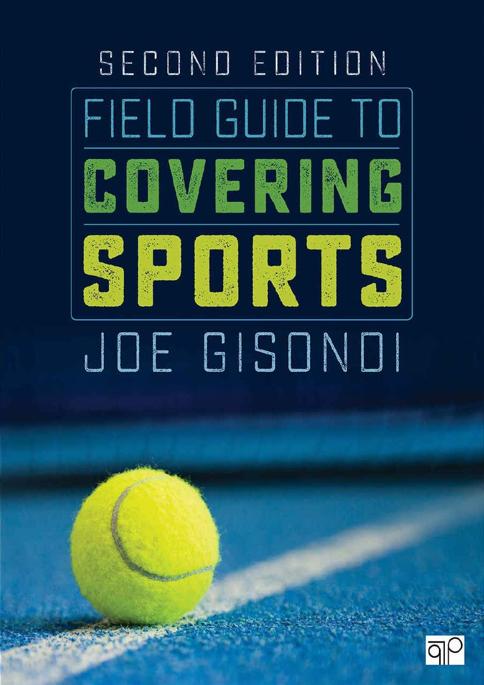
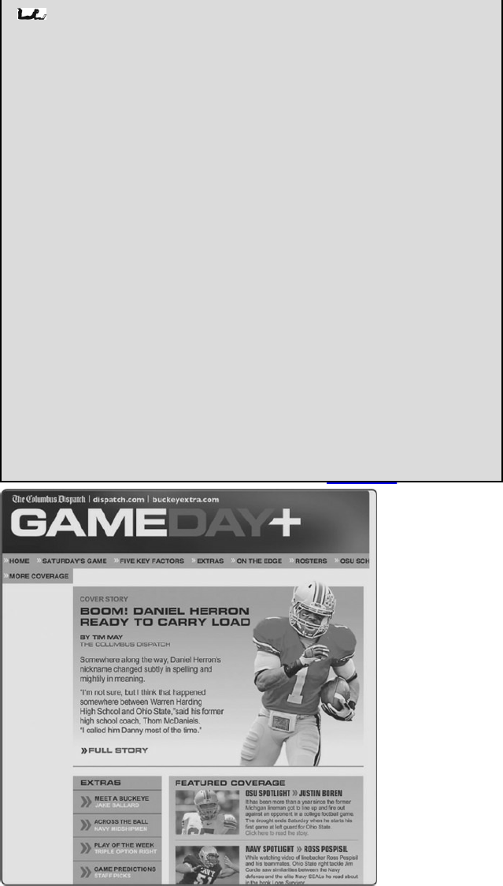
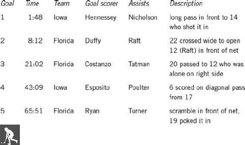
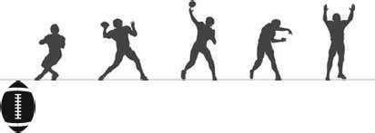
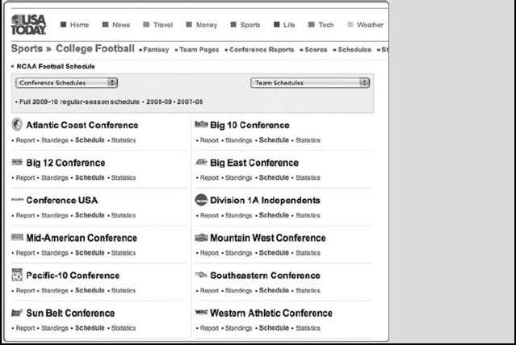
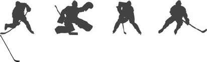
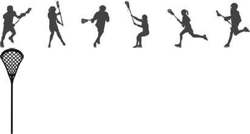
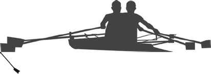
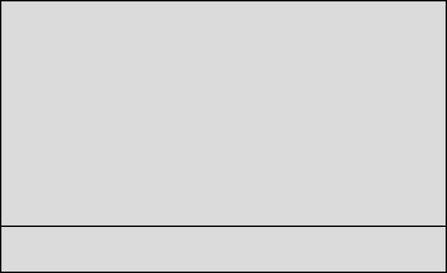
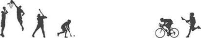

Field Guide to Covering Sports
Second Edition2
For my parents, whose love knew no bbosbounds.
3
Field Guide to Covering Sports
Second Edition
Joe Gisondi
Eastern Illinois University
4
FOR INFORMATION:CQ PressAn Imprint of SAGE Publications, Inc.2455 Teller Road Thousand Oaks, California 91320E-mail: order@sagepub.comSAGE Publications Ltd.1 Oliver’s Yard55 City RoadLondon EC1Y 1SPUnited KingdomSAGE Publications India Pvt. Ltd.B 1/I 1 Mohan Cooperative Industrial AreaMathura Road, New Delhi 110 044IndiaSAGE Publications Asia-Pacific Pte. Ltd.3 Church Street #10-04 Samsung HubSingapore 049483
Copyright © 2018 by CQ Press, an Imprint of SAGE Publications, Inc. CQ Press is a registered trademark of Congressional Quarterly Inc.All rights reserved. No part of this book may be reproduced or utilized in any form or by any means,electronic or mechanical, including photocopying, recording, or by any information storage and retrievalsystem, without permission in writing from the publisher.
Printed in the United States of America
Library of Congress Cataloging-in-Publication Data
Names: Gisondi, Joe author. Title: Field guide to covering sports / Joe Gisondi, Eastern Illinois University.Description: Second edition. | Thousand Oaks, California : CQ Press/SAGE, 2017. | Includes bibliographical references and index.Identifiers: LCCN 2017009655 | ISBN 9781506315683 (spiral : alk. paper)Subjects: LCSH: Sports journalism. | Sports journalism—Authorship.Classification: LCC PN4784.S6 G58 2017 | DDC 070.4/49796—dc23LC record available at https://lccn.loc.gov/2017009655 This book is printed on acid-free paper.Acquisitions Editor: Terri AccomazzoEditorial Assistant: Erik HeltonProduction Editor: Andrew OlsonCopy Editor: Karin Rathert
5
Typesetter: C&M Digitals (P) Ltd.Proofreader: Caryne BrownIndexer: Teddy DiggsCover Designer: Gail BuschmanMarketing Manager: Jillian Oelsen
6
Contents
PART I.
1. From Sports Fan to Sports Reporter There’s No Cheering in the Press Box Where Do You Start?Clerking Is a Great W ay to LearnReporting Is Essential in New Media Landscape2. Writing Game StoriesLeadsOrganizationContext and AnalysisKey PlaysStatisticsQuotationsLanguage3. Getting the Most Out of an Interview Journalism Is Not Stenography Prepare WatchAsk And Keep AskingSack the Clichéd Responses4. Developing and Writing FeaturesReporting Is VitalLearn Storytelling Techniques5. Developing Sports Columns6. Blogging: Finding a Unique PerspectiveBlogs Are Here to Stay Carving a Niche Tips for Blogging Sports7. Using Advanced Statistical MetricsAdvanced Metrics Glossary
PART II.
MULTIMEDIA
8. Social Media: Using Twitter as a Reporting Tool9. Writing for Mobile Devices7
Tips for Mobile10. Visual StorytellingQuick Tips for Improving Your Sports Photograph11. Broadcasting Games on Radio12. Writing for TV
PART III.
COVERING A BEAT
Auto RacingBaseballBasketballBowlingCross Country Field Hockey FootballGolf Ice Hockey LacrosseRowingRugby SoccerSoftballSwimming & Diving Tennis Track & Field TriathlonsVolleyball Wrestling
PART IV.
EXPLORING FURTHER
Primer A: Ethics: Sports Writers Can’t Act Like FansPrimer B: Covering Fantasy SportsPrimer C: Covering a College BeatPrimer D: High School SportsPrimer E: Avoiding ClichésAppendix: Assignment Desk Associated Press Sports Style QuizzesNotesIndexAbout the Author8
9
Foreword
When I started Deadspin in 2005, the general consensus was that it represented something new. There wascertainly professional benefit in me perpetuating this notion. I was young (ish), the Web was still in itsinfancy, and there is inherently, often foolishly, a media obsession with the unfamiliar. My time at Deadspin—even though I was already into my thirties and had been rattling around the media industry for a decade— was the one time in my life anything I was doing was ever described as fresh or new or somehow revolutionary. Anytime someone claimed Deadspin was doing something that hadn’t been done before, Inever felt particularly obliged to correct them.But I wasn’t doing anything that I hadn’t been taught in journalism school. I wasn’t doing anything I hadn’tdone at my other jobs in sports journalism. I wasn’t doing anything different from what I am doing in my career now, nearly a decade after I left Deadspin. And I’m not doing anything different from what Deadspin—now bigger, bolder and better than it ever was during my time—is doing today. We like to put goodournalism into new and shiny packages and make it look like something revolutionary and earth-shattering,but that’s not journalism: That’s marketing. The core principles of journalism are the same now as they haveever been. You can apply them to any situation, any medium, any new challenge, and you’ll never be let astray. You have to be truthful. You have to be honest. You have to be clear. You have to be accessible. That’s it. Sure, there are lessons to be learned within those basic parameters, the sort of lessons that this book in particular is helpful in the instruction of. But you gotta have those four. If you have those four, you can’t go wrong. We obsess, I think, with the tools and promotion of our journalism too much. How quick can we doit? How many different platforms can we do it on? How do we best package it? How do we reach people fromevery potential background? What celebrity can we get to Tweet out our piece? But this is the tail wagging thedog. We have seen, particularly since November 2016, the increasing power of the fundamentals of ournalism, and the public’s desire, its willingness, its
need
to value those fundamentals. November 2016 madeus worry that journalism was lost: Every month since then has reminded us of its power and eternal utility. That’s not because of Twitter, or Snapchat, or search engine optimization. It is because there has been apublic outcry: Help us! Tell us what is happening, because we recognize, just in time, when it was almost toolate, that if you do not, no one else will. Every major news organization, and many of the minor ones, areexperiencing record jumps in circulation and readership and even profit. That’s not because of a gimmick. That’s because we need truth. And good journalism gets us there. The idea that sports is any different from politics, that sports journalism is any different than “regular”11
ournalism, has always struck me as insane. The fundamentals are all the same. You need to know what’s really going on, and people in power want to keep that from you. Reporters—and this doesn’t mean “journalismschool graduates” or “elite media”; it means “reporters”—are there to sift what is truth and what is bunk.I understand why people want to keep politics out of sports. Sports are a diversion. They are a unifier. Politicsis divisive. But politics is a part of everything, especially sports. When you stand for the anthem? That’spolitics. When you drink a beer at Ballpark Village outside Busch Stadium, which is funded by tax breaks tothe Cardinals and has arguably decimated many local businesses? That’s politics. When there’s a JackieRobinson Day, that’s politics. It’s all politics. Pretending you can avoid it, that sports exists in some context-free bubble, is magical thinking. I have found increasingly that when people—on both sides of the politicalaisle—say they want to keep politics out of sports, what they are really saying is, “I want to keep politics Ipersonally disagree with out of sports.”But that’s what the fundamentals come back to. Give them the truth. Make it clear. Keep it honest. Andmake it easy and pleasant to read (or watch), and understand. Those were the principles that mattered whenESPN was the new thing, when Deadspin was the new thing, and then when there were other new things, asthere will always be new things. This book isn’t a textbook or a casual guide: It’s a road map. And right now,it’s more important than it has ever been.Plus: It’s fun. Don’t ever forget to make it fun.—Will Leitch
Will Leitch is a contributing editor at
New York Magazine,
a columnist at
Sports on Earth
and the founder of Deadspin. He is also the author of four books,
Life as a Loser
(2003),
Catch
(2005),
God Save the Fan
(2008),and
Are We Winning?
(May 2010).
12
Preface
I’ll never forget the anxiety I felt writing my first few stories for a daily newspaper—and the kindness shownto me by the sports editors on those late Friday nights. At the time, I was a cocky 17-year-old who hadalready covered games and written features for two weekly newspapers, and I was sports editor of my highschool newspaper—making me a grizzled veteran. Or so I thought. That first Friday night, I struggled for 15 minutes to craft a lead before an editor told me, “Just writeanything. You’ve got about 20 minutes before deadline.” I started to sweat—the warm kind you feel when you’ve forgotten to study for a test or are about to ask someone on a date. The kind that portends failure. Ikept plugging away on that electric typewriter, fumbling over notes and writing play-by-play filled with way too many adjectives and far too few details, with quotes that were generic, and a lead that was barely palatable.oe Arace, the longtime prep sports editor at
The News-Press
in Fort Myers, Florida, told me to sit next to him while he edited the story. He deleted adjectives, asked me questions so he could add vivid descriptions,inserted transitions, and moved up key plays and stats. Each keystroke was an execution. Each revision a slapin the face. Each edit proof that I had chosen the wrong career.Like other kids, I had grown up idolizing sports figures, watching games, reading the sports pages to relivethese moments, and dreaming of making it to the big leagues. I hadn’t yet accepted that if I got there, I’d besitting in the press box. And during my early newsroom nights, even that scenario seemed unlikely.After Joe sent the story to the copy chief, he turned to me, smiled, and said, “Good job. See you next week.” What? They wanted me to write again? I was shocked. Clearly, I had done something right. But what? The next morning, my spine tingled when I read the byline: Joe Gisondi. I was a little ashamed that I hadn’t written every word myself. I hadn’t realized yet that journalism is a team game where everyone—assignmenteditors, copy editors, designers, proofreaders—contributes to a story’s success. That doesn’t mean sportsreporters should blithely expect others to correct their mistakes. But it’s nice to know you have that support.I determined not to repeat the same errors. So I made new ones, which were corrected and revised by editors while I sat and watched, listening to their suggestions and explanations as they worked on my copy. And each week I heard, “Good job. See you next week.”As I write this book, I hear those editors’ voices, their suggestions, and their encouragement. I hear the voicesof the 120-plus sports journalists and coaches who offer advice in these pages on how to cover more than 20beats, from auto racing to field hockey to wrestling. These voices come not just from
The New York Times,Philadelphia Inquirer
, ESPN, MLB.com, Yahoo! and
Sports Illustrated
but also from respected, nontraditionalmedia outlets, such as Bleacher Report, FanGraphs, baseballHQ.com, @RotoGraphs, @Sportsmanias, andfrom smaller news organizations that employ the majority of sports journalists. In places like Cedar Rapids,Iowa, and Kennebec, Maine, sports coverage means local coverage, and local coverage means kids and schools.13

For students and beginning sports journalists, this field guide serves as their portable editor: posing questions,suggesting new approaches, and summarizing the basics needed to cover any game. It offers hands-on,practical advice, the kind given in sports departments across the country. Like the one I sat in so many yearsago.14
Training Needed
Although Americans play dozens of sports, just a few—football, baseball, basketball—get most of the mediacoverage. Millions of people follow those sports, but that doesn’t mean either fans or sportswriters understandthem expertly. Teachers and editors know that their students and new hires know far less than they claim.Even so, few sports journalists receive formal training. So many young reporters cover games more like fansthan professionals. They fumble through statistics, struggle to take proper notes, mishandle interviews, andsettle for both clichéd language and the same old leads. They’re not sure how to identify or write about themost significant plays, trends, or moments in a game. This book provides even the most basic writers with the tools they need to succeed on their first assignments.It trains writers to answer, in advance, the questions their editors and readers will ask: What happened? How? Why? The running back ran for 200 yards. Any fan can see that, but a journalist needs to explain why. Didthe offensive tackles drive back a smaller defensive line? Did the offensive coordinator scheme so well that thedefense was confused? Did this running back follow his blockers well or display amazing athleticism?A track runner broke the county record in the mile. How? Did she take the lead early, have to kick it in forthe final lap, or get pulled along by a competitive field? And how did she train to prepare for this meet?ust like athletes, journalists need training. The introductory chapters of this book start that training by providing the big picture, with tips on interviewing sources, writing game stories, acting professionally.Chapters on blogging and covering high school sports prepare writers for two areas that are booming as newsorganizations focus even more on local action and interactive approaches to news. The core of the book, the middle section, takes beginning journalists step-by-step through every one of the 20sports they’re likely to be sent out to cover. Within each sport, four sections provide tips on how to prepare forthe game, what to look for while you’re watching, whom to interview, what to ask and finally, how to write up what you’ve seen. PREPARE—WATCH—ASK—WRITE: You’ll see those four sections in each sportschapter. In addition, experienced sports journalists chime in with their own advice, sharing what they’velearned about how to observe events, take notes and keep score, and interview players and coaches.Of course, no book of field-guide size could possibly fit in every rule and every term for every sport a journalistmight need to cover. Instead, these pages contain the basics a young reporter is most likely to need. Reporters will learn the following:
▸
Keep score accurately and effectively. Illustrated scorecards show how to record scores and take noteson auto racing, baseball/softball, basketball, bowling, and football.
▸
Understand the rules when covering an unfamiliar sport. Can golfers flick bugs off balls before hittingthem? Are stock-car drivers legally allowed to bump other cars? How much tailwind nullifies a record-breaking track performance? What’s the purpose of a drag flick in field hockey?
▸
Understand the necessary terminology. What’s a “near fall” in wrestling, and what does a coxswain doin rowing? What does 6–4–3 mean in baseball? How many pins are recorded in a frame after a spare?15
▸
Ask more informed questions after games. Did the safeties stay back, trying to prevent the deep pass?Did the pitcher have more spin on the ball?16
Uses for the Classroom
This field guide is designed as a companion “un-text” for sports-writing classes. Teachers can use theintroductory chapters to review the basics: research, observation, interviewing, and writing game stories. Thisnew edition adds a new Section II on multimedia, with new chapters focused on social media, mobile media, visual storytelling, writing for television, and writing for radio. There is also an entirely new chapter on usingadvanced statistical metrics in sports journalism. In addition, you can go over chapters on specific sportsbefore covering a local or college team as a class. Do make sure to let the college sports information director orhigh school athletic director know before doing this, so they can assist. These hands-on activities strengthenstudents’ abilities to take notes, keep score, and focus on the most significant angles.Inviting coaches to class to speak about their specific sports gives students not just good information but achance to practice interviewing in a relaxed environment. Students can review the appropriate chapters beforelistening to a speaker, then ask questions and write up the session on deadline as if it were a press conference.Since this book is devised as a practical guide, ask students to apply what they’ve learned, assigning them tocover games or beats. You can even set up a blog to cover college or high school teams in your region.Reading great sports stories is the best way to provide a sense of options and inspire students to write better.Readers such as the
Best American Sports Writing
series or
The New York Times Sports Reader
acquaint students with the best of the best. Local and national newspapers, on paper and online, show how professionals inmarkets large and small go about their jobs.Students, teachers and advisers can also regularly check in to my sports blog at either
sportsfieldguide.org
— which has been favorably reviewed by Poynter’s NewsU, Cyberjournalist, American Press Institute andCollege Media Advisers—or follow me at @joegisondi on twitter for additional tips and insights into sportsournalism issues.17

Acknowledgments
Years ago, I learned that sports reporting, like anything in journalism, is a team effort. More than 100professional journalists and 20-plus college coaches generously shared their considerable experiences for thisbook, receiving nothing more than a thank-you and a chance to help others become solid journalists.I’ve learned that a writer needs an equally dedicated team to create a large project such as this. Thanks to EarlPingel, who encouraged me to create the initial outline; Aron Keesbury, who helped develop the initialproject; Charisse Kiino, who continued to support the project; Christina Mueller for keeping everythingorganized; Jane Harrigan, who brought it all together by keeping me on task and vastly improving the copy;Mary Marik, who further refined the copy; and to Sarah Fell, who saw the book through production andadded last-minute suggestions. Thanks also to staff that made this second edition possible: Matthew Byrnie, Terri Accomazzo, Erik Helton, Andrew Olson, Karin Rathert, and Gail Buschman, who designed the lovely new cover. I’d also like to thank the professors and journalists who provided helpful feedback during thereview process: Vince Benigini, College of Charleston; Lori Ann Dickerson, Michigan State University;Martin Dobrow, Springfield College; Bill Fleischman, University of Delaware; Marie Hardin, Penn StateUniversity; Melanie Hauser, University of Texas-Austin; Marie Kaufman, University of Miami; RobertKeohan, Merrimack College; Jim Killam, Northern Illinois University; Roland Lazenby, Virginia Tech; MeadLoop, Ithaca College; Donald Markus, American University; Mike Poorman, Penn State University; Jeff Shearer, Troy University; Ron Thomas, Morehouse College. Thanks also to my mom and dad, who encouraged me to follow my heart, even if it meant living andbreathing all things sports.Most of all, thanks to my wife, Betsy, whose encouragement and patience enabled me to keep plugging away.Apollo never had a better muse. And thanks, girls, for putting up with your papa’s crankiness duringdeadlines. Your grit, skills, and desire on the playing fields are more than a match for anyone trying to get in your way.Ultimately, I’ll never forget editors like Joe Arace, Dave Renbarger, Gary Kicinski, Dick Schneider, and Nick Moschella, who took the time to help a young kid, encouraging me, befriending me, and helping me becomea better sports journalist.18
Contributors
19
ournalists
Ben Alamar, ESPNScott Andera,
The Palm Beach Post
Erik Arneson, FOX SportsBudd Bailey,
The Buffalo News
oshua Barnett,
USA Today
Mike Beacom, Fantasy Sports Writers AssociationGreg A. Bedard,
Sports Illustrated
Andy Behrens, Yahoo! SportsDoug Bernstein, Bleacher ReportDoug Binder,
The Oregonian
(Portland, Oregon)Bryan Black,
The Virginian-Pilot
(Norfolk, Virginia)Ryan Bloomfield, Baseball HQ.comChris Boghossian,
Chicago Tribune
Rob Bolton, PGATour.comEd Bouchette,
Pittsburgh Post-Gazette
Christine Brennan,
USA Today
Robert Burghardt, TGFantasyBaseball.comAlex Chamberlain, @RotoGraphsRich Chere,
The Star-Ledger
(Newark, New Jersey)Mike Clay, ESPNPamela Colloff,
Texas Monthly
Matt Daniels,
News-Gazette
(Champaign, Illinois)Matt DiFilippo,
Morning Sentinel and Kennebec Journal
(Maine)Scott Dochterman, Landof10.com20
Doug Dull, media relations, University of Maryland Tyler Dunne,
Buffalo News
Bob Dutton,
The Kansas City Star
Bill Eichenberger, Bleacher ReportCameron Eickmeyer, USAHockey.comDick Evans,
The Daytona Beach News-Journal
eff Evans,
The Bakersfield Californian
Creig Ewing,
The Courier-Journal
(Louisville, Kentucky)Bruce Feldman, FOX SportsDoug Ferguson, Associated PressPeter Fimrite,
San Francisco Chronicle
Scott French,
Major League Soccer Magazine
effrey Gamza, USAFieldHockey.comSteve Gardner,
USA Today
Steve Goff,
The Washington Post
Chuck Gormley,
Courier-Post
(Cherry Hill, New Jersey)Merv Hendricks, director of student publications, Indiana State University Kate Harmon, @RallyPhilly Ron Higgins,
Times-Picayune
(New Orleans)Bill Hill, MLB.comDave Hyde,
Sun Sentinel
(Fort Lauderdale, Florida)Phil Jasner,
Philadelphia Daily News
Bruce Jenkins,
San Francisco Chronicle
Lee Jenkins,
Sports Illustrated
Art Kabelowsky,
Wisconsin State Journal
21
Tyler Kepner,
The New York Times
George Kirschbaum, Coxguide.comDejan Kovacevic,
Pittsburgh Post-Gazette
Warren Koziresky, SUNY-BrockportDavid Lassen,
Ventura County Star
(California) Will Leitch, Deadspin.com and
Sports on Earth
im Leitner,
Telegraph Herald
(Dubuque, Iowa)im Litke, Associated PressFrank Litsky,
The New York Times
Brian Logue,
Lacrosse Magazine
Frank LoMonte, Student Press Law CenterMary Lynly, California Bowling Writersackie MacMullan, ESPNason Marsteller,
Swimming World Magazine
Mike Miazga,
Volleyball Magazine
Vicki Michaelis,
USA Today
Gary Mihoces,
USA Today
Bryce Miller,
San Diego Union Tribune
ason Mucher, USATriathlon.comManny Navarro,
Miami Herald
Rob Neyer, The Neyer/James Guide to Pitchersim O’Connell, Associated Press.R. Ogden,
The Gazette
(Cedar Rapids, Iowa)ohn Patton,
The Gainesville Sun
(Florida)Maurice Patton, MoPattonSports.com22
Kim Pendery,
The Tampa
TribuneBrian Poulter, Eastern Illinois University on Rascon, FantasyFootballTrader.comKarl Ravech, ESPNim Rossow,
The News-Gazette
(Champaign, Illinois)im Ruppert,
The State-Journal Register
(Springfield, Illinois)Michael Russo,
Star Tribune
(Minneapolis, Minnesota)Bob Ryan,
The Boston Globe
Nate Ryan,
USA Today
Ron Shandler, BaseballHQ.comDave Sheinin,
Washington Post
Mike Sielski,
Philadelphia Inquirer
Drew Silva, RotoWorld.comCraig Smith,
The Seattle Times
Tim Stephens, @SportsmaniasMatt Stevens,
Montgomery
(Ala.)
Advertiser
ason Sobel, ESPN.comEric Sondheimer,
Los Angeles Times
Glenn Stout,
The Best American Sports Writing
series Wright Thompson, ESPNared Turner, SceneDaily.com (NASCAR)L. Jon Wertheim,
Sports Illustrated
Michael Wallace, ESPNRachel Whittaker, (New Orleans)
Times-Picayune
/NOLA.comAndy Wilson,
The Guardian
(London)23
Dan Woike,
Los Angeles Times
Lynn Zinser,
The New York Times
24
Coaches
ohn Barnes, Excel Aquatics (Gallatin, Tennessee)Bebe Bryans, University of Wisconsin (rowing)Donald Fritsch, University of Wisconsin-La Crosse (cross country)ohn Fuchs, Western Washington University (rowing)Frank Graziano, Eastern Illinois University (rugby)Kelley Green, Loch Haven University (softball)Mick Haley, University of Southern California (volleyball)Kevin Hambly, University of Illinois (volleyball)Rich Luenemann, Washington University in St. Louis (volleyball)Geoff Masanet, Eastern Illinois University (cross country)Missy Meharg, University of Maryland (field hockey)Lynn Oberbillig, Smith College (chair of NCAA Softball Rules Committee)Leslie Pfeil, Philadelphia Scholastic Rowing AssociationBecky Robinson, Ithaca College (rowing)Brady Sallee, Eastern Illinois University (basketball)im Schmitz, Eastern Illinois University (baseball)Kim Schuette, Eastern Illinois University (softball)Paul Stranz, Charleston High School (soccer)Greg Strobel, Lehigh University (wrestling)Richard Sutton, Kent State University (field hockey)Bob Warming, Creighton University (soccer)Mark Wetmore, University of Colorado (cross country)Claus Wolter, Franklin & Marshall College (rowing)25
26
Part I Getting Started
27
Chapter 1 From Sports Fan to Sports Reporter
You’re a lifelong football fan who can recite the names of every single Super Bowl champion. You also know the intricacies of baseball’s infield fly rule and the difference between major and minor penalties in hockey. Ty Cobb’s lifetime batting average? Please. You can even name the Maple Leafs player in 1951 who scored inovertime to hand Toronto the Stanley Cup.And now you’ve landed your dream job, covering sports. First assignment: field hockey. Suddenly, you don’thave a clue. Can’t tell the difference between a penalty shot and a penalty corner. You’ll have to do somereporting, relying on your skills to learn more about this sport, these teams and the key players. Nobody, nomatter how big a sports fan, is a born journalist. The transformation from fan requires training and education. You don’t need a license—or even a degree in the field—to be a journalist. But you do need to act like one.And journalism is a profession that requires reporters to seek truth and report it; to provide a fair,comprehensive account of events; and to verify information, act independently and be accountable formistakes. In addition, sports journalists research, interview, and observe thoroughly.28
There’s No Cheering in the Press Box
So how do fans and sports journalists differ? In more ways than most people realize.For example, fans can make unsubstantiated comments without consequences, the kind that can beunjustifiably critical of those who coach and play. A sports fan can say the goalie sucks. But a sports reporterneeds to be more detailed and more diplomatic. Had a defender moved out of position? Maybe the goalie’sbeen playing hurt, diving at pucks despite a broken finger or severely sprained ankle. Or maybe the goalie hasust had a few bad performances. That happens to all of us—even those who write for a living. Sources won’ttrust someone who’s unwilling to verify the facts. And you’ll lose sources rather quickly by making mean, lazy comments.Fans can openly cheer for their favorite teams and players, high-fiving friends and joyously screaming after agame-winning score. But there’s no cheering in the press box. Or in game stories. Or while interviewingplayers and coaches after a game. Cheering clouds perspective, preventing a sports reporter from discerningthe plays, trends, or strategies that enabled a team to win. In addition, you could lose sources, who mightrefrain from speaking with someone spinning everything for the home team.In addition, sports reporters need to abide by professional codes of conduct, such as those outlined by theSociety of Professional Journalists and the Associated Press Sports Editors (published later in this book). They can’t accept free tickets or eat the free food that, as fans, they’d happily scarf down.Fans can steal others’ work, taking credit for a phrase or key argument when talking with friends or whiletweeting. Sports journalists, though, must find new information and attribute older information, oftenoffering this other information through embedded links.Fans can skip a game for inclement weather, if the team is hopeless or when they have something else to do.Beat reporters faithfully cover games at night, on weekends, during holidays, and even when the job meansmissing important family events.Fans can complain that nothing interesting happened in a midseason baseball or basketball game. Sports writers need to find something unique about a minor league baseball game in late July, an NBA game in mid-February, or a minor league hockey game in April, by taking detailed notes, asking precise questions, andkeeping score. They must know the game well enough to find these new angles and write a comprehensiveaccount of the game.Fans prepare for games by listening to talk radio, watching pregame shows, and reading preview stories fortheir information. Sports journalists supply this information through exhaustive research and reporting.Before behaving like a professional, you’ll need to look like one, by dressing properly—wearing slacks andcollared shirts instead of T-shirts and jeans. For outdoor summer events, you can wear a nice pair of shorts ora skirt instead. Obviously, don’t wear any clothing that represents a school or team, something that destroyscredibility.29
Being a fan doesn’t qualify someone to be a sports journalist any more than enjoying
Judge Judy
qualifiessomeone to be a lawyer. Dress and act professionally and learn your trade, if you expect sports informationdirectors, coaches and players to take you seriously.
Sports Insider: On Getting HookedI actually wrote my first sports story when I was in high school for the
Daily Transcript
in Dedham, Mass. I went to WestwoodHigh School, and our girls’ teams were exceptional, but the local paper seemed to only cover the boys’ games. I was very frustrated by this and complained about it often. My dad, Fred MacMullan, finally said to me, “Stop complaining and do something about it. Callthe sports editor.’’ He stood over me until I did. The sports editor was Frank Wall, and he very nicely explained he’d love to coverthe girls, but he didn’t have enough manpower and would I like to write for him? So, I started covering high school sports, oftengames that I was actually playing in myself. It was an amazing thrill to see my byline for the first time. I was only 16 years old, and it was every bit as exciting as I imagined it would be. I was hooked from then on.
Jackie MacMullan,
ESPN Basketball Analyst
30
Where Do You Start?
Glenn Stout was minding his own business, just a fan reading about sports during his gig at the Boston PublicLibrary, when he fell into journalism.Stout, now editor of The Best American Sports Writing series, had stumbled across an old article about a RedSox manager who committed suicide in 1908. The article cited the pressures of managing as the reason for thesuicide.“If that were the case,” Stout says, “I thought there should be a whole cemetery of dead Red Sox managers.” To satisfy his own curiosity, Stout, a 27-year-old librarian, investigated what really happened by reading oldnewspaper clips on microfilm. He then reviewed an old book on freelance writing to develop a query letter, which he sent to
The Boston Globe
and
Boston Magazine. The Globe
rejected his story idea, but the magazine’seditor invited him in.Stout did not have a single clip, had never tried to write a magazine piece, and had majored in creative writing, not journalism. Yet the editor took a chance, buying the story on the Red Sox manager’s suicide for$300 on spec.“I still had the idea in my head that I wanted to be a writer, but really had no plan on how to become one, butknew I could write,” Stout says. “I’d been reading sports stuff for fun forever. So I worked my ass off for a week at a time when you had to write longhand and then go to the typewriter, and turned in the story. Hebought it as is, and asked me what I wanted to write about next. I blurted something out, and he gave me acontract for another story for $500. I was their sports columnist for the next three years and have never been without a writing assignment since. I’ve sold virtually everything I’ve tried to.”L. Jon Wertheim, now a veteran writer for
Sports Illustrated,
wrote a profile on the New Jersey Nets’ ChrisDudley for
Hoop
magazine, an assignment that was a thrill for him when he was a college senior at Yale, partly because he could escape a few nights of scraping uneaten food off plates.“The pay was something like $250, which doesn’t sound like much now,” Wertheim says, “but it was about 40hours worth of wages working at the dining hall, so I figured I had pulled a fast one.” Today Wertheim is anexecutive editor and senior writer for
Sports Illustrated
and si.com.Countless reporters enter the profession at high school basketball courts and football fields in small towns, atminor league ball fields, and in hockey rinks. There is no single path to success, although hard work, curiosity,and perseverance are excellent guides.At the same time, there is no such thing as the typical sports story. Cookie-cutter approaches lead to stale,uninteresting stories. Instead, take chances and cultivate a voice, as you take readers through sports events.“You’re looking at a game from a point of view,” says Bob Ryan, author and award-winning writer for
The
31
Boston Globe.
“That’s the key phrase. Why would you send someone to cover a game if you’re going to forcethem into a very rigid box of formality? You could just take the wire story.”Sports writers need to be confident, taking chances like a coach or player. “I think more writing is destroyedby an abundance of caution than by risk,” Stout says.
Sports Insider: On CriticismI’ve been a full-time writer since 1993 and keep doing this because it beats working. But it is important for young writers tounderstand that you never arrive—each time you kick in a door there’s another one, and no one really cares what you did in your previous assignment. But it is not for everyone, because each minute you spend writing is a minute you spend aloneinside your own head, and some people can’t handle that. And your work is out there forever, and sometimes the object of criticism, so it helps to have a thick skin as well.
Glenn Stout,
editor, The Best American Sports Writing series
32
Clerking Is a Great Way to Learn
Many newsrooms have high school or college students working as clerks on the sports desk. They take scoresby phone from coaches. They ask questions about key plays and players. And they write. By the end of thenight, a clerk may knock out more than 10 short game stories.And by the end of a month, clerks will have honed their skills and increased their speed, making it mucheasier to develop a single story on deadline.Clerking enables younger reporters to write tight, concise stories. “Cover the game or write a feature, but it’stough to do both at the same time,” says Jim Ruppert, longtime sports editor for
The State Journal-Register
inSpringfield, Illinois. Typical game stories focus on action at the end of the game first, because these later plays are usually mostsignificant or most memorable. Sometimes, writers leap around, focusing on key plays as they relate to trends:a pitcher inducing several double plays or a football team making several defensive stops. Usually, plays aredescribed when they define a trend, spark a rally, address an unusual circumstance, illustrate a storyline, orchange the momentum in a game. Writers, though, never record the game from beginning to end.“The game story should tell you a little about the status of each team and the thoughts and emotions of thecoaches and key players who made tonight’s events happen,” says Art Kabelowsky, assistant sports editor forthe
Wisconsin State Journal.
“Anecdotes and good quotes are better than play-by-play.” Tell the story through the eyes of those involved. Interview as many athletes as possible. Let the reader see theplays evolve through the athletes’ eyes. And complement these descriptions with your own astute observations.Of course, that means taking detailed and copious notes.Plus, take chances. Be creative. Borrow ideas from other writers.Ultimately, your success relies on preparation—research and detailed observation—even if you shift gears to anew main theme on deadline. “Have an idea what might be the story,” says Rich Chere, hockey beat writer for
The Star-Ledger
in Newark, New Jersey. “But very often that does not turn out to be the post-game story. Beflexible. You cannot stick with your assumed story if something more interesting or important happens.”
Sports Insider: On DramaI’m something of an accidental tourist in sports writing. I got bachelor’s and master’s degrees in print journalism but alwaysenvisioned myself as a news reporter or perhaps, a business reporter. The first job I was offered was in features copy editing. I took it,because it was at a good newspaper where I had interned as a reporter. Within a year, they offered me a reporting position—coveringhigh school sports. For the first couple years, I didn’t see myself remaining a sports reporter for long. But over time I realized Ienjoyed the inherent drama involved (some-one wins, someone loses), the life stories, and the freedom sports reporters have to really develop their own writing style. These are the things that keep me going still today.
Vicki Michaelis
,
USA Today
33
34
Reporting Is Essential in New Media Landscape
The skills you develop clerking and writing will serve you well no matter where technology goes. Reportersnow tweet updates at live events, post audio, video, and stories read increasingly on smart phones, and rely onadditional social networks, such as Facebook, Instagram, Linkedin, and Snapchat to both report news andinteract with sources. These new approaches require that sports reporters blend solid reporting skills,ournalism principles, and savvy technical skills. Instead of merely inserting interview responses into printstories, sports reporters now frequently post audio or video clips into digital stories, editing them for lengthand quality—a common practice for all journalists. Knowing what to ask is valued regardless of whetherreporters query sources through traditional methods (face-to-face, phone call) or through newer approaches,such as text message, Facebook, Linkedin, or e-mail, or Twitter. General questions will usually receive vagueresponses, regardless of the medium, so be very clear when you use text, and so forth, scripting questions thatoffer context as well as clear, concise questions. Traditional methods will almost always yield a deeper—andsometimes serendipitous—dive into topics. But rolling deadlines and access issues often force sports reportersto use these other approaches as well. Either way, sports reporters need to understand as much as they canabout teams, players, issues, budgets, and games in order to ask intelligent, evocative questions.As with anything in sports journalism, preparation is essential, whether the end result is a blog post, radiointerview, TV game package, or print feature. Even as fans increasingly rely more heavily on new media andtechnology, journalistic approaches remain as important as ever. The best sports entities offer new information, terrific narratives, unique perspectives, statistical analysis, and beautiful images—not unlike thebest print sports sections.
Sports Insider: Breaking a Locker-Room Barrier for Women
(WITH THE HELP OF A LONG NOTEBOOK)
All week long at the
Miami Herald
, there had been a tremendous buildup to the big event. There had been meetings, phone calls,more meetings. The occasion?I was to go into my first men’s locker room that Saturday night. The Miami Dolphins were playing the Minnesota Vikings in a 1980 preseason football game at the Orange Bowl. I was a 22-year-old summer intern at the
Herald
, between my undergraduate and master’s years at Northwestern, and sports editor Paul Angerassigned me to write a sidebar on the visiting team. That required going into the locker room to interview the players after the game. The NFL still had no policy about women reporters being allowed to go into men’s locker rooms; some were open, some were not,based on the whim of the team. The Vikings’ locker room was going to be open that night. The significance of the night was twofold: It was not only going to be the first time I had ever been in a men’s locker room, it also was to be the first time a woman had ever been in the Vikings’ locker room.Four years earlier, my moving into a coed dorm at Northwestern University had been a bit of an issue in our household. Now I wastelling my parents in Toledo about this new development over the phone.I asked my Dad for advice.“Just keep eye contact at all times, honey.”
35
My father always made me smile. The game was Saturday night, August 23, 1980. I dressed conservatively in a simple skirt and blouse. I purposely wore the skirt. It was the closest I could come to a neon sign: Warning! Here comes a woman! The Vikings beat the Dolphins, 17–10. As soon as the game ended, a group of reporters was allowed into a room adjacent to theVikings’ locker room to interview their venerable coach, Bud Grant. As he spoke, male reporters peeled away, one by one, to walk into the locker room. Soon, I was alone with Grant. I asked him a few questions about the game. From watching him on TV for years, I expected him to be gruff. I couldn’t have been more wrong. When we were finished, I turned toward the locker room.“Are you going in there?” Grant asked. He sounded sincere, and not at all menacing.“Yes.”“You really want to go in there?”“Well, I don’t want to go in, but I have to go in there to do my job.”“All right then,” Grant said with a smile and a shrug. “Do whatever you have to do.”And with that, I turned around and walked into a room full of naked men.It was worse than I thought. Not the naked men. Actually, there were very few naked bodies. The players were in various stages of undress, many still wearing their football pants.No, I could never have anticipated the problem I was about to confront. It was a preseason game, so there were many extra playerson the roster, but no names above the lockers. And even though I was carrying a flip card—the sheet given out in the press boxcontaining all the players’ names and numbers—most of the players had taken off their jerseys, so I couldn’t tell who anyone was. To further complicate matters, I also couldn’t look around. If I did that, the players could accuse me of being in the locker room forthe wrong reason. And that was the one thing I had to avoid.As it was, as soon as I walked into the steamy, overcrowded room, I heard whoops and hollers from distant corners, from players Icould not see:“We don’t go in the women’s bathroom!”“Here for some cheap thrills?”I took a few tentative steps into the room, then stopped, not knowing what to do. I was stuck.It seemed like a lifetime standing there, but really was only twenty to thirty seconds when, out of the noise and confusion, a player inuniform walked up to me. It was Tom Hannon, the Vikings’ fourth-year safety out of Michigan State.“Who do you need?”I smiled.“Tommy Kramer,” I said.Hannon pointed to the quarterback, putting on his necktie.I mentioned a few other players, and he pointed them out to me. Then I interviewed Hannon, because he had intercepted two Miami passes. I thanked him for his help and beelined to Kramer andthe others. Every one of them was dressed except for one lineman, who obviously desperately wanted to be interviewed buck naked.He didn’t even bother to reach for a towel. As I moved toward him, he walked the rest of the way to me with a smirk on his face,enjoying the discomfort he brought with every step he took. I found this awkward, but not awkward enough not to do my job. I wasdetermined to get the quotes, so I interviewed the naked guy. As luck would have it, the notebook I had brought was not thestenographer size, but an eight-and-a-half-by-eleven. With my height, looking the lineman right in the eye, when I looked down asI was writing, I saw only the notebook.
36
Forevermore when going into locker rooms, I carried an eight-and-a-half-by-eleven notebook, perfectly positioned.All this interviewing, which seemed like an eternity to me, took about ten minutes. When I burst out of the locker room, I had justthirty minutes until my deadline, so I ran across the field in the now empty Orange Bowl to catch the elevator back up to the pressbox. I pulled out my bulky Texas Instruments computer, with its scroll of paper coming out the top. I wrote as quickly as I ever had,sent my story, then sat back and looked at a colleague sitting next to me.“Oh boy,” I said, exhaling and forcing a big smile.Finally, I could think about what I had just been through. “I just focused on the interviews and tried to ignore all the things that were being said,” I told him.I didn’t even think to retell the story of the taunts and jeers, or the naked guy. The end result was the important thing for me. When I got home that night, I pulled out my diary.“It was tough—not embarrassing though,” I wrote. “Just did my job and got out of the locker room and wrote the story.”
Christine Brennan
is a sports columnist for USA Today, commentator for ABC News, CNN, and NPR, a best-selling author and anationally known speaker.
37
Chapter 2 Writing Game Stories
Sports fans today no longer await game recaps in print to learn how their favorite teams and players fared.Odds are, fans already know final outcomes, stats, and highlights, even before the final whistle blows, thanksto social media and mobile phones. So there’s no need to fill stories with what happened, because fans already know most of the play-by-play and have probably viewed video highlights, which are readily available as they happen.Instead, game stories today blend analysis, commentary, and narrative into feature-centric pieces that focusmore on
how
and
why
a team or player won or lost. Ultimately, though, you are there to tell a story, whetherthe focus is on a player returning from a back injury or an opposing player who entered the game on a hotstreak or a major slump. Develop potential angles before you arrive at the arena or stadium; otherwise you willbe forced to scramble the entire game—and odds are, you’ll fail to deliver an interesting story.“Don’t focus as much on what just happened,” says Michael Wallace, an NBA beat writer for ESPN, “andinstead shape a story to tell readers why this game’s outcome is important and what it might mean movingforward. Usually, in every game, something amazing or unexpected happens. There tends to be a breakoutperformance on some level from someone who wasn’t expected to deliver on such a level. I tend to start there when developing what my game story or column will be about.”By the time the Miami Heat had defeated the Toronto Raptors to even the 2016 Eastern Conferencesemifinal at 3–all, most fans already knew the score (103–91), that Goran Dragic had scored a lot of points,and where Game 7 would be played. But they did not know Dragic’s thoughts on eight players heading to freeagency, something the
Miami Herald’s
Manny Navarro had learned during a seven-minute interview with theMiami point guard earlier that day. Plus, fans did not know
how
or
why
the Heat had changed its startinglineup right before tip-off to feature shorter, quicker players.As a result, Navarro’s lead reads more like a sidebar or feature. The final score, along with the team’s key scorers, is not mentioned until the fourth paragraph:Goran Dragic didn’t want to start looking ahead to this summer and the looming free agency of most of his Heat teammates.“I feel like if we start talking too early then you’re already done, not focused about these games,”Dragic said several hours before Game 6. “You know, it’s not good timing to talk about that. We’restill alive.38
“We’ve still got—hopefully, two games—at least two games left. That’s all that matters.” The Heat, facing elimination Friday for the third time in these playoffs, will have at least one moregame. Led by Dragic’s team-high 30 points, seven rebounds and four assists and 22 points, sixrebounds and five assists from Dwyane Wade, the Heat advanced to another Game 7 with a 103–91 victory over the Toronto Raptors at American Airlines Arena.SOURCE:
Miami Herald
(http://www.miamiherald.com/sports/nba/miami-heat/article77613752.html)Later in the story, Navarro outlines how the Heat’s smaller lineup succeeded, focusing on a trend, significantplays, noteworthy statistics, and comments from players on both teams. We learn that Miami used thissmaller lineup for nearly two-thirds of the game, implemented a man-to-man defense, and used one biggerplayer for a stretch of play, which is visually described: The Heat waited until about eight minutes before the 8 p.m. scheduled tipoff to announce it wasreplacing 6–10, 245-pound center Amar’e Stoudemire in the starting lineup with the 6–7, 225-pound Winslow. The Raptors, though, probably had an inkling Miami’s small lineup was comingbecause of the success the Heat had with it in Game 4. With Winslow, Dragic, Luol Deng, Wade and Joe Johnson for the final 4:48 of regulation and thenfive more minutes of overtime in Game 4, the Heat turned a 79–72 deficit into a 94–87 victory. Then, in Game 5, a similar small lineup with Richardson and Tyler Johnson rotating in for theinjured Deng cut a 15-point fourth-quarter deficit to 1 with under two minutes to play before theRaptors pulled away behind DeRozan and Lowry.On Friday, the Heat’s lineup worked again. Miami went small for all but 18 minutes and 19 secondsin the game. Despite giving up size to the Raptors, Miami only lost the rebounding battle by two(43–41) and just scored just two fewer points in the paint than the Raptors (46–44).“It was just one-on-one defense,” DeRozan said. “We’ve just got to buckle down, not try to rely onhelp so much. Every individual on our side just has to man-up and play one-on-one defense so wedon’t have to get in rotation where it involves guys getting to the basket, getting easy shots.”McRoberts was the only big man who played for the Heat, and he had several big moments. Heflew in for a tip-in dunk over Bismack Biyombo in the second quarter and then had a pair of tip-insoff misses in the fourth. McRoberts finished with 10 points and five rebounds. Winslow, meanwhile, finished with 12 points and three rebounds in 26 minutes. But he had helpthroughout as Miami gang-rebounded and made sure to box out.Said Wade: “Sometimes unconventional works.”39
SOURCE:
Miami Herald
(http://www.miamiherald.com/sports/nba/miami-heat/article77613752.html) This story included a 53-photo slideshow, four video clips from the game itself, a video clip from a post-gameinterview in the locker room, another one from the press conference, and a two-minute, 49-second post-game wrap-up that featured Navarro and colleague Ethan J. Skolnick. Plus, the story included a link to columnistGreg Cote’s perspective on the game and to the box score.“In the end, the modern game story really isn’t a work of art anymore,” Navarro says,but an ever-evolving compilation of pregame/post game insights from players and coaches, statisticaltrends and a couple of highlights of the key moments of what happened in that game. Since somany people watch a game on TV or see the highlights on SportsCenter, it’s a tough challenge as a writer to provide a unique angle or perspective on what happened in that game and to look ahead to what might happen going forward. The toughest part? Remembering to do that as fast you canbecause in 10 minutes something else will be trending and you will be writing the next story.As Wallace and Navarro know, good writing comes from solid reporting. Anybody can knock out a witty one-liner or craft a clever lead once in a while, but only dedicated reporters can deliver captivating stories,compelling insights, and breaking news.“Even the stylists like Gary Smith, Frank Deford and David Foster Wallace report the hell out of a piece,”says L. Jon Wertheim, author and reporter for
Sports Illustrated
. “If you have an abundance of material, the writing part is so much easier. In my experience, the pit in the stomach comes when you have 1,000 words of material and a 2,000-word space to fill.”
sports insiderPrint deadlines are still the toughest part of the job when writing a game story. With games starting later and later, particularly inthe playoffs, it presents huge challenges. For one, we usually have to file for print within minutes of the game ending. So, generally, Itry to grab a storyline from earlier in the day at shootaround or from practice the day before, develop it and use that as my lead. That’s assuming it ties into a general point of my game story. So, for instance, if Goran Dragic has a big game I’ll go back to thetranscription of my latest conversations with Goran (hopefully it was a one-on-one) and take something from it that presents aunique perspective or thought he shared and explain how it ties to this game in particular or playoff series.My early stories for print usually aren’t very good or insightful beyond that because those are the only quotes that usually get into my stories. In the rest of the early print story, I include a big picture nut graf and follow it up with key moments in the game, stats andimportant news on injuries. I also provide some perspective when I can without stepping on the toes of any fellow writer from my paper who may be writing a sidebar, column or notebook.Once the game ends and I’m done filing my early story for print and online, I head down to the locker room and work it as hard as Ican. Not only am I looking to gather quotes for my daily game story, but also for day-after stories, blogs, etc. I’m also shooting video when I can (usually group interviews).I’ve found the best approach after I get back to my computer and I’m done in the locker room is to compartmentalize what I’ve
40
gathered by headlines/stories. Anything newsworthy, or the best quotes, I tweet out as fast as possible. Major news outlets likeESPN, CBS Sports, Bleacher Report pick up those tweets and post them on TV and usually give you credit. That’s one way to helpbring in more Twitter followers and readers.As far as writing, the necessary news and best post-game quotes go into my revised gamer for online (sometimes, print if we have asecond deadline). Then, I’ll save something else (preferably a one-on-one interview) for a blog or for the next day’s story. Teamssometimes won’t practice the day after the game because they travel or players are given a day off. So, you always have to havesomething in the bag in reserve.
Manny Navarro
,
Miami Herald
Before each game, reporters need to read, interview, and observe as thoroughly as possible.If there’s time for another phone call, make it.If there’s an article worth reading, find it.If you can get your hands on the rule book, read it.If a colleague has a good scorekeeping system, steal it.If there’s a practice or event scheduled, attend it.If there’s the tiniest prospect of an interview, grab it.If you do all this—and then, while the game’s going on, you take every note you can—you’ll end up with farmore information than you can possibly use. That’s when you’ll know you’re becoming a reporter.“It’s a lot of work, frankly,” says Bob Ryan, sports columnist emeritus for
The Boston Globe
. “And you don’tknow which 5 percent you’re gonna need. But it’s all there if I need it.”Sportswriters write all sorts of news and feature stories, blog postings, and columns, but most of them spendmuch of their time covering games. If writing about a game were as simple as showing up and watching,anybody could do it. Journalists, however, realize that far more is required. You need to understand thecontext of the event, know the key participants, and have some idea what makes today’s game unique—allbefore you even arrive. And that’s what comes after you’ve gotten a handle on the basics, like making sure youhave press credentials and know how to read the stats.In the chapters that follow, you’ll find practical, how-to information on covering every sport to which you’relikely to be assigned: what to look for, whom to interview, what to ask. All of the resulting material will gointo your notebook or recorder or camera—or some combination of the three. This chapter helps you figureout what to do with the information once you’ve collected it.In simplest terms, your job as a sports reporter is to look for angles, leads, and storylines, so that even fans41
who saw the game themselves have reason to revisit it through your eyes. “The goal of a newspaper story,especially in the 24/7 information age of online, is tell people something they couldn’t know without readingthe story,” says Bryce Miller, sports columnist for
The San Diego Union-Tribune
. “We talk about these key words high in stories—‘first,’ ‘biggest,’ ‘only’ and ‘most.’ If you can use any of those words, it means yourreporting has identified the uniqueness in the event. Newspapers also have the chance to take you into lockerrooms, into interview areas and places quick radio/TV sound bites do not.”Fans have more access to sports information than ever before in newspapers, magazines, websites, blogs, socialmedia, TV, and sports-talk radio. As a result, fans’ expectations have grown. Readers now expect:
▸
More sophisticated stats
▸
To know more about trends (why a team is on a winning or a losing streak)
▸
To know what’s coming next
▸
To understand what a loss or a victory means
▸
A unique angle they cannot get elsewhereSports writers need to research teams and players before they even get to the field, so they can prepare possiblestorylines. Then they need to take comprehensive notes. And finally, sports writers need to ask questions thatprobe why something happened on or off the field.Crafting a story on deadline is a challenge—whether the deadline is 20 minutes or two days away and whether you became a sports writer last week or 20 years ago. “You need to keep readers interested by telling a story, whatever the story is that day, in a readable, entertaining way,” says Tyler Kepner, national baseball writer for
The New York Times
. Kepner used to write 150-plus game stories a season covering the New York Yankees.“It’s a grind because you have to churn out so many stories. But I try to make sure, when I sit down to writeeach one, that they’re appealing for more than the dry facts.” There’s no trick to meeting a deadline, except to start quickly and keep plugging away. After a game, think about the most important thing you want to say—on this day, about this game—and make that point in any words that come to mind. Then, keep writing. You can always change the lead later, when you’re done withthe first draft; your first goal is simply to get something down.“I don’t worry myself into corners,” says Glenn Stout, editor of
The Best American Sports Writing
series andauthor of more than 20 books on sports. “If you keep working, the words come. Writer’s block is a luxury.”Navarro says print deadlines present the biggest challenge for game coverage. Writers typically have to filegame stories within minutes of the game concluding. Jenifer Langosch, the Cardinals beat writer forMLB.com, files her game stories in the bottom of the eighth inning, sending in an update only if the finalscore changes. Then, she goes downstairs to attend the manager’s post-game press conference and tointerview players lingering in the locker room. Langosch inserts these comments into a revised story that isfiled roughly 45 minutes after the first story.
Digital Assist: Preview Packages
42
Create a preview package online. That’s what
The Columbus Dispatch
does for the Ohio State football team, something that shouldbe a model for all sports departments. This package includes a cover story, profiles of players from each team, rosters, schedules,updated weather reports—and five keys to winning games. Check out “Buckeyextra” at www.dispatch.com.
For late-night basketball games, Navarro generally develops a storyline from a shootaround or practice heldthe day before, if it connects to the main action in the game. Then, he’ll insert a big picture nut graf andfollow it up with key moments in the game, stats, and important news on injuries. After he returns from thelocker room, he’ll review his notes, tweet his best quotes, and start revising the final draft. The best post-gamequotes go into the revised gamer, but he’ll save interview material, preferably from a one-on-one interview, fora blog or next-day story. Teams often won’t practice the day after the game, so he likes to keep some materialin reserve.43

Leads
Start with the most interesting story, not always with the winners or leaders. That story might include a key play, a trend, a significant stat, field conditions, post-game observations, or how this game affects the future.All key information about the event should be high in the story, but you don’t have to shoehorn it all into thefirst paragraph.If a tennis player who’s been in a long slump played surprisingly well today, you can lead with that player’sstory instead of the winner’s. If Jordan Spieth shoots a quadruple bogey on a par-3, that’s bigger news thanDonny Willett leading by two strokes. A player returning from appendicitis or a heart transplant is a betterstory than simply reporting who leads in the opening rounds.“Here’s a good rule of thumb,” says Doug Ferguson, golf beat writer for the Associated Press. “If you were tocall a friend who asked you, ‘What happened at the golf tournament today?’ then your answer is probably thestory.” Substitute the word game for golf tournament, and you’ll have almost foolproof advice for figuring out what’s important about any game. What would you tell a friend?Every story has an infinite number of possible leads and approaches; no self-respecting writer works by formula. To start getting a sense of your options, read as many game stories as you can. Here are some ways tostart your game stories:
Sports Insider: On Getting Unstuck on DeadlineI once was stuck as a young writer for a P.M. paper. Agonized over a lead for hours, literally. I took the office electric typewriterhome with me. At long last the way out hit me. I wrote a straightforward lead, finished the story, and then went up and revised thelead. I haven’t had to do that since—maybe once or twice—but I vowed that day never to agonize over a lead again. Just write, and Ihave had few problems finding angles since. There’s always an angle, it’s just which one you pick and how you approach it.
Ed Bouchette
,
Pittsburgh Post-Gazette
44
Focus on Significant Facts
Here are a few leads that offer the most significant details simply, in a straightforward approach:
▸
“Natalie Stewart drilled nine aces, Sarah Gisondi recorded eight digs, and Ali Carlson recorded 10assists to lead Charleston Middle School to the state volleyball championship, a three-set victory overPekin Junior High in Bloomington on Tuesday.”
▸
“Camilo Villegas holed out for an eagle early in his round and made a string of birdies late for a 9-under 63 on the easier North Course at Torrey Pines, giving him a three-shot lead Thursday in theBuick Invitational.”
1
▸
“LaShawn Merritt won a second gold medal at the world championships on Sunday when the UnitedStates blew away the field in the 4 × 400-meter relay. Merritt, the 400 champion, ran the anchor leg andtook the baton home in 2 minutes, 57.86 seconds. Britain took silver in 3:00.53, and Australia picked upthe bronze in 3:00.90.”
2
45
Describe Something
Watch players and coaches after a game has concluded—on the sideline, on the field or in the locker rooms—to find something that helps define the game just played.
▸
“Shaun Pruitt’s head hung lower than anybody’s at the Assembly Hall on Thursday night.“Illinois’ senior center had three opportunities from the free-throw line to give Illinois the lead in thefinal minutes of Illinois’ game against Indiana, but the ball couldn’t find the bottom of the net. Aftermissing the front end of a one-and-one from the line with four seconds left in regulation, the seniorcenter was unable to convert two more from the line with two seconds left in overtime.“In a game that saw eight lead changes and nine ties, the No. 14-ranked Hoosiers were able to pullahead for the final time in the second overtime, outscoring Illinois 14–10 in the final period to escape with an 83–79 victory.”
3
▸
“As the game clock ticked down to zero, Susie Rowe finally let up, relaxing her shoulders and skippinga bit toward midfield. The senior back flung her stick in the air like a graduation cap and embraced thenearest teammate, fellow senior Danielle Keeley.“The Terrapin field hockey team had just won the NCAA championship. The Terps defeated WakeForest 4–2 Sunday at Trager Stadium in Louisville.“For the No. 1 Terps (22–2), it is the third title in four years. For Rowe, and the rest of the celebratedsenior class, it was the perfect sendoff.”
4Digital AssistMLB.com regularly inserts video into game stories, usually to offer key moments. In this game story on the WorldBaseball Classic, four video were inserted into a 900-plus word story—roughly one video every 225 words. The videos, which ranged from 18 to 37 seconds, displayed the final strike that sealed the victory for Puerto Rico in the ninth inning, atwo-run throwing error by the USA third baseman, consecutive stolen bases by Javier Baez, and a StatCast assessment thatrevealed the speed of the ball coming off a bat and the first-step reaction time of the third baseman who caught the ball. By offering video, writers can focus more on trends, storylines, and other aspects of the game. Start inserting video into yourown game coverage, even if they are more lengthy and inserted less frequently, in order to practice for your own big leaguesafter graduation.—MLB.comhttp://m.mlb.com/news/article/219847280/puerto-rico-reaches-wbc-17-semifinals/
46
47
to evoke goose pimples?), and the specific details connected to a story (did the protagonist eat linguine, penne,or angel hair pasta? Was the sauce marinara, pesto, or arrabbiatta?)“I want to know everything,” Thompson says. “I want to go back and report the interiority of scenes. I want toknow what something smelled like. I ask about everything.”Details breathe life into features and profiles like “Staying the Course.” Approaches to interviews for thesetypes of stories vary a great deal from game stories. Feature and profiles emulate short stories, in that they should all have developed characters, a clear setting, a primary conflict, and a plot. In “Staying the Course,”golf pro Patrick Ford and golf course superintendent Nick Bright struggle to preserve two golf courses untilsomeone saves the Daufuskie Island resort from bankruptcy, even though they do not have money to buy new equipment, must creatively fend off pests like mole crickets by mixing honey and poison, and eventually, donot receive power to the main building. For 18 months, these two tireless men work to stave off nature,insects, and weather, so the course does not fall into disrepair before someone can purchase it.In features, you’ll need to ask for information not offered in documents, learn what motivates people, gatherstories that help explain or clarify, learn people’s interior thoughts, and drill deeper into the primary conflicts. There are several conflicts, but the biggest one involves the reason these two men don’t depart for a job atanother golf course. That personal or interior conflict drives this story. Thompson, of course, asks each of themen this very question. Along the way, we learn snippets about the people.Now they have only a skeleton crew to run the mowers, and less than $1,000 a month to keep theplace alive after gas and payroll. Life is basically hand-to-mouth, and everything is harder than theone before. “Now, it’s just like, shoot me,’” Nick says. “You sit here and wonder, ‘Why the hell are we doing this?’”“I would sometimes say, ‘Look, this seems like this to me. Tell me more,’” Thompson said. “I’d ask, ‘It seemslike you hate this guy. Is that true?’ Or I’d ask them whether something I noticed was right or wrong. I’d look for patterns in behaviors and I’d ask about subtext in relationships.”Sportswriters learn when they ask questions, hang out, take detailed notes, and then ask more questions. Issomeone happy with a decision? Then, ask. And ask multiple follow-up questions until you get specificreasons, elicit emotional responses, or collect a story that explains it all. Ideally, get all three elements.
sports insiderListen. And adapt. That’s what Michael Wallace did while interviewing Charlotte Hornets guard Jeremy Lin. Wallace had been asked to explore why the small-market Hornets were suddenly among the hottest teams in the NBA. The teamconverted 3-pointers at a high percentage, shared the ball well and had terrific camaraderie. But Wallace wondered how best to put aface on the story.
64
He ultimately decided to focus on Lin, best known for a meteoric performance with the New York Knicks several years earlier afterhaving been picked up from waivers. He scored at a high rate, made last-second winning shots and helped the mediocre Knicks winseven in a row, which resulted in significant national exposure (dubbed “Linsanity”) that included a cover photo on
Sports Illustrated
.Lin had played in relative obscurity before catching on with Charlotte.So they chatted.During a lighter moment in the interview, Lin, an Asian-American, mentioned that he still gets stopped by security when he tries toenter some NBA arenas. “He basically implied he gets racially profiled, because he doesn’t necessarily fit the look of a basketballplayer,” says Wallace. “That nugget of info ended up giving me the perfect ‘in’ to my feature on the Hornets and how they’veemerged from their sort of identity crisis to become one of the NBA’s hottest teams entering the playoffs. Lin may still get carded when he enters arenas, but no one questions who these Hornets are anymore on the NBA landscape.”
Michael Wallace
,
ESPN
Michael Wallace
,
ESPN
65
ournalism Is Not Stenography
Here’s what sports journalists know that sports fans may not: Journalism is not stenography, and an interview is not an ordinary conversation. In a relaxed feature interview—compared with the usual two-minute lockerroom rush job after the game—sports journalists might like their interview subjects to think they’re having acasual conversation. But in fact, that’s never the case. The interviewee may be answering off the top of hishead, but the interviewer must always come prepared, listen closely while simultaneously thinking of follow-up questions, and stay tuned to the computer screen in his mind as it scrolls through the story that’s going tobe written afterward. Interviewing is a complex, somewhat awkward process that, in the hands of a goodinterviewer, looks completely smooth and natural.For sports journalists, interviews serve three main purposes: to acquire new information, to elicit an expert’sopinions, and to tap into a person’s thoughts and feelings. To accomplish all this, the key is preparation:learning enough about the sports, teams, and players to ask informed questions. You want to ask questionsthat yield new information and personal responses that go beyond the basics and help people see the worldthrough the interviewee’s eyes. You can’t just arrive a few minutes before a game, watch it, and then ask a few general questions at the end. Publications and websites already contain plenty of hackneyed sports writing without you adding more clichés to the pile. The 20 chapters in this book that detail how to cover individual sports divide the process into four categories:prepare—watch—ask—write. Interviewing has its own version of the first three categories, all in the service of having something great to write about. And if there’s a fourth category for interviewing, after ask, it’s this:keep asking.66
Prepare
A sports fan who goes to an event can simply relax and have a good time. A journalist can’t. Being a sportsournalist is its own kind of fun, but nobody would call it relaxing. You need preparation to understand what you’re seeing in a game and preparation to do a good interview. Read press guides, evaluate statistics, andinterview people familiar with the team, such as team managers, statisticians, and physical trainers.At first, keep your notebook closed and your ears and eyes open. If you are assigned to cover a game at the lastminute, you can still try to read some stories and review team stats. Great questions come from sweat and hard work.Prepare not just yourself but the people you interview. People like to know why they’re answering questions. Tell sources right away what you’re looking for—for example, “I noticed X during the game, and I wanted toask about it.” This kind of statement eases the person’s concerns (“Oh, no problem, I know how to talk aboutthat”) and lets the interviewee start thinking about the topic, which means better responses and moreinformation for your story.Finally, of course, preparation means anticipating possible story angles, something you can do only by researching people and subjects. Interviewing is like a tennis volley, where the journalist serves up questions,the interviewee answers, and the journalist responds by lobbing another question. Without a game plan, you’llbe able to ask superficial questions that yield general responses not worth repeating. Before any interview,learn as much about a person or subject as possible and prepare a list of specific questions. But remain open tonew, surprising responses; be ready to scrap the pregame plan. It’s easy to miss something unique that yourinterviewee has said, because you’re busy listening for the things you expected to hear.67
Watch
Interviewing is something of an out-of-body experience. On the one hand, you’re right there in the room,totally focused on what the person is saying. On the other, you’re also standing to the side, assessing theinterview as a whole. You’re listening and talking and developing new questions all at the same time: Wait, what does he mean by that? How does it connect to what he said before, and to what others have said? Whatmight he say if I asked X? If I want to use what he’s saying in my story, what else might I need to know?So you’re watching yourself, and of course, you’re also watching the person you’re interviewing. Not allmessages come from words. Keep an eye on body language. If the person you’re interviewing keeps armstightly crossed or shows nervousness or discomfort in other ways and if time isn’t too short, take a moment toask easy questions or make small talk and see if you can help the person relax.During the interview, keep watching body language to help yourself understand what the person feels mostpassionate, excited, or upset about. Those are cues to more questions you can ask and good stories you canelicit. And don’t forget your own body language. Leaning back, for instance, makes you appear disinterested,as does repeatedly darting glances around a locker room, hunting for someone else to interview. Do just what you’d do when talking to a friend: Lean in to show you care.68
Ask
This, of course, is the heart of the interview: asking good questions. Every question should have a purpose.Ask questions because you really want the answers, not just to get a quote or to hear yourself speak.Often, the simplest question is the best, says Steve Goff, soccer beat reporter for
The Washington Post.
What was the difference in the final five minutes? What did you like about your team tonight?Simple questions encourage clear, lucid answers, even on complex issues.
Digital Assist: Post InterviewsHost live chats with coaches and players in a location online, where readers can pose questions or follow along. Afterward, post thetranscripts of these chats, as
The Da llas Morning News
does. Post headlines from stories and blog entries on Twitter, along with alink, to attract more readers. But you have to tweet regularly about breaking news or readers won’t stay signed up. Check out someexamples at www.dallasnews.com/sports.
69
Here are some more suggestions for drawing out the best information from sources:
▸
Make questions specific
. The open-ended questions Goff talks about are a good way to get someonetalking. Then target later questions more precisely, to get exactly what you need. Did the quarterback see the lineman rushing in the play? Did the batter notice much movement on that last pitch? “Ask astraight question without beating around the bush,” says Ed Bouchette, NFL beat writer for the
Pittsburgh Post-Gazette.
“And do so in a way in which you actually get someone to think and answer,rather than saying yes or no.” Of course, you can ask yes-or-no questions but only when you areprepared to ask follow-up questions to acquire additional information.
▸
Ask athletes to summarize their performances
. How did the course play? How would you describe theplay of their offensive line? What were you thinking when you moved ahead 40 yards on the last lap?Did the opposing team exploit any specific weaknesses at any point during the match? You want your70
story to convey behind-the-scenes details, the stuff no one can get from sitting and watching.
▸
Encourage people to tell you stories
. Ask about the minute details—sights, sounds, and scents as wellas thoughts and feelings. Show that you’re interested in everything the interviewee can remember aboutkey moments. Listen and record as much as possible, because you never know which details you’ll needlater. Then write the story even more concisely by editing unnecessary words, details, and ideas.
▸
Avoid the ultimate cliché question
: How did you feel about (winning, losing, getting hurt, whatever)? The golfer who sank the winning putt or the batter who drilled the game-winning hit is ecstatic. Therunning back who fumbled near the goal line in a loss feels miserable. No surprises there. Focus onquestions that yield less obvious responses and information your audience doesn’t already know. Youcould ask a golfer at what point she realized the putt was going to fall into the hole or ask a tailback toexplain and describe the moment the football started to fall loose from his arms for a fumble. Thesetypes of questions usually prompt athletes to focus on specific details instead of delivering a clichédresponse.
▸
Keep questions neutral
. Your job is to find out what someone thinks, not to persuade the person toagree with you or with some preformed idea of a story. Beware of questions that begin with
Don’t youthink . . . ?
Most people want to be liked and will agree with you. What does anyone learn from that? The best questions produce answers that surprise you.
▸
Shut up and listen
. You are not the focus of the story; nobody cares what you think. “Expertsappreciate that you’ve done your homework and can ask intelligent questions, but they don’t want tohear you talk,” says Bruce Selcraig of
Sports Illustrated.
“Don’t try to impress them. Let them impress you.” Resist the temptation to display your expertise. “The worst habit I see in reporters is their need foranalyzing the game and forcing a coach or an athlete to respond,” says Chuck Gormley, hockey beatreporter for the
Courier-Post
in Camden, New Jersey. “The role of the journalist is not to show anathlete or coach what he or she knows, but to elicit a response from that athlete or coach.”
Sports Insider: On Working a BeatI have always believed it behooves an editor who has assigned the reporter to walk him through as much of this as possible. Thereporter should be sure to introduce himself/herself to the team publicist and, if possible, the coaches and general manager. It’s OK to say you’re the new person on the beat; sometimes they’re new, too. Establishing the relationships, acquiring the various mediaguides, etc., is also helpful. And don’t be afraid to ask questions. That’s what you’re there for.
Phil Jasner
,
Philadelphia Daily News
For most people, it’s rare to have someone really, truly listen and care about what they’re saying. Listenintently, patiently, and respectfully, and you’ll usually learn much more than you had expected.71
72
And Keep Asking
As I’ve already repeated several times, the best questions come from listening. Think, What did the personust say? Then, What’s interesting about it? and What else would you like to know? Get beyond the basicquestions and beyond familiar, popular sources whom everyone interviews.
▸
Follow up
. Let’s say a tennis player tells you she served well. You might ask follow-up questions likethese: What about the serves felt particularly good? Had she been concerned about serves before thematch? If a player says her opponent played better, ask for details. She played better in what way? Withreturns, footwork, serves? Whatever answer she gives, follow up by asking for more information on thatspecific area.
▸
Then follow up some more
. Coaches say their pitchers threw perfectly, their runners were fatigued,and their team was stale. What do all these adjectives mean? Did the pitcher mix it up better by throwing more off-speed pitches on 1–2 counts? Check with the catcher as well. Were the cross-country runners tired because several were up late with an illness or because they ran three races in 10 days? Findout the reasons behind the statements. Follow-up questions usually yield more specific information andinteresting stories. You won’t be far into your sports-writing career before you’ll read or see in another journalist’s story a great detail missing from yours. If you ask the source why he didn’t tell you that,here’s the answer you’ll almost always get: “Because you didn’t ask.”
▸
Speak with opposing teams
. A forward can discuss the play of a goalie. A midfielder can assess theplay of an opposing forward or midfielder. How does the other team’s linebacker rate this team’srunning back? How nasty is your school’s softball pitcher’s riser? Get these other points of view.
▸
Ask sources to define unfamiliar terms
. If you don’t know what Fartlek training is, ask the cross-country coach to explain. If you don’t know what a nickel package is, ask the football coach. They may appreciate that you want to understand the topic in more detail—and you’ll be spared theembarrassment of having an error turn up under your byline. Of course, the more research you do inadvance, the less likely you’ll have to bother an interviewee with basic questions.
▸
Check and recheck
. You’re not a stenographer, mindlessly scribbling down whatever anybody says.Question anything that is unclear, unfamiliar, or unverified. Start with the basics, like the spelling of names. John or Jon? Sarah or Sara? Before the game starts, ask team managers or assistant coaches toreview the program to ensure names are spelled correctly. Often, particularly at high school and youthsports events, they are not.
▸
Play fair
. If someone makes an accusation about another player or coach, go directly to that otherperson to get a response. People should get the opportunity to defend themselves—immediately, notdays later.
▸
Build trust
. If someone tells you in advance that a statement is off the record and you agree, keep your word. Don’t report it. Ever. Even if someone doesn’t stop to say “off the record,” you don’t have toreport every foul-mouthed comment made by frustrated coaches or players after a game. Allow athletes who’ve just spent hours competing to have their cathartic moments. Usually these don’t have real news value anyway. In time, if you show judgment and discretion, coaches will trust you more, knowing they 73
can speak more candidly about more important issues.
▸
Talk with people in person
. Kate Harman, who writes for the
Philadelphia Inquirer’s
@RallyPhilly high school sports section, prefers to sit and talk with people featured in longer pieces for at least 20 to30 minutes. She doesn’t like to interview through text messaging.
▸
Balance the usual with the unusual
. Every team has go-to sources, players, or coaches who are usually ready with a lively quote or colorful sound bite. When you’re pressed for time and desperate for info, it’simportant to know who these people are. But look, too, for the quiet types, the ones who analyzeintelligently but need more encouragement to speak. The best players are not always the best talkers.
Sports Insider: On Citing InformationOur policy is clear. We strive not to use any material from a source unless it is critical to the story and there is no other way to get it. We do not use any information other than the facts. So a quote like, “This deal will help reshape his image,” would not be usedbecause it’s opinion. But “the deal is worth $150 million over five years” would be fact.I had one case where to use source material for a story would endanger a particular source. This was a person I rely on heavily, and Idetermined the value of the story did not outweigh value of the source. So I sat on that one. I cannot think under any circumstances,or hardly any, that you would do anything to jeopardize a source—because if you are willing to jeopardize a source, you must notthink much of him or her to begin with. And if that’s the case, there would seem to be some trust missing. And if trust is missing,how reliable is the source in the first place? Sacred ground we’re talking about here.
Doug Ferguson,golf writer
,
Associated Press
74
Sack the Clichéd Responses
Athletes don’t practice speaking in clichés any more than sports writers practice writing them. Yet you’d behard-pressed to prove that statement by watching postgame interviews. Players frequently state the obvious:“Everyone is working hard to help the team win. You want to do well because you want your team to do well.”Gee, really? Press for details. How hard are these players willing to work? Get some information on theirtraining. Show; don’t just tell. Then offer these details to readers so they can decide for themselves whetherthe players are really working hard. When people use clichés, ask them to explain. Quotes should answer questions, not create them. That meansasking the all-important follow-up questions if an athlete or coach offers a statement that is vague or unclear,such as the following:
▸
“We are extremely eager to get back at them, to avenge our first loss of the season.”
What specifically aboutthe loss has upset this person? Teams lose all the time, so why does a loss need to be “avenged”?
▸
“We have a lot of chemistry,” she said. “One would think it would have been difficult to develop with more new players than returning players on the team. But I actually think it’s turned out better. We all get along great and are definitely ready to start the season. We have a lot of confidence.”
Ask for examples that revealthis chemistry. In what ways are the players getting along? Ask for a story or two about specific playersor plays.
▸
“My bat isn’t as hot as it was a couple weeks ago, but I’m just focusing on staying consistent day in and day out. If I keep bringing energy every day, I think it will only [help] continue my success.”
How is this baseballplayer trying to stay focused? Is he doing yoga or reading hitting tips from Yogi Berra? Is this playertaking an extra 30 minutes or 100 pitches each day? Ask for the details.
▸
“
I think it’s going to give us some good momentum going into conference.”
This is as clichéd as it gets; theperson is saying nothing. How does a victory or good performance help a team in its next game? Is thisteam now confident it can rally from behind in the fourth quarter? Did a point guard start making sometough passes inside? Ask for particular details so people can understand how this one game might assistthe team in the future.
Dealing with Losing TeamsInterviewing the losing team is always a challenge. The kicker who missed the field goal in the final minute, the pitcher who allowedthe game-winning hit, the volleyball player who served the final point out of bounds—none of them is excited to be interviewed. They’re angry, sad, and frustrated, and going into the locker room can get you feeling the same way.Manny Navarro, who covers the NBA for the
Miami Herald
, says the difference between walking into a losing locker room issignificantly different. When he goes into the Miami Heat locker room after a loss, the players’ responses usually aren’t very good. Infact, they are almost clichéd. “Answers to questions from players following a loss are usually straight out of the unofficial losingplayer’s handbook,” he says. In these instances, he’ll chat with veteran players who might not be playing many minutes to ask abouttheir perspectives on the game. Says Navarro: “You ask them for their expert veteran opinion on the lessons the younger players andteam overall will learn from the loss and why those lessons are important moving forward in the grand scheme of the season.” All-Stars Dwayne Wade and Chris Bosh have always usually been very good after a win or a loss, says Navarro. “So, you count yourblessings with that.”
75
Two factors affect how players react after losses.First, the way you ask a question. It’s fine to empathize with the athletes, and—especially in the case of student athletes—to lead upto the tough questions slowly. But do ask for their unique insights into the loss. Can you describe some of the challenges on theeighth hole? What do you think happened in those last few minutes? Frequently, the tone of your voice is as important as the words you use—especially when dealing with high school and college athletes.Don’t use this approach with professional athletes who may believe they’re being coddled or pampered. If you have a question, ask it.“Instead of something like, ‘Jack, we know you’re the greatest major champion of all time, and nothing you do at the Masters willever change that, but do you wonder if you can still compete at your age?’” says Doug Ferguson of the Associated Press, “I went withthis one, ‘Is part of you worried you won’t break 80?’ Jack [Nicklaus] knew what we and everyone else was thinking, and heappreciated the honesty of the question.”Second, how well you’ve developed a relationship with the players and coaches, which is cultivated during preseason, at practices,and through your work during the season. “It’s really about earning their trust,” Navarro says. “Part of earning that trust is talkingnot only about the games and the season (and knowing your stuff) but about life in general (families, fashion, entertainment, trends). The more time you invest in players, the more they are willing to invest in you with one-on-one time—that’s hard enough to get—and insight. So, if you want to ask ‘good questions’ be a good beat reporter first.”
76
Chapter 4 Developing and Writing Features
Residents of a small Texas town are feeling uneasy about the high school girls basketball coach, a woman whoturned a marginal program into one of the best teams in the state. She was named coach of the year severaltimes and teacher of the year once. But the school board fired her. You’re a journalist, and you wonder why.People in town had praised her time and again. But you learn, all that happened before the coach moved in with another woman.A young girl wants to be a boxer, but her dad fears for her safety. In a dirty, cramped gym in East LosAngeles, you walk near the ring where she’s training and notice she’s the only girl in the place. You smile ather dad and quietly take it all in. You can’t know then, but by hanging around for weeks, you’ll find out:Boxing is salvation for this preteen—and also for her father, a former gang member trying to get his own lifein order.A former National Football League superstar has withdrawn from society, skipping Super Bowl festivities(and pretty much everything else). He was among the toughest defensive backs ever to play the game; then,one day, he seemingly vanished. You learn that he lives in the remotest part of a remote Hawaiian island. Youdecide to spend several days with this former football star, a man whose toughness on and off the field ismatched only by his desire for privacy.As those stories—from
Texas Monthly,
the
Los Angeles Times,
and the
South Florida Sun-Sentinel
—show,sports journalism involves much more than writing about games. Sports reporters also write about individualathletes and coaches, teams, and schools and towns. They craft explanatory pieces about equipment andstrategy and develop stories about overcoming obstacles. In the stories above, sports writers went beyond gamecoverage to find stories that extended outside the lines and the ropes.Features and columns and all the other kinds of writing that go beyond “this happened on the field today” give writers a chance to explore new territory, develop a voice, and grab readers with the real drama of life. They also give you opportunities to try using multimedia elements to tell stories. (Check out the audio slideshow onboxer Seniesa Estrada, narrated by former
Los Angeles Times
writer Kurt Streeter.
1
) Tips on feature writing could and in fact, do occupy shelves full of books. In this chapter, you’ll find the basicsto get you started pursuing the stories that are all around you. When you’re new to journalism, it’s tempting tothink that writing features must be way easier than covering news or games. Get over that idea. People willread a game story for the information, no matter how you write it. But nobody is required to read a feature. They’ll choose to read your stories only if you take them places and show them people and things they couldn’t reach on their own. (That’s almost literally true in the case of football player Jake Scott, who was77
tracked down by reporter Dave Hyde.) There is no set way to write a sports feature, but finding a compelling story is a great way to start. Writing asports feature is a lot like writing a fictional short story—except, of course, that journalists can’t makeanything up. The elements, however—scene, setting, character, dialogue, description—are much the same.Most stories can be boiled down to this: Someone wants something, but someone (or something) stands inthe way. Conflict is the key to good storytelling. And the only way to get the facts, emotions, and intimatedetails you need to show people is through good, old-fashioned reporting.Here’s something else to consider when developing stories: The best sports features are those that can be readby someone who doesn’t give a damn about sports. In many cases, the themes embedded in sports featurereflect controversial issues and topics that, through the prism of sports, people somehow feel morecomfortable addressing, such as race, gender, health issues, abortion, and politics.Let’s look first at some reporting issues related to developing and writing features. Then we’ll addressstorytelling techniques.
Digital Assist: Create A Facebook PageSocial media continues to expand, growing to include Facebook, YouTube, Twitter, Instagram, Pinterest, Snapchat, Linkedin, andGoogle+, among others. Facebook, though, remains a standard for news organizations, because from this platform you can easily promote your news organization by posting stories from websites and other social media, by breaking news that can feed directly to a Twitter feed, and by offering both breaking news or weekly chats through Facebook Live! Plus, you can publish stories directly through Notes that can include embedded links and photos. No other social media allows one to interact as well with readers,listeners, or viewers.More than 2.1 million people follow
USA Today’s “
Sports” Facebook page. A few days before the 2017 NCAA basketballtournament, this page featured a two-minute video assessing the 68-team field, breaking news on a Nebraska high school footballplayer charged with sexual assault, previews of tourney teams, and multiple stories published directly to the page as well as some that were promoted from the website and print editions.
USA Today
sports also has 222,000 followers on Twitter, 45,000 on Instagram and 3,684 on its YouTube channel, but none have theimpact of Facebook. Still, it’s important to create accounts on every social media channel to reach as many people as possible. Sports journalists need to know how to use social media to research, to report and to promote content. This is no longer an option.
78
Reporting Is Vital
Before writing a feature, figure out why you want to do it. Your editor is sure to ask you, and your readers aresure to wonder. What’s the news angle, the peg? In other words, why write it now?For example, if you’re pitching a profile, why now? Did a player recently perform well, scoring 40 points orstriking out 15 batters? Has a coach recently faced a personal challenge or been hired? Some stories areconnected to news events—a coach gets hired or fired, a player gets injured or breaks a record, or players aretampering with bats in order to hit the ball farther and harder.
Sports Insider: On Finding Stories The most important thing is finding good material. That sounds a little simplistic, but it’s true. What makes a good feature? Again,no easy answer. Sometimes it’s the person. Sometimes it’s the situation. And sometimes you’re surprised at what you find. Here’s astory: I had been around University of Miami football coach Randy Shannon as a player and an assistant for about 20 years. I didn’tknow him well. But we’d talk occasionally. When he was named Miami’s coach, I heard a story from someone in the school thatstunned me: Three of Shannon’s siblings had died of AIDS, his father had been murdered and another brother stole his identity. Iasked him about this and, reluctantly at first, he talked. We talked some more. I talked with others. He saw I was serious and openedup some. He shared his vision of trying to help kids who came from the streets the way he had. It took several weeks in the summerof 2007, working between other stories. It was a tough feature to do because he was a very private person.
Dave Hyde
,
South Florida Sun-Sentinel
Perhaps the person you’re writing about is connected to an anniversary of an event (like the hockey gold medalgame in the 1980 Olympic Games) or an amazing season (like the 1972 Dolphins, the first undefeated NFLteam). Perhaps someone just died, so you are writing a more detailed obituary, one that runs days or weeksafter the actual death. Or maybe you are writing a story on an issue, like composite bats, connected to a recentevent such as when a softball pitcher was hit in the face with a line drive.Features, especially the longer narratives, are all about rolling up your sleeves and doing some hard work. Youcan’t talk to only one or two people and get enough information to write a fully developed feature. And youcan’t just sit down and offer your opinions for a column. Reporting is at the heart of any real journalism. Hereare a few points to remember as you develop your stories.
Digital Assist: Tour VenuesCheck out venues in your area, such as softball stadiums, basketball gymnasiums, Little League fields, fishing areas, or golf courses.
The Boston Globe
assembled a guide to New England’s minor league ballparks that blends photos, lists, and extended cutlines. Youmight even add audio with photos of nonathletes, such as a peanut vendor or an announcer on the public address system. Check out
79
Prepare
You’ll need to develop new information, not just rehash what others have published or said. To find a freshangle, you’ll have to determine what’s already been written about a person, team, or topic. Check websites setup by the teams themselves, along with those produced by news organizations and by individual players. Inaddition, read newspaper and magazine stories and check blogs related to these topics. Don’t forget to check social media to determine what’s new and what’s old. Eventually, you’ll have several potential angles or story ideas.
Sports Illustrated
senior writer Lee Jenkins, who has written more than 100 features and 30 cover stories forthe magazine, says that he allows himself time “to go through some Google rabbit holes,” to research throughLexis-Nexis to find some good material and to assemble a list of potential sources. Then he’ll make someinitial phone calls, setting up interviews and collecting background information, before he interviews theprimary subject for any story. He realizes, working primarily with professional players, that he won’t alwaysget much access—perhaps 30 minutes to an hour or two at an arena or hotel—so he needs to learn as much aspossible from other people. He rarely gets the opportunity to hang out with a profiled player, unable toobserve and collect stories as the proverbial fly on the wall. Instead, he needs to collect information from hissources to supplement interviews with a story’s protagonist.Even if you only have a day or two to prepare for a feature story, put in as much time as you can in order tomore fully understand the individual or topic and to include as many voices as possible. One-source stories aretypically uninteresting and one-sided.
▸
Do your homework
. Tyler Dunne sought story ideas when he started his beat covering the Green Bay Packers for the
Milwaukee Journal-Sentinel,
so he called each rookie’s position coach from college tounearth something fresh and unpublished. While chatting with Hawaii running backs coach BrianSmith, Tyler asked: “Is there something about Alex (Green) many people don’t know about him?”Smith revealed that Green struggled being away from his daughter. Dunne thought he had his angle.“Right then, the radar goes off,” Dunne said. “Something’s here. There’s emotion.” But of course,Dunne was only partially correct. As with any story, the more one digs the more one learns. Dunne dugmuch deeper, eventually learning that Green suffered from dyslexia, a learning disorder that had beenrecently diagnosed after 20 years. Ultimately, Dunne spoke with Green’s running backs coach, hisagency representative, his mother, and his academic advisor at University of Hawaii.81
Observe
Once you’ve determined the main characters in your story, look for the main places where significant scenesare likely to happen. To gain a different perspective, visit places away from the playing fields, such as a player’sold high school, a river where a rower trains, or a coach’s home or office. What’s on the walls of the coach’soffice? What does the high school basketball gym smell like? Whom does a player pal around with away fromthe field? Or perhaps you travel to a town in Texas to learn more about an NFL player’s roots, walkingthrough town, chatting with residents, and absorbing the sights and sounds:“Tomlinson Hill is not listed on maps. Locals refer to it as a settlement, not a town. It does not havea post office, a gas station or a store. It is not really even a hill; the altitude rises slightly from nearby Marlin and Lott. Cows graze on either side of dirt roads. Dogs run unleashed in the streets. Theirbarking pierces the country quiet.”
2
Or maybe you are invited to dinner with a major league baseball manager you are profiling, watching himmake venison burgers and collard greens. You pause and take note of the moment: the sun slanting throughthe window and filling a window-lined nook. As you eat, you notice a curious picture that hangs behind thisperson’s head, seemingly out of place in his home décor, so you ask about the black-and-white photo showingthe darkest scene from the movie
It’s a Wonderful Life
: Jimmy Stewart’s character, George Bailey, about toump from a bridge to his death. The manager responds with a story about suicide you had never expected:“His whole world was upside down,” Baker says softly. “I’ve been there. I know what it’s like to losehope.” The words come haltingly. “There was a time, at a down moment, I was tired of it all,” he says,pausing. “Man, some of this stuff I’ve been holding on to for 20 years.”
3
Your keen observations can lead to new and fresh angles, such as the one above. Fill your notebook with thesespecific details about places, people, and things you might need during the writing process.In addition, listen for conversations that help define moments, illustrate points, or drive plot lines. You mightalso reconstruct dialogue through research and interviews, asking multiple sources to describe a moment where they talked with one another. You can insert the conversation within quote marks, as Jeremy Markovich does in his story on Dick Trickle’s suicide, entitled “Elegy of a Race Car Driver,” especially if youcan confirm the information through documents, video or 911 audio:Sometime after 10:30 on a Thursday morning in May, after he’d had his cup of coffee, Dick Tricklesnuck out of the house. His wife didn’t see him go. He eased his 20-year-old Ford pickup out onthe road and headed toward Boger City, N.C., 10 minutes away. He drove down Highway 150, a82
two-lane road that cuts through farm fields and stands of trees and humble country homes that dotthe Piedmont west of Charlotte, just outside the reach of its suburban sprawl. Trickle pulled into agraveyard across the street from a Citgo station. He drove around to the back. It was sunny. The wind blew gently from the west. Just after noon, he dialed 911. The dispatcher asked for his address.“Uh, the Forest Lawn, uh, Cemetery on 150,” he said, his voice calm. The dispatcher asked for hisname. He didn’t give it.“On the backside of it, on the back by a ’93 pickup, there’s gonna be a dead body,” he said.“OK,” the woman said, deadpan.“Suicide,” he said. “Suicide.”“Are you there?”“I’m the one.”“OK, listen to me, sir, listen to me.”“Yes, it’ll be 150, Forest Lawn Cemetery, in the back by a Ford pickup.”“OK, sir, sir, let me get some help to you.”Click.
4
Or you can present dialogue in other formats, informing your audience when you cannot verify the exactdialogue, as Kurt Streeter did in his piece on a young female boxer entitled “The Girl.” He puts dialogue hedid not hear himself in italics, including the conversation cited in the opening paragraphs below:
Do girls box?
she asked, turning to her father one evening.
Is it OK for girls to box? Well, yeah, mija, they do,
he answered.
Sure, it’s OK for girls to box.
They were sitting on the bed in his cramped apartment, faces lit by a flickering TV, eating pizza, watching a pro boxing match. Seniesa loved to watch fights with him, loved the way boxers settledtheir differences, using fists to express what was inside. She was just a kid, a girl enthralled with aman’s sport, but she wanted to express herself like that.
Dad? Can I box? Can I learn how to box?
5
Access is a challenge at many levels, especially for those covering professional or major-college sportsprograms. But you can still gain a great deal of access to athletes competing in minor sports at major colleges,to athletes at major sports at smaller colleges, and to high school and amateur athletes. Often, the best feature83
stories are found off the beaten path, away from these major programs. Just check any annual edition of the
Best American Sports Writing
series that features stories on hunting for elephants in Botswana, on a Hall of Fame football player battling Alzheimer’s, on the world’s best squatter, and on a cave explorer. Step away fromthe spotlight to find unreported stories worth investigating.If you do profile someone, hang out as much as possible—watch practices, attend meetings, follow the personacross campus, go to lunch together. Observe and take some notes, even if you can only do so mentally.84
Ask
You’ll also need to talk to a wide range of people, everyone from friends to foes to teammates to opposingplayers and family members. One- or two-source feature stories are usually not worth printing. A hulkingdefensive lineman says he’s a lady’s man? Ask his mom. A volleyball libero says she can always spot whereplayers are about to spike the ball? Ask opposing players and coaches to verify this. A coach says she’s hauntedby a childhood event? Call her friends and family to get more details. Ultimately, you may not even quotesome of these people, but their insights will enable you to find the proper perspective or some compellingangles. If you have time to speak with someone else, do so. Struggling with information? Call a source again. Your job is to collect information and to gain perspective, which means speaking to as many people aspossible. So get back on the phone, go to the gym, or head to a local hangout and keep talking. Good writersoften say they don’t stop reporting until they’ve heard the same thing three times.
▸
The
Washington Post’s
Dave Sheinin says he creates one-page outlines that he glances over duringslower moments in interviews to remind himself of key points he wants to address. “I don’t like to stareat my notes and recite questions as if I’m reading off a teleprompter,” he says. “I like to keep eye contactduring interviews.”
▸
Ask numerous follow-up questions in order to get enough information to write authoritatively aboutpeople, places, things, or issues. Don’t go on to the next topic until you have enough questions to fully understand an issue or to develop a detailed scene.
▸
The person profiled may be the last person you speak with. Gather stories first from others who areless guarded in offering information and insights. Friends and family are usually more than willing togab about one another.
▸
Be candid with potential sources, letting them know what you want to learn, whom you’ve already spoken with, and what you already know. This approach can help build your credibility and also revealthat others are talking. “There’s a phrase I heard once: ‘The more you know, the more you’ll get,’” saysDave Hyde. “The more you know about a story and can tell the person you’re interviewing, the morethat person is going to tell you. He or she will see you have some information and so won’t be sohesitant to talk.”
▸
Don’t hesitate to call sources several times for a single story. You might even want to end an interview by saying something like this: “Would you mind if I call back if I have more questions or need to clarify something?” Few people will decline this invitation to verify and clarify details.
▸
Don’t be afraid to ask questions, even about something as sensitive as losing a friend or beingembarrassed about dyslexia. Readers seek stories that reveal these intimate and emotional aspects of athletes and coaches. In the piece on a Packers rookie running back, Dume kept asking questions,respectfully but persistently: “All I did was keep asking for examples and how he coped with the disordermentally,” Dunne said. “How we did deal with each setback? How did he grow as a person with eachsetback? Sometimes it might be weird to ask somebody for minute details on what it’s like living in a caror what it’s like to read in front of a classroom but when it’s on paper, it flows organically. Details.Details. Get those and the story comes alive.”85
▸
Keep talking until you find a major conflict. Once this person starts talking, listen for visual markersand other specific details that will enable you to paint the story more clearly. If this information is notsupplied, ask for it: “What was the weather like?” “Where were you standing?” “Describe the trail youran on.” “What did the heat feel like?” There are a million ways to write a profile or feature, but there isreally one primary factor that drives these stories—conflict. So go find it. Your readers will be mostthankful.86
Write
Start with something the reader doesn’t know, says Glenn Stout, and then start teaching your audience. In“Elegy of a Race Car Driver,” for example, Markovich begins by revealing Dick Trickle’s final conversationrecorded when he called a 911 operator before committing suicide. Then, look for potential themes. Dave Sheinin, in “A Wonderful Life,” equates the instinctual way that Dusty Baker cooks collard greens to the Nationals manager’s approach to guiding a baseball team.
▸
For longer pieces, such as the 3,000-plus word “A Wonderful Life,” Sheinin prefers to create multiplesections, which essentially serve as mini-chapters. This enables a writer to more easily dive into multiplescenes and topics. The start and end of a story are most important, says Sheinin, but these other sectionsare equally important, enabling a writer to move toward a conclusion. “I tend to write top to bottom andtend to know the ending,” Sheinin says, “and then I try to get there.” Everything in the middle, he adds,is a means to this end.
▸
Jenkins put more emphasis on a feature’s opening paragraphs: “As long as I have a beginning,everything else will come.” Processes change among writers.
▸
Before you write, reduce your story to one or two sentences. If you have difficulty doing this, you’llprobably struggle to organize and to structure the story. Some writers, though, prefer to write moreorganically, letting ideas grow along the way—a method that can be both exciting and frustrating,depending on your level of writing and amount of research. Even if you use this second approach, goback and determine if you included a sentence or two that can serve as a nut graf. If not, write a few sentences and determine how this affects your story. Don’t be afraid to completely revamp, revise, move,or delete large chunks of the story. In fact, it would be shocking if you did not make such changes.
▸
Explain everything so readers won’t constantly have to look for clarification. So learn everything youcan about the physics of a knuckleball, for example, before you write about this pitch’s sometimesunpredictable, fluttering movement. If you send readers to search engines, they probably won’t comeback. Says Stout: “The temptation for readers to go to Google is there 100 percent of the time.”
▸
Write about places where most fans or other reporters rarely go. Yahoo! sportswriter Jeff Passan, forexample, left the press box at Wrigley Field during Game 3 of the National League Division Series in1985 to tell the stories of the six fans in the bleachers who caught home run balls hit by Cubs players,turning the game story into a feature story instead of a recitation of facts surrounding Chicago’s record-setting power performance in the 8–6 victory over the Cardinals.
▸
Think mobile, as in an audience reading these features on smartphones who pause at the bottom of the screen deciding whether to swipe ahead for another few paragraphs. As you revise, make sure every sentence has something that is instructive, entertaining, or newsworthy; otherwise even one small,uninteresting, poorly scripted section of a larger story can send readers headed elsewhere.
▸
Jenkins prefers not to start writing until he’s completed the reporting process, because he never knows what’s going to turn up late. He then reviews all of his notes, placing them on his desk where he decides what to include in the story.87
88
Learn Storytelling Techniques
ournalists can’t make things up. But they can borrow elements used by screenwriters, playwrights, andnovelists, approaches used in books as varied as
War and Peace
or
The House at Pooh Corner.
89
Conflict
Conflict is the key to storytelling. In games, a player or team wants to beat another. Off the field, a player may be working to improve despite some physical ailments, or a coach could be trying unusual approaches to helpthe team win. Perhaps a young girl wants to be a professional boxer, even though females usually don’t getthat opportunity. Or the story could be about a man who got a lung transplant after a young athletecommitted suicide—and how both the girls’ father and recipient of the lung received their “second wind” asthey learned how to run and breathe again in their own ways. If you cannot find the conflict, you probably don’t have a story.Pamela Colloff, who wrote the story about the fired high school basketball coach and whose work has beenfeatured in
The Best American Sports Writing
series, says the main conflict should be revealed early in any feature. “It’s important to establish what the stakes are in the story pretty early on,” Colloff says. “I’m nottalking about a nut graf. I’m talking about giving the reader a reason to read the story. Who cares about a girls’basketball coach in some small town in Texas? The writer must establish early on why the story’s maincharacter is worthy of the reader’s time.”90
He was both solemn and irreverent.In the end, Sobel bridged the gap between old-school reporting and new media.“I wanted to tell the story informally,” Sobel says, “and not be so insider-ish. I wanted to offer some quick thoughts.”Here’s a little-known secret about blogging, something the talented but humble bloggers rarely mention. Tolive-blog well, one must have considerable knowledge of the subject at hand. A fan who has watched a few golf events and read a little about the players on the PGA Tour wouldn’t have a clue how to blend stats,anecdotes, and analysis the way an experienced journalist like Sobel does.Consider the knowledge it took to write these two posts during the Masters. Someone posting commentsonline every few minutes can’t take time to look this stuff up. Experience matters.By the way, Wetterich’s rise through professional golf is akin to if Gary Coleman had won thatCalifornia gubernatorial race . . . and was named President of the United States a year later.Eighteen months ago, Wetterich was toiling away at Q-school. He made it through, got hot duringa six-week span last season during which he won the Byron Nelson, made the Ryder Cup team andnow he’s giving interviews in Butler Cabin. Even Tiger can’t say he did all of that.2:04 p.m.: Staring at the leaders, it finally hit me: This is the Masters, it’s playing like the U.S.Open . . . and we have a PGA Championship leaderboard.It really is, with a bunch of guys who aren’t necessarily household names, but aren’t bad players,either. Sort of like what we usually see at the year’s final major, where it’s just an eclectic,unpredictable leaderboard. A leaderboard only a diehard could love.
2
103
Blogs Are Here to Stay
Live game coverage has yielded ground to social media, where sports writers offer real-time commentary on Twitter and video on Instagram. But blogs remain relevant because they offer contextual coverage of a liveevent not allowed in about 140 characters. And like more modern game stories, blogs address trends, key plays, and analysis.CBSsports.com, for example, produced a live blog during the NCAA basketball tournament, and the
Knoxville News-Sentinel
offered rolling live coverage when Tennessee football coach Butch Jones addressedthe media ahead of spring practice, which is major sports news in every Southeastern Conference mediamarket. The
News-Sentinel
offered a series of 18 videos from Jones and his coaching staff that lasted fromabout 39 seconds to four-plus minutes, along with a brief running commentary on each speaker. Plus, they included the dates for each of the 15 spring practices that culminates in a traditional intrasquad game. In thiscase, the Orange & White Game.
Sports Insider: Facebook is Really Today’s NewspaperLet’s face it—Facebook is the new daily newspaper. We check it every morning, lunch, and night. We sneak a peak at it duringbusiness hours. We customize it to receive news and updates from friends/family/teams/rock bands/politicalparties/beers/foods/brands we like, all a thumb scroll away. It’s sort of the best and worst thing to ever happen to traditional media inthat sense: Instead of scouring the newsstand for publications and genres of interest, those publications and genres come to you. Theparallel with Facebook as our daily news service didn’t really hit home with me until Berkeley Breathed brought “Bloom County”back—I adored “Bloom County” as a kid, it helped shape me into the cynical adult I am today—as part of his daily feed a few yearsago.As a tool, then, first off, you’ve got to treat it like a daily newspaper, and feed the bugger. Constantly. And when you get comments,as long as the audience isn’t threatening to steal your kidney in the middle of the night, engage them. I used to love CoverItLivechats with readers/fans in my newspaper days, and our occasional Facebook live posts are a chance to revisit that interaction a bit.Audiences don’t want an expert to just talk at them anymore: You’ve got to talk with them. I’ve used Facebook to promote;Facebook to crowdsource; Facebook to brainstorm; and Facebook to reach out to sources. As a medium, for better or worse, it’s not“optional” anymore. It’s essential.
Sean Keeler
,
sports columnist, Landof10.com
You’ll still find blogs that address everything from college football recruiting to fantasy sports, such as “KissingSuzy Kolber,” which for years was among the best blog anywhere on the web. You’ll also find blogs that arepackaged together. FanNation.com, for example, has an eclectic mix of blogs from both veteran journalistsand fans who address issues ranging from college basketball to ultimate fighting.
Sports Illustrated
bought astake in this blogging website, which gets millions of unique visitors each month. SB Nation is another portal104
for sports blogs that offers regular beat coverage of every major sports league. The NHL was the first pro sports league to embrace bloggers, realizing that any kind of coverage could only increase interest—and attendance—for its league franchises. Bloggers now regularly report on every professional sports league. Will Leitch, a novelist and sports journalist, turned Deadspin.com into one of the most popular sports blogs, with its mix of news, gossip, commentary, smart-ass remarks, along with content that a few critics derided as vulgar and obscene. Leitch has since departed, now writing columns and producing podcasts for Sports onEarth (along with the foreword for this book). Deadspin, meanwhile, continues to attract a large audience—about 10 million unique visitors a month during early 2017.Here’s a lesser-known fact about bloggers: The best of them are erudite, something they don’t always wantothers to know. They’re just as likely to mix in references to farts as Shakespeare, politics, or sports history,perhaps all in one paragraph. Even people who don’t immediately understand every esoteric reference can stillfollow along—sort of like listening to comedian Dennis Miller. Consider Bill Simmons, who turned his “TheBoston Sports Guy” blog into a regular gig writing nontraditional blogs for ESPN that were extraordinarily longer than most others and that mixed sports and entertainment. He later created Grantland.com, conceivedESPN’s 30 for 30 documentaries, and now runs TheRinger.com, another sports entertainment website hedeveloped. Blogging is a great way to learn craft and get exposure. (Heck, I received the contract for this book after blogging about sports journalism for a few years.)Every college newspaper should have a sports blog linked to the newspaper—and in addition, a regular sportspodcast and perhaps a YouTube channel. You can start a blog on a site like WordPress in about five minutes.So what’s your excuse?Blogging is just another way to convey information for readers—and a way to help fledgling sports journalistsimprove writing, videotaping, editing, and observational skills.“Your powers of observation are doubled and tripled when you live-blog,” Associated Press baseball beat writer Ben Walker told The Poynter Institute. “You see things and look for things that you would not look forin a story. You might look at a situation in a different way.”
3Sports Insider: On Starting OutNew media literally landed me this job with USAHockey.com. I was a print reporter and moved into online, because that’s where abetter paying job was. I work solely online now and do some random freelancing for print, but for the most part it’s all online.Magazines and newspapers are going to have to work hard to catch up, because I feel there are a lot of managers out there wanting tostick to a print formula in a digital world. If you’re just entering the field, diversify as much as possible.
105
Cameron Eickmeyer
,
USAHockey.com
106
Carving a Niche
Niche is essential to blogging. Nobody’s covering Little League in your town? Volleyball coverage at yourschool is nearly nonexistent? Start a blog. Even if you have a small staff, you can start a blog that covers sportsin general at your university, although it might be better to break out blogs for your most popular sports—usually football and basketball.Dan Woike, a sports writer for the
Los Angeles Times
who used to cover Southern Cal for Rivals.com, says hisreaders didn’t care as much what was happening in the rest of the college football world. They wanted info ontheir team, USC. So he didn’t focus on national or league issues unless he could localize how those issuesaffected Southern Cal athletics.If a softball pitcher from Arizona State got arrested, Woike could have blogged about how the arrest couldaffect the Trojans’ chances in a scheduled game. He wouldn’t have to write a straight news story saying that atop-rated team had lost its top player, because other media outlets would do that. Though blogs don’t have stringent deadlines, most professional journalists try to post something as soon as anevent concludes, adding newer details after speaking with coaches and players in the locker room. Thisresembles an old process in which reporters used to file quick game stories for a newspaper’s first edition andthen keep revising the story for later editions through the night.“You have to bring the latest information as soon as you get it,” says Greg Bedard, now a senior NFL writerfor
Sports Illustrated.
“If a reader knows you have everything first, why would they go anywhere else?” The Associated Press still uses this process for all breaking news, which means the wire service may send outmore than a dozen write-thrus (revised versions of one story) before an editor selects the latest possible one fornewspaper publication. Readers see only that final choice. With blogs, in contrast, Internet surfers can watchas a story develops and changes.107
Tips for Blogging Sports
Individual blog posts can range from one paragraph for notes and quick updates to 1,000-plus words forfeatures and game stories. “Not being tied to a budgeted length allows for the story to grow more organically,” Woike says. “There are temptations to get wordy at times, but really, if there’s good information, there’salways room for it.”
Digital Assist: Find a Blog Home There are several website builders out there but perhaps none as accessible and easy to navigate as WordPress, which doesnot charge to host sites that retain
wordpress.com
or .
wordpress.org
in their name, such as:
HuskersSports.wordpress.com
. Youcan eliminate the extra wording for a fee that is currently below $20 a year. Larger sports media entities will probably needmore space, which costs a bit more. Check out my sports journalism blog at www.SportsFieldGuide.org, which is hosted by WordPress.
And don’t forget to post video and audio as well.Here are some other suggestions for blogging sports:
▸
Be balanced,
mixing positive with negative. Blogs won’t thrive when they’re filled with mostly negative commentary and news.
▸
Give yourself the freedom to develop a voice.
Readers don’t want straight news all the time. On blogs,readers connect as much to personalities as they do to the postings themselves. If you think the receiverran a horrible route, say so. Pleased that the Netherlands lost in the World Baseball Classic? Then let itout, like Deadspin’s Tommy Craggs: “The cuddly Dutch honkballers lost to Venezuela, 3–1, in thisafternoon’s edition of the World Small Sample Size Bingo Tournament, which means the Netherlands’Cinderella run may soon come to a close. Dank God.”
4
Readers usually can tell where bloggers stand onany issue.
▸
It’s acceptable to use just one source for short, quick takes,
such as items on a player’s status or areaction to a recent game or issue. Blogs don’t always have to follow traditional journalism guidelines.
▸
Build a relationship with readers,
as Sobel did with the Masters blog. Respond to e-mail, and allow readers’ comments on the blog. That, after all, is the point of interactivity. For most writers it’s a novelrush to get instant feedback, to find out how people perceive your words and what else they’d like toread.
▸
Edit closely.
Few things are more precious to a writer than an editor. But with blogging, in mostcases, you’ll be your own editor. Before you spell-check and post something, read it aloud so you canhear errors in syntax or structure. You may also want to read the story backwards, a paragraph at a time.Plus, read the post on the actual website, which offers another view for catching errors.
▸
Keep your writing style much more conversational
than in a traditional sports story.108
▸
Report.
Blogs may allow more room for style, but style without substance means nothing. You wantto break news before others—but be sure to credit others when they get the story first. Deliver quality information that’s relevant, that packs a journalistic punch.
▸
In blogs, nothing’s too insignificant to post.
Not every post needs to be a journalistic gem. USC’sthird-string quarterback is lifting weights in the off-season? Wisconsin’s second-string point guardscored five points during a summer league? A goalie’s getting a new uniform assigned? Fans want toknow.
▸
Link to others.
Link to players’ names in first reference so readers can easily access their statistics andbiography. For colleges, this means inserting a link to the athletic department Web site. For professionalsports, you’ll usually link to a league site. At the high school level, you may need to link to your ownstats pages, unless another site also has this information.
▸
Credit others
when they do a terrific job, and link to great resources that offer more information onpoints addressed in the blog.
▸
Offer alternative opinions.
Don’t repeat the same arguments everyone else is making. And don’tattack other writers or bloggers. That’s too easy. Instead, focus on angles or arguments that have notbeen addressed.Blogs blend elements from mainbars, sidebars, columns, features, notebooks and briefs.“A blog is also a very good place to analyze more in depth the implications of what was written,” says Bedard. There are no hard and fast rules for blogging—except that words alone are not enough. Add audio clips,photos, and many links to your posts, elements that will give your reporting more depth and keep readerscoming back for more.109
Chapter 7 Using Advanced Statistical Metrics
Advanced metrics have revolutionized the way sports are perceived by general managers, sports journalists,and fans. Take, for instance, the 2010 Cy Young Award voting, whose favorites included Felix Hernandez (who had won only one more game than he had lost), C.C. Sabathia (a 21-game winner), and David Price(who won four games down the stretch in finishing 19–6). Hernandez, registering a 13–12 record, would nothave been a serious candidate in past years. Wins had almost always determined past Cy Young winners, butnot in 2010 when the debate raged between traditionalists and sabermetricians, who cited new metrics thatmore accurately evaluated a pitcher’s performance. In this case, those stats showed that Hernandez hadperformed significantly better than any other pitcher, despite receiving the worst run-support from his teamamong any Cy Young candidate. Hernandez, though, had recorded the highest WAR of any starting pitcher, which meant that he was worth 7.1 wins to Seattle, compared to 4.6 wins for New York’s Sabathia and 4.8 for Tampa Bay’s David Price. Hernandez had also registered the lowest WHIP, meaning he had allowed thefewest walks and hits per inning pitched. In addition, the Seattle ace had recorded the most quality starts,innings, and the lowest earned run average.Hernandez was ultimately named the American League’s best pitcher, which was a victory to those whoembraced baseball’s new metrics. The debates continued for several more years, but mostly sabermetrics havebeen embraced, even if Mike Trout did not win the 2012 Most Valuable Player Award, mostly becauseMiguel Cabrera had registered a historic season, at least by traditional standards, by leading the league inaverage, home runs and runs batted in—a feat referred to as baseball’s Triple Crown.If some of the terms cited above seem unfamiliar, you’ll need to pay more attention. Today, you really can’tcover sports without knowing their respective metrics, which, in baseball, means also understanding FieldingIndependent Pitching (FIP), Base Average on Balls in Play (BABIP), On-base Plus Slugging (OPS), IsolatedPower (ISO), contact percentage (Contact%), and Weighted Runs Created Plus (wRC+), among others.Statistics in sports are mostly a collection of very basic, visible actions. A player hits a baseball and reaches firstbase = that’s a hit or a single. A quarterback throws a football 30 yards that’s caught by a receiver in the endzone = that’s a touchdown, a completion, a reception, and 30 yards for both players. A goalie blocks a shot =that’s both a save for the keeper and shot on goal for a hockey or soccer field player. For decades, generalmanagers, sportswriters, and fans relied on these basic stats to evaluate athletic performance, which meant thatcertain numbers had value. A baseball player who hit .310 was more valuable than one who hit .275, a runningback who rushed for 100 yards a game was more valuable than one who ran for 50, and, further, a pitcher whorecorded a 21–7 record was far more valuable than one who went a seemingly paltry 13–12. Today, that .275batter might also have a high OBP and OPS, the running back might have compiled more total yards thanks110
to numerous receptions, and we’ve addressed all the metrics that convinced baseball writers that Hernandez was the best pitcher during the 2010 season.Sabermetrics—or advanced metrics—dive deeper into the actions on the field by using, in part, traditionalstats and databases in order to examine probability and uncertainty, in order to predict future performance. Todo this, you’ll need to gather and synthesize game data that’s usually found on websites for the NBA, NFL,MLB, and NHL. Researchers look at trends for both players and teams, over the course of weeks, months,seasons, and careers to test theories and to challenge conventional wisdom. In essence, says Nate Silver,researchers attempt to seek truth from data. A statistician who created the blog FiveThirtyEight.com, Silversays baseball predictions should accomplish three things:1. Account for the context of a player’s statistics2. Separate skill from luck 3. Understand how a player’s performance evolves as he ages
1
In some cases, these new metrics prove what we already know, such as “Who are the best hitters of all-time?”According to OPS, that would be Babe Ruth, who has displayed the best combination of contact, power, andplate discipline in history by recording a career 1.1636, followed by Ted Williams, Lou Gehrig, Barry Bonds,and Jimmie Foxx. The best pitchers of all-time? Mariano Riviera, according to ERA+ that adjusts for ballpark and other factors, followed by Clayton Kershaw, Pedro Martinez, Jim Devlin, and Walter Johnson. The bestplayers from all time continue to be the best rated by these new metrics, giving them more credibility. The mathematics behind these newer statistics can be intimidating, but no more so than the algorithms thatdrive Google searches and Facebook usage. In most instances, one merely needs to understand what thestatistic evaluates, not do the calculus oneself. Consider, for instance, Weighted On-Base Average (wOBA), which weighs every possible offensive event at the plate for a batter. For instance, doubles tend to lead to moreruns being scored than do walks, and GIDP (grounding into double plays) prohibits scoring more thanstrikeouts. In other words, not all hits or outs are valued equally. In OBP, a walk is calculated the same as asingle. In wOBA, a single (.888) is worth about 25 percent more than a base on balls. Both OBP and wOBAare scaled the same in that .400-plus is considered excellent and the low .300s are considered mediocre topoor. Here’s the formula used by FanGraphs to calculate this stat for the 2013 Major League Baseball season,if you’d like to take a deeper, dive by looking at a player’s values for a specific week or month during theseason: w O B A = ( 0 . 6 9 0 × u B B + 0 . 7 2 2 × H B P + 0 . 8 8 8 × 1 B + 1 . 2 7 1 × 2 B + 1 . 6 1 6 × 3 B + 2 . 1 0 1× H R ) ( A B + B B – I B B + S F + H B P )At a time where access is limited, data analysis is growing. “Instead of doing interviews, we can interview thedata,” says Ben Alamar, ESPN’s director of Sports Analytics, and author of
Sports Analytics: A Guide for Managers, Coaches and other Decision Makers
.111
Sabermetrics has changed the landscape for sports journalism.“It’s exciting to me to be able to learn and understand something about the game that nobody else has knownbefore,” says Alamar. “Analytics is all about discovering new information that we can present for fans’enjoyment.”In sports, stats are all, in some ways, trying to measure how an action or play helps generate scoring, which, inturn, typically leads to wins.Baseball is easier to quantify statistically than basketball and hockey, which are more fluid, or football, whereit’s difficult to isolate each person’s contribution to a play. For instance, who gets the credit for a 23-yardrushing touchdown: the right guard who made an excellent block, the tailback who cut past a linebacker, a wide receiver who made a perfect block downfield, or even the quarterback for executing play-action so well?Unlike a strikeout, failure on the offensive line is far more subjective. That’s not to say that these elementscan’t be measured, but the system will rely less on objective events.Sabermetrics challenge conventional wisdom, find stories that nobody else can find, reveal new information,make both contemporary and historical comparisons, and can offer insights into strategy—who is taking thehardest shots during the NHL playoffs. Advanced metrics make us all think more deeply about our own views. Stats can also verify our conventional wisdom.Metrics are also getting embedded in other sports. Previews of the NBA Finals include references to playerefficiency and team offensive efficiency, while football is filled with talk of total quarterback rating. The Corsirating, a shot attempt metric, has gained great traction for hockey analysis. Even golf relies heavily on stats,such as percentage of fairways hit and greens reached in regulation. Ultimately, the best stats, says Alamar, arethose that arise from asking basic questions and can then be presented in a simple, engaging manner.Plate discipline is an especially important part of baseball, so as a result, we also have several metrics to assessthis aspect both from a hitter’s and pitcher’s perspective. Unless you have a way to track strike zones, you won’t be able to calculate this yourself. These stats help determine whether a batter is patient, aggressive, orinconsistent in his approach. Keep in mind: There is really no ideal discipline scenario. Batters can beproductive by having a high swing percentage outside the strike zone or can struggle despite a high contactpercentage:
▸
Contact%:
number of pitches where contact was made divided by the total number of pitches taken
▸
Swing%:
swings taken and then divided by total number of pitches taken
▸
O-Contact%:
number of pitches in which a batter makes contact on pitches outside the strike zone
▸
O-Swing%:
swings taken at pitches outside the strike zone
▸
Z-Contact%:
number of pitches in which a batter made contact on pitches inside the strike zone
▸
Z-Swing%:
swings taken at pitches inside the strike zonePitchers’ discipline is also evaluated:112
▸
F-Strike%:
first pitch strikes
▸
SwStr%:
take the total number of swings and misses divided by the total number of pitches
▸
Whiff rate:
swinging strikes per swing
▸
Zone%:
pitches in the strike zone divided by the total number of pitches The worst metrics are those that are difficult to understand. The NFL’s passer rating, for instance, iscalculated by using passing attempts, completions, yards, touchdowns, and interceptions that are each valuedthe same, regardless the score or situation. Quarterback efficiency is rated on a scale that ranges from 0 to158.3, whereas college quarterbacks receive scores between minus -731.6 and 1261.6. Talk about confusing.So what’s an excellent or poor score? In 2015, Russell Wilson earned a 110.1 rating, the highest amongquarterbacks who attempted more than 50 attempts. Nine quarterbacks earned a 100-plus rating, and another15 passers scored above 90. Is this good? The league average continues to change a great deal as teams passmore frequently, increasing from 62.8 in 1975, to 77.5 in 1985, to 77.5 in 1995. In 2015, the passing average was 88.4, so 90-plus appears to be a good number.Ben Alamar helped ESPN develop a new assessment metric—total QBR, or total quarterback rating—thatincorporates context in order to determine how much a quarterback contributes to his team’s victory by dividing credit for pass plays. This stat assesses plays depending on the score and employs a scale used in mostschool classes: 0–100. As in high school algebra courses, a 90-plus score is excellent, achieved by only threequarterbacks in 2015: Matt Hasselbeck, Eli Manning, and Brian Hoyer. A score of 50 is average.Here’s how total QBR measures plays:A 29-yard spiral by Cam Newton to a receiver in the end zone is measured differently than a two-yard screenpass to Matt Forte, who runs another 27 yards for a touchdown. Both are 29-yard touchdown passes creditedto the quarterback, but clearly Forte’s abilities meant more to the second pass example. ESPN’s Total QBR isfar easier to understand since it is scaled 0–100, with 80 being excellent and 50 being average—sort of like anorganic chemistry test after it’s been curved by the professor.In football, several metrics attempt to measure an offensive line’s effectiveness, a big challenge since traditionalstats do not measure a lineman’s performance unless they score a touchdown, legally catch a pass, or make atackle. Rushing Yards Pre-Contact offers some insights into a line’s ability to clear paths by tracking theaverage number of yards a runner gains before getting hit by an opponent. Latavius Murray, for example,compiled 3.2 yards per rushing attempt in 2015, best in the American Football Conference, while San Diego’sDonald Brown gained the fewest, at .5 yards. Football Outsiders uses Adjusted Line Yards, whose formulaattempts to determine an offensive line’s contribution to each running play. The longer the run, the less theline is credited. On runs that go fewer than four yards, the line gets full credit, whereas the line gets credited50% on the next five yards but received no credit for runs 11 yards or longer. Thus, a run of 40 yards would be worth 7 yards to the offensive line: (4 × 1) + (6 × .5) = 7 yards. Runs for loss are deducted from this total at ahigher percentage (120%), the argument being that the line allowed a defender into the backfield. So a loss of four yards would be worth minus − 4.8 yards (4 × 120%, or 1.2).113
Player Efficiency Rating has emerged as a premiere stat for the NBA, akin to OPS in baseball. The metricmeasures a player’s per-minute performance by adding assists, blocks, field goals, free throws, rebounds, steals,and 3-pointers and subtracting missed shots, personal fouls, and turnovers in an expanded formula that evenits creator, ESPN’s John Hollinger, refers to as torturously detailed. This stat is then adjusted based onminutes played and calibrated against league-wide performances to score players on a scale of roughly 0–30. The worst-rated players each season tend to be around 3–4, all-star players are usually above 20, and solidplayers are usually around the league average of 15. All-time best performances score just above 30, a rarescore that has been surpassed only 20 times.Advanced metrics usually attempt to measure factors that help teams win, to test conventional wisdom, and tooffer a more objective view of athletic performances. They continue to evolve and to grow. Here are some toconsider.114
Hockey
▸
Corsi for Percentage (CF%):
Measures the number of shots directed at both a player’s own andopposing goals while he is on the ice, making this a sort of plus-minus system. A player who is on ice when his team scores 18 goals and allows six would have a plus rating of 12. These numbers, though, areexpressed in percentages to make comparisons easier. Here’s the formula: Corsi for/total goals while onice: 18 ÷ 24 = 75%. This stat is frequently cited, because shot volume is a broader measure of successthan goals. Positive Corsi numbers for teams indicate a team spends more time in the offensive zonethan the defensive zone. There are four categories in this stat—Corsi ahead, Corsi even, Corsi close,Corsi behind—that each refer to a player’s numbers when his team is in each of those situations. Corsiclose is used when a player’s team either leads or trails by one goal.
▸
Fenwick:
This state emulates Corsi, except that blocked shots do not count, because some analystsbelieve shot-blocking is a skill.
▸
Offensive Zone Starts:
Measures the percentage of time a player starts, after skating onto the ice, inthe offensive zone. The metric ignores neutral zone starts. The number is determined by dividing thenumber of zone starts into the number of offensive zone starts. Players who start here at least 54% of thetime are more offensive minded, and those below 46% are valued more for their defensive skills—andtheir ability to shut down opponent power plays.
▸
Time on ice:
This is a rather simple stat that calculates total minutes spent on ice divided by totalgames. Defenders typically dominate this category, since they do not have to skate up and down the iceas much, which means they are less tired and less in need of a break. Only two offensive players crackedthe top 100 in 2015–16: Chicago’s Patrick Kane at No. 96 and St. Louis’s Alexander Steen at No. 99.
▸
5-on-5 adjusted save percentage:
Measures a goalie’s ability to stop shots by adjusting for even-strength situations and shot difficulty. In 2003, Chicago’s Corey Crawford posted a 93.8% percentageduring the Blackhawks’ title run.122
Further Reading
▸
FanGraphs.com
▸
Puckalytics.com
▸
Basketball-Reference.com
▸
Sportingcharts.com
▸
Stats.hockeyanalysis.com,
▸
“Intro to Advanced Hockey Stats” by David Johnson on mapleleafshotstove.com123
Part II Multimedia
124
Chapter 8 Social Media: Using Twitter as a Reporting Tool
Social media is now a compulsory part of every beat reporter’s job—and for good reason: Nearly every professional team league, sports association, conference, and athlete has a social media profile. And, boy, arethese sports people prolific in offering commentary, sharing glimpses into athletes’ personal lives andprofessional careers and sometimes, making inane, hilarious, astute, or insensitive comments. That’s why
Miami Herald
beat writer Manny Navarro, who covers the Heat, spends time each day perusingsocial media. He set up alerts on his phone for whenever any Heat players or key personnel post anything on Twitter or Instagram. In addition, he devotes at least 15 minutes each morning and evening to further review social media, making sure he did not overlook anything. Michael Wallace, who covers the NBA for ESPN,says he checks Twitter about six times an hour to keep updated on beats and topics he covers.“That, of course, doesn’t guarantee you won’t miss something,” says Navarro, “but it’s the best way I’ve foundas a journalist to follow every move of the athletes and coaches I follow.”Athletes, such as the Heat’s Dwyane Wade, are fairly active on social media. Wade has more than 10 millionfollowers on Facebook and an additional four million on Twitter. Typically, Wade does not provideinformation that could go viral, unlike players such as LeSean McCoy, Cardale Jones, Johnny Manziel.McCoy, for instance, called his child’s mother a “dirty alley girl” and a “waste of life” and then encouraged hisown followers to bully her. Jones tweeted this while attending Ohio State: “Why should we have to go to classif we came here to play FOOTBALL, we ain’t come to play SCHOOL, classes are POINTLESS”. Manziel,meanwhile, posted numerous photos of himself partying after he had been in rehab.It’s not always negative, though. Heat forward Chris Bosh informed the Twitterverse about his newborntwins, Lennox and Phoenix, while Wade promoted an event where he would sell ties he designed at an eventin New York City to benefit the Sager Strong Foundation, which supports the treatment of people with bloodcancers. And Seattle’s Marshawn Lynch, who frequently refused to speak with the media, appropriately announced his retirement without a single word and away from the maddening media crowds in a tweet thatfeatured an image of hanging cleats and a peace-sign emoji.“Social media, specifically Twitter, has been a game-changer in terms of how sports and events and evenbreaking news is covered,” says Wallace. “And, frankly, it’s made our jobs a lot tougher and more frustrating,because athletes have a direct line to their fans and followers. They don’t need the media as a filter as much as was the case before the explosion of social media.” Twitter also allows reporters to quickly share tips, scoops, and stories posted to websites, to describe action125
from live sporting events, and to engage with audiences. Readers and fans who share perspective andexperiences, says Wallace, can enhance a story through crowd-sourcing.“During games, I generally send out a social media post twice a quarter and offer some level of analysis orinsight that extends beyond the obvious, ‘Wow, that was a great hit.’ Or, ‘Touchdown Giants, who take a 14–10 lead.’ My responsibility is to inform followers of something that they may not have known that mightenhance something they just saw. For instance, I might have a social media post that says, ‘Steph Curry took 200 jumpers from that same spot during a pregame workout this morning. So no wonder he’d find a comfortzone from that corner, where his game-tying 3 sends the Warriors into the half ahead 56–50 over the Spurs.” There are several ways to keep track of social media on your beat. TweetDeck is a tool that enables users tomanage and view multiple timelines, lists, and notifications. You can insert #hashtags to join conversations, toinvestigate topics and issues, and to attract an audience. Twitter draws its biggest audiences during live sports events, whether that’s Game 7 in the NBA Finals or acollege football game. At those moments, fans are focused on their teams, whether while sitting in an arena orlounging on the couch and viewing on TV. Navarro says he mostly updates his followers on trends, key stats,scores, injuries, time left in games, and other general updates. He’s careful not to insert much commentary orto rip into players. “Twitter can be a dangerous game on a pro beat like the Heat,” Navarro says. “For one,many athletes and their families follow you, whether it’s through real accounts or fake accounts. So, throwing your opinion out there on a particular player can sometimes come back to bite you. Many times this seasonI’ve had a Heat player tell me or another beat writer ‘Yeah, I read what you wrote on Twitter.’ Thankfully,there weren’t many times where I necessarily ripped a player and then heard about it afterward.”Sports media use Twitter in a variety of ways, which continue to evolve. Visuals, such as photos, video, andgraphics, tend to draw more attention than those with all text. Here are some popular approaches for using Twitter:1.
To break news
. These tweets include firings, hirings, awards, last-minute lineup changes, weatherreports, suspensions, recruiting commitments, injury updates, or unusual information surrounding asports event, such as a fan paying an exorbitant amount for game tickets as reported by ESPN’s DarrenRovell below.126
2.
To promote content
. This is how journalists draw larger audiences to their websites, and thus, help toincrease advertising revenue. Sports fans are increasingly getting their news from social platforms like Twitter and Facebook and then consuming the news on Smartphones. So link to every single story on asmany social media platforms as you have available. To draw in more viewers, include a photo or video, which usually pops up when you insert links to your content. As in print publications, content is morelikely to be consumed when linked to an exceptional photo. In addition, make sure to promoteappearances on radio, TV, and podcasts.3.
To cover live sports events
. Tweets from live events are often a mix of on-field observations, analysis,postgame comments, scoring updates, weather intrusions, game strategy, and statistics. Runs are a partof basketball coverage, so you can offer info on key scoring spurts that might include the length of the127
run, the score, time remaining, and a key play. Don’t tweet details about every single play, unless you want to lose followers. Send out the final score before heading to the locker rooms for interviews. Youcan also describe the atmosphere in the arenas or offer observations off the court, such as action alongboth teams’ benches.4.
To offer commentary
about issues, events, games, and even non-sports events.5.
To interact with followers
, where you can build relationships with followers and offer commentary andnews.128
Ask
▸
Ask about pit stop strategies during the race. Did a team change two tires instead of four during thefinal 25 laps? A few seconds can prove the difference between first and fourth place in tight races. Yet,this gamble could cost a driver speed on the track. Crew chiefs may wait until the last minute to decideon several things, including the number of tires. You can also ask whether these tires were scuffs, tirespreviously used for a few practice laps or sticker tires that were never used before and that are moredependable.
▸
For most events, the leaders are brought to a media center. You’ll have to chase all others down on pitrow or in their garages. NASCAR offers access to the top 12 drivers each weekend for pressconferences, but this usually yields quicker, shorter responses. You’ll be lucky to get one to two questionsanswered and few follow-up questions. If you plan to write a longer story, contact the team’s PR personat least several weeks before the event. You probably won’t get any individual time with the top driversduring the weekend unless you are a major media player.
▸
For strategy, ask the crew chiefs. Drivers can supply additional information for strategy, and they canalso offer detailed observations and explanations for actions on the track. Owners can offer commentary on their drivers: “There’s going to be a lot of coaching, but he’s got the mental capability to do it,” driverand owner Kevin Harvick said.
▸
Interview track officials only when a controversy arises.
▸
Speak with drivers after they complete practice and qualifying, usually right after they confer withtheir crew chiefs. You can sometimes catch drivers walking back to their trailers on the track.
▸
Don’t approach owners or crew chiefs when they are in the garage stalls; this is something many consider a violation of their personal work space.
▸
Sometimes a car returns to the track after a crash or a collision. Speak with team members to find out what was needed to put the auto back on the track.153
Write
▸
Some writers use very little race description beyond who leads on certain laps; they focus instead ontrends or issues in a race—unless the race has a defining moment such as a huge pileup or one driverpassing another to win. “For the most part, I think it’s to be avoided because most readers have seen therace and are seeking forward-looking analysis,” says Ryan. Race description may be more important when a driver wins for the third time in a row or the sixth time in 10 races. By this time, readers know agreat deal about this driver and the reasons for his success. At this point, many writers consider addingmore race description.
▸
Write mph. You do not need to spell out miles per hour.
▸
For drag racing, note the miles per hour and the seconds drivers took to complete their drag races. Forexample: “Cory McClenathan clocked 308.57 mph (3.847 seconds) to defeat Morgan Lucas in thefinal.”
▸
The winner is not always the story. Perhaps a driver led for all except the final five or 10 laps. Thatdriver may be the focus for the main story. A wreck that eliminates a significant portion of the fieldcould also be a main focal point. Another possible lead: a driver who wins in his hometown or at a track where he has traditionally struggled.
▸
Focus on drivers who are new or who have changed teams, even if they do not finish with the leadpack. Ricky Carmichael, a legendary motocross rider, fared poorly in his first effort at Daytona as hetried driving a truck in an ARCA race at the speedway. Here’s how
USA Today
’s Nate Ryan led hisstory:DAYTONA BEACH, Fla.—The all-time winningest motocross rider’s crash course in stock cars continued recently with a crash.Caught in an ARCA pileup at Daytona International Speedway, Ricky Carmichael climbedfrom a battered Chevrolet figuring his race was over. Then his crew scrambled to cut off thefront fenders and hood.“I said, ‘You’re going to drive it wrecked now,’” car owner Kevin Harvick said. “He was like,‘Is this safe?’ I said, ‘It’s fine, like taking one fork off the front of a bike.’ He said, ‘Dude, that’simpossible.’” Without complaint, though, Carmichael hopped back into the car, its radiator now fully exposed, and drove to a 21st-place finish, 28 laps down. He showed as much deference duringpractice a few days earlier when Harvick delivered some sharp-tongued advice on the radio.
2
154
155
Baseball
More than any other sport, baseball is about numbers that measure a player’s success during a career, a season,a game and even an at bat. Baseball is quantified like no other sport. Certain numbers hold particularsignificance—.367 (Ty Cobb’s lifetime batting average), 56 (Joe DiMaggio’s hitting streak in 1941), 74 (Barry Bonds’ single-season home run record), 511 (Cy Young’s career wins record).Numbers also define a player’s season—.300 is an excellent effort by hitters while 3.00 is an equally impressiveseason for pitchers.Even specific plays can be reduced to a numerical equation, of sorts. A double play, where the shortstopcatches a ball and throws it to the second baseman, who, in turn, relays the throw to first base is expressed as 6– 4 – 3. A fly ball caught by the centerfielder is F8. Numbers quantify and explain games. The best players get hits about 30 percent of the time. Batters have a few thousandths of a second to decide whether to swing a bat 2¾ inches in diameter and hit a ball that is about the same diameter—and that isthrown as fast as 100 mph from 60 feet, 6 inches. The pitch may go straight, curve, dive down, veer left, cutright or appear to rise.“To imagine baseball without statistics would be a Zen exercise, I would think akin to contemplating thesound of one hand clapping,” writes baseball historian Bill James, whose abstracts have elevated stats into themainstream. “If a baseball game is played in the forest and nobody keeps stats, does it count in the standings?No.”Practice keeping score while watching games on TV or at the local ball fields. And take exhaustive notes in anotebook as well. That’s how baseball writers manage to succeed even when games throw them a curve.156
Prepare
157
Learn the Basics
▸
Playing positions are assigned numbers that correspond with their positions, something that makeskeeping score easier and more streamlined.
▸
Here are the assigned position numbers:
1 – pitcher 2 – catcher 3 – first baseman4 – second baseman5 – third baseman6 – shortstop7 – left fielder 8 – center fielder 9 – right fielder
▸
Next, familiarize yourself with abbreviations used for recording plays. A strikeout can be recorded two ways: A regular notation of K can mean the batter struck out swinging. A backward K can denote aplayer looked as the third strike landed in the catcher’s mitt.Here are the key abbreviations:
1B – single2B – double3B – tripleHR – home runRBI – runs batted inBB – base on balls (walk)HBP – hit by pitch (awarded first base)PB – passed ball WP – wild pitchSF – sacrifice fly Sac – sacrifice bunt SB – stolen baseFC – fielder’s choiceE – error (batter reaches base on fielder’s mistake)BK – balk CS – caught stealing (for any base)DP – double play (although you probably record this as 6 – 4 – 3, for example)DH – designated hitter IW – intentional walk (when a batter is purposefully issued a base on balls)
Digital Assist: Chart major feats
158
Chart a player’s performance through a season, career—or even a game.
The Boston Globe
developed an amazing interactive graphicciting each of Manny Ramirez’s 500 career home runs, everything from the locations he hit to the most (left field), to the ballparks where he had the most success (Fenway, of course) to the pitchers who were victimized for the most homers (Jamie Moyer). Youmight want to start smaller, charting where a tailback ran the most (left, center, right) and the number of carries for loss, 0 – 4 yards,5 – 10 yards, etc. You could also chart locations for baskets for a game or season. Check out “Tracking Manny Ramirez’s Hunt for500 Homers” at www.boston.com/sports/baseball/redsox/extras/manny_500_homeruns/.
▸
Balls are cited first in pitch counts, meaning a 1 – 2 count reflects one ball and two strikes on thebatter. With two strikes, a batter can foul off as many pitches as he desires without striking out. A batterstrikes out by swinging and missing on a third strike, taking a called third strike or bunting a third strikeinto foul territory. In addition, a ball tipped into the catcher’s mitt is also counted as a third strike.
▸
A batter can reach base on a third strike, though, if the catcher fails to hold onto the pitch—unless arunner is on first base with fewer than two outs.
▸
A batter can reach base eight ways: hit, walk, hit by pitch, fielder’s choice, error, dropped third strike,catcher’s interference, fielder’s obstruction.
▸
Next, familiarize yourself with these terms:
▸▸
at bat:
hits and outs count as official at bats, but walks and sacrifices do not. So a batter who walked twice is officially 0-for-0, but a batter who singled and struck out would be 1-for-2. (Anofficial at bat is one where a batter has recorded either a hit or an out, something that is recordedfor calculating batting averages.) Because walks do not count as either an out or a hit, they are notused—neither are sacrifice flies, sacrifice bunts or when a batter is hit by a pitch.
▸▸
balk:
when a pitcher stutters, fails to stop properly in the stretch or touches his mouth while onthe mound, among other things. All runners get to advance one base, and a ball is added to thebatter’s count.159
▸▸
batting average:
measure a player’s ability to collect hits. This is calculated by dividing total hitsby total official at bats.Someone with 28 hits in 100 at bats would have the following average:28 ÷ 100 = .280
▸▸
catcher’s interference:
when a batter hits the glove of a catcher during a swing, usually becausea catcher is trying to sneak forward to throw out a base runner attempting to steal. Play is calleddead and the batter is awarded first base. All other runners advance one base.
▸▸
earned run average:
measures a pitcher’s ability to prevent runs. To calculate this, divide totalnumber of earned runs by total innings. Then, multiply this number by nine, which represents afull game.earned runs ÷ total innings × 9 = ERA91 ÷ 194 × 9 = 4.22
▸▸
earned runs:
runs a team scores without the aid of errors or passed balls.
▸▸
fielder’s choice:
the batter reaches base but a force out is recorded. This counts as on official atbat but not a hit, meaning this batter would be 0-for-1.
▸▸
infield fly rule:
This applies to pop-ups hit in the infield when there are fewer than two outsand a potential force out at third base or home. The umpire has to exclaim “infield fly” if a ball hitin fair territory can easily be caught. The batter is out regardless of whether the fielder drops theball. Base runners can advance at their own risk, but they are not required to do so even if thefielder drops the ball.
▸▸
on-base percentage:
measures a player’s ability to reach base. Add each time a player reachesbase for any reason except by error or fielder’s choice. Divide this by total plate appearances.(H + BB + HBP) / (AB + BB + HBP + SF)(28 + 12 + 2) ÷ (100 + 12 + 2 + 8)42 ÷ 122 = .344
▸▸
on-base plus slugging percentage:
measures a player’s overall offensive value by combining on-base percentage and slugging percentage. The best players will average around 1.000. To calculate,add on-base percentage and slugging averages.OBP + SLG = average160
Prepare
172
Learn the Basics
▸
College basketball games, if they don’t go into overtime, last 40 minutes in two 20-minute halves.High school games last 32 minutes over four eight-minute quarters.
▸
Basketball courts are 84 feet by 50 feet at the high school level and 94 by 50 in college and theNational Basketball Association. Some other numbers: rims are 10 feet above the ground, the free-throw line is 13 feet from the rim, and the 3-point line is 19 feet, 9 inches in high school, 20 feet, 9inches in the National Collegiate Athletic Association, and 23 feet, 9 inches for the NBA.
▸
Check stats for trends such as team and individual scoring, rebounding, assists, fouls. You might alsocheck for a team’s shooting percentage in the fourth quarter or second half, and compare it with the firsthalf. Checking stats and box scores may also reveal that a bench player’s presence usually results in ahigher plus-minus percentage, meaning the team scores more points than the opponent when this playeris on the court. Study and have fun with numbers; they can yield great stories and insights.
▸
In basketball, the key individual stats include assists, blocked shots, field-goal percentage, free-throw percentage, rebounding, scoring average, steals, 3-pointers made, and total points. These stats are alsoimportant for evaluating a team. Plus, check into the teams’ averages for points scored and allowed. Which teams have the largest disparities between the two?
Digital Assist: Create a database The
Indianapolis Star
compiled every result and stat from every game Indiana University has ever played, something that includes theHoosiers’ overall record against every team played. You can compile this for any team or sport. Check it out at www.IndyStar.com.
173
▸
As in baseball, basketball positions are denoted by the following numbers.
▸▸
1
– point guard, a player who’s usually the best ball handler and playmaker and is a goodshooter. Runs the offense like a quarterback.
▸▸
2
– shooting guard, a player who’s usually the best shooter on the team, an excellent ballhandler, and a tough defender on the perimeter.
▸▸
3
– small forward, the most versatile player on the court, who can handle the ball and shoot likea guard, play low under the basket like a power forward, and defend both big forwards and quick guards.
▸▸
4
– power forward, a more physical player who is a good rebounder, can move quickly in thelow post to create shots, and can block shots.
▸▸
5
– center, usually the tallest player who is an excellent shot blocker and rebounder and hassome good low-post moves.
Sports Insider: Five things to watch1. Watch for runs. Basketball is a game of runs, and the team with the most usually wins.2. Watch for tempo and know which team is comfortable playing in which tempo.3. Take the time to understand game plans (learned through pregame interviews) and what goes into executing those plans.4. Watch for which team is getting to the free-throw line the most. Games are won at the free-throw line.5. Take time to watch practices. This will give you incredible insight into what a team does, or doesn’t do, in games.
Brady Sallee
, women’s basketball coach, Eastern Illinois University
▸
Violations are penalties that cause a team to lose possession. Here are the main court violations:
▸▸
10 seconds:
teams must move the ball across the midcourt line before this time elapses.
▸▸
double dribble:
players may not dribble once they have stopped; neither can they dribble withtwo hands.
▸▸
five seconds (to inbound):
teams must inbound the ball within this time, although players cancall time out to reset before the time elapses.
▸▸
lane violation:
players may not step over the lane on free throws until the ball hits the rim.Otherwise the shot is either retaken or waved off, depending on which team steps over the line.
▸▸
line violation:
players may not step on the line as they inbound the ball.
▸▸
over and back:
players may not go over the centerline and return to the backcourt unless adefender has last knocked the ball into this area.
▸▸
palming:
players may not put their palm under the ball, carrying the ball instead of dribbling it.
▸▸
traveling:
players may not take more than 1½ steps between dribbles, although players174
sometimes walk with the ball with two or more steps without getting called for this violation.
▸
Personal fouls are violations called on individual players for illegal physical contact—and they’reusually called on defenders. Players who receive five personal fouls at the high school and college levelsare no longer eligible to play in the game. NBA players get an extra foul, needing six to foul out. Hereare the main types of foul infractions:
▸▸
block:
players may not step directly in front of a moving ball handler, impeding an opponent’sprogress through physical contact.
▸▸
charge:
the ball handler may not run into or through defenders who have established a setposition, one of the few offensive fouls. Defenders will often fold their arms over their chests andbrace for contact when they get to a spot on the floor before the ball handler. But these defendersmay not be moving at the time of contact. In the NBA, players cannot be called for a charge within four feet of the basket.
▸▸
hold:
players may not grab jerseys or hold another player in any manner.
▸▸
illegal use of elbow:
players may not extend, or throw, an elbow at any time to back off adefender, something that can cause great injury.
▸▸
illegal use of hands:
players may not slap a ball handler, something that usually happens whiletrying to steal the ball, or hit the arm of a shooter. This is often called a hand check.
▸
More serious fouls—technical, intentional and flagrant—merit tougher penalties, usually uncontestedfree throws and possession awarded to the team suffering them. These also count as personal fouls.Players called for two of these are immediately sent from the game. Here are some clearer definitions of each:
▸▸
flagrant foul:
excessive contact that may be perceived as an attempt to harm an opposingplayer. The opposing team gets two free throws and possession of the ball.
▸▸
intentional foul:
a deliberate, physical foul committed on a ball handler, usually late in thegame to stop the clock by the team that’s trailing. The opposing team gets two free throws andpossession of the ball.
▸▸
technical foul:
called for unsportsmanlike behavior such arguing a call and using inappropriatelanguage. The opposing team earns either one or two free throws and possession of the ball. Teams can also be called for calling a time out when they’ve already been exhausted or when aplayer entering the game did not have his name properly entered into the playbook.
▸
Familiarize yourself with the following terms:
▸▸
3-point play:
a basket followed by a converted free throw.
▸▸
assist:
passes that directly lead to baskets. Players with 10-plus a game are excellent playmakers.
▸▸
backcourt:
the area where the ball is inbounded before going across the midcourt line.
▸▸
bank shot:
score that bounced off the backboard and into the basket.
▸▸
baseline:
the line that runs under the basket, outlining the court’s end boundary and thelocation where balls are inbounded after baskets.
▸▸
boxing out:
players block out opponents under the basket, battling for the best position to graba rebound.
▸▸
crossover dribble:
player transfers control from one hand to the other while dribbling.175
▸▸
double double:
when a player records 10-plus in two of the following—assists, rebounds andpoints.
▸▸
fadeaway:
jump shot where a player jumps or steps backward during the attempt, perhaps thetoughest shot to defend.
▸▸
goaltending:
when players interfere with shots on their downward flight, which results in thebasket counting regardless of where it lands.
▸▸
jump ball:
method of starting a game and any overtime periods. Jump balls have essentially been replaced by the alternating possession rule to settle situations where the ball is held by twoplayers or possession is unclear when the ball is knocked out of bounds. Teams take turns gettingpossession on these plays, indicated by the possession arrow lit up at the scorer’s table.
▸▸
lanes:
rectangular, painted area extending out from the basket where players line up for free-throw attempts.
▸▸
low post:
area on either side of the basket, where players try to set up to receive passes andscore.
▸▸
man-to-man defense:
defensive style where players are responsible for covering a specificopposing player, regardless of where this player moves.
▸▸
perimeter:
area beyond the foul circle where players take longer shots to eventually draw thedefense from the basket, opening up more lanes for layups and cuts to the basket.
▸▸
pick and roll:
offensive play where a player sets a screen for a teammate with the ball, slidespast or behind a defender, and receives a pass, usually taking a short jumper or layup.
▸▸
post up:
when an offensive player battles for the best position near the basket to catch a passand score, usually backing into a defender and dribbling after receiving the ball.
▸▸
screen:
where players stand between the ball handler and defender, allowing this player to takea more open shot, pass or drive to the basket.
▸▸
shot clock:
teams must attempt a shot every 24 seconds, defined by the ball hitting the rim.Shot clocks are reset for personal fouls, illegal defensive violations and balls that are knocked away by a defender’s foot or hand. Teams must attempt shots every 30 seconds at the collegiate level, while state high school associations are split in their use of shot clocks.
▸▸
sixth man:
player who comes off the bench first and—usually—most frequently.
▸▸
squaring up:
where players set their shoulders square to the basket for a shot.
▸▸
swing man:
a player capable of playing both forward and guard positions.
▸▸
trap:
an attempt to prompt a turnover by suddenly sending two players at a ball handler at thesame time.
▸▸
triple double:
when a player records 10-plus assists, rebounds, and points.
▸▸
turnovers:
when the offense loses control of the ball for violations, fouls, and errors such aspoor passes, steals, or having the ball bounce off a foot and roll out of bounds.
▸▸
weak side:
the side of the court on the other side of the ball.
▸▸
zone defense:
defensive style where players are responsible for areas on the court, guardinganyone who enters these zones.176
177
Get Ready
▸
Show up early for the game to record the lineups in your own scoring book. Check with the officialstatistician, managers, and coaches that the players and the numbers match up. At high school gamesespecially, verify the class standing and any team and individual stats for players on both teams. Recordfull names, numbers, and class standings of all players before the game
▸
Record the names of the game officials in case anything unusual happens in the game. Also, interview them afterward in such instances. I covered a state high school basketball game where a coach chasedthe officials off the floor and into their dressing room.
▸
Establish relationships. If you’re new on a beat, introduce yourself to the team’s publicist or sportsinformation director—and, if possible, to the coaches and general managers. Read various media guides.“And don’t be afraid to ask questions,” says Phil Jasner, basketball beat writer for the
Philadelphia Daily News.
“That’s what you’re there for.”
▸
Check to see what the team’s all-time series record is against this team. See if you can find anythinginteresting in the numbers.178
WATCH
▸
Basketball is a game of runs. The team that runs off the most streaks of points usually wins. Recordthem while taking notes through the game. So take note of those 6 – 0, 8 – 0, 10 – 2 and 12 – 4 runsduring a game. Later, analyze what prompted these scoring streaks.
▸
Games can also include scoring droughts, periods where a team fails to score—or even to take a shot.Did a team fail to score over a six- or eight-minute stretch? You can go back and check your notes todetermine the exact time lapses. But compare the time against the official play-by-play, which isavailable at college and professional games. For high school games, you’ll have to trust your notes.
▸
What team goes to the free-throw line most frequently? Games are often won at the free-throw line.Did one team get more free-throw attempts in the final five to 10 minutes? Is there a great discrepancy?In stories, you can focus on one team’s proficiency or failings at the line down the stretch.
▸
Look for things that don’t show up in box scores but that helped a team to win, or remain close, in thegame. These include picks, hustle, blocking out for rebounds and screens set. Coaches love when playersdo these perceived little things that can yield big rewards, so make sure you get their insights andcommentary after the game.
▸
Focus on shot selection. Did the team tend to make more shots inside or outside? From the left orright side of the court? Did this change between halves or in specific quarters? Note locations for shotsin your notes, and then verify this afterward when possible. Most statisticians, though, won’t have this athigh school games.
▸
Focus on a coach’s or player’s reactions during the game—and also right after the game concludes—something that can reveal a great deal about attitude and effort. That’s what an Associated Press sports writer did in the following lead. When the buzzer sounded, Dirk Nowitzki walked off the court gently touching his bloodiedmouth.Although his front right tooth was missing, Nowitzki and the Dallas Mavericks hadn’t feltthis good in more than a week.Nowitzki led a team-wide break from a series-long shooting slump, scoring 30 points as theMavericks beat the San Antonio Spurs 112–108 Saturday to avoid being swept from thesecond-round series. Game 5 is Monday night in San Antonio.
1
▸
Break down rebounds right after a game. How many were offensive, which are more difficult to collectsince the defending team is usually in better position with more people close to the basket? Offensiverebounds give teams second-chance shots and can help a team overcome a poor shooting performance.179
Describe a key rebound during the game and ask questions after the game to illustrate a team’s prowessunder the basket.
▸
How does a coach make adjustments? Rarely does a game plan have legs for the entire game. Coachesusually have plans B, C, and D. How do coaches adjust to minor and major changes in their originalgame plans? For example, did a coach have to adjust to how to defend against a trap on a ball screen, orto a defensive alignment by the opposing team? Try to see if a team changes its defense, from a man-to-man to a zone, for example.
▸
Compare playing styles and tempos. How does a team that presses fare against a team that plays zone?Does a team look more comfortable playing a faster-paced game, taking off on fast-breaks? Or does theteam play better in a slower half-court offense, methodically moving the ball around? Or does a team do well adapting to both tempos? Coaches want to assert their playing style, forcing the other team to adaptto one where they don’t play as well.
▸
Assess individual match-ups—guards against guards, centers against centers, forwards againstforwards. What enables players to win these man-to-man battles? And how do these smaller victorieslead to larger team wins?
▸
Focus on points scored in the paint, the area under the basket. This can reveal a great deal—that ateam did not play as tightly on defense, that a skilled dribbler was able to sneak through defenders, thata team grabbed a large number of offensive rebounds that were put back in, and that a team dominatedphysically near the basket, among other things.
▸
Focus on fouls. Did a player have to sit out for an extended period because of foul trouble? Do playersin foul trouble remain in the game? If so, carefully watch their defensive efforts, determining whetherthe opposing team drove more toward them on the way to the basket, hoping for a reach-in or bumpthat would result in a final foul that would send them to the basket for the remainder of the game. Ordo players in foul trouble continue to play aggressively? How did the team respond when a player fouledout—by playing more relaxed, thinking the game would be easier once this opposing player left thegame, or by giving up when this teammate departed?
▸
Here are few other things that can generate questions and story angles:
▸▸
Fast-break points.
▸▸
Points scored off turnovers.
▸▸
Points scored by bench players.
▸▸
Second-chance points.
▸▸
Number of ties, especially if many occur in the second half. Nobody really cares that a teamtraded leads in the opening 10 minutes, but they will if these quick changes happened during thefinal 10.
▸▸
Pivotal moments in the game; game-changing moments.
▸▸
Assists: Who fed the scorers the most? Describe the types of passes.
▸▸
Offensive and defensive alignments.
▸▸
Trends either in team results or within the game. The team might have won or lost its last fourgames by a single point or two. Or, the team may have lost the ball countless times at midfield orbeen called for penalties near their own basket.180
▸▸
Determine how a coach recognizes match-ups. Ask them, along with some players, afterward.
▸▸
Locations of shots. Keep a chart to see where the team took (and made) most of its shots in aquarter, half or game.
▸▸
Look for streaks in a game, such as those 8 – 0 or 12 – 2 runs. Cite the key plays andperformers during the streaks.
▸▸
Divide stats by half (or by quarters). Did a team do much better statistically in one period thanthe other?
▸▸
Look for stat trends. For example, tell the reader if one team has averaged 20 3-point attemptsduring the past six games. Find out the reason for this as well. Reading archive stories will helpfind such trends.181
ASK
▸
Ask players to describe a key play. Was the shot set up with a screen? Did you have a good look at thebasket? How did you anticipate the pass on that steal? How were you able to get under the basket forthat rebound? What were you thinking at the time?
▸
Ask coaches what went right and wrong during the game. Did the team play well near the basket,blocking out to gain better position? Did the team hustle? Did the team pass well?
▸
Ask players to describe their opponents, particularly those matched directly against them. How didone team’s guard think of the play of the opposing two guards?
▸
Ask how teams adapted to the other team’s tempo or approach.
▸
Ask coaches about their tactics. How did they adjust their game plan during the game? What workedand did not?
▸
Why did a coach keep a player in the game despite having four fouls down the stretch of a collegegame? Ask coaches about anything related to foul trouble. Did the coach stay with a player, believingthe previous fouls were not merited? Could this coach not afford to pull out this player despite the foulproblems? To understand their approach, ask coaches why they either kept or pulled players in foultrouble.182
WRITE
▸
Break down a key run. Why did a team go on so many runs of points in a game? Did one team go onan 8 – 0 run to take a four-point lead only to see the other team regain the advantage on a 12 – 4 run.How did these teams string together the scoring streaks? Did they start off turnovers and lead to fastbreaks? Did the team rely on a slower game, feeding the ball inside to its bigger players? What was thescore before and after this run? How did this run prove decisive?
▸
Too often, stories begin with the leading scorer, when this is not the most significant stat or reason fora team’s success. Instead, focus on a play, or series of plays, that illustrates how a team performed. Thatcould be an offensive rebound and put-in that shows a team’s aggressive play, or a missed shot down thestretch that shows a team’s poor shot selection or poor skill in shooting.
▸
Don’t rely on adjectives and adverbs to describe impressive plays. Instead, break them down sosomeone can visualize, or follow, the play.
Sports Illustrated’s
Grant Wahl focused on a single pass tobegin a preview piece on the NCAA Final Four:Four seconds. That’s all it took. Four seconds for UCLA freshman forward Kevin Love tobury Xavier for good after the Musketeers had mounted a comeback with an 11 – 2 run in thesecond half of last Saturday’s West Regional final. Four seconds for Love to snatch the ballout of the net, take one step out-of-bounds—his right foot planted, his left foot inches abovethe floor—and snap an immaculate, 70-foot chest pass to teammate Russell Westbrook for alayup and a 14-point lead. Four seconds to crush Xavier with basketball’s answer to a 60-yardtouchdown throw. For one glorious, fleeting moment the old-school chest pass was as sexy asa Dwight Howard slam dunk. “I love hearing the oohs and aahs you get from the crowd,”Love says, “because you rarely ever hear them for a pass. You usually just hear them for adunk.”
2
▸
Is this the team’s worst loss, or biggest margin of victory? Cite the last time the team lost by such amargin. Then, determine reasons for such a great victory or terrible loss. If the game is a blowout, focuson how and why one team dominated.
▸
Focus on reserves and bench players who contributed significantly, helping a team during a key run orin a particular area such as rebounding or making 3-pointers. Or, perhaps, this player’s hustle inspiredthe rest of the team to play harder.
▸
Cite how teams scored most of their points during runs. Did they make a series of layups, makeseveral mid-range jumpers or convert a number of free throws?
▸
Focus on key plays down the stretch, even when players miss shots.183
With less than a minute remaining, the Sixers had two chances to take the lead: Thaddeus Young missed a tough baseline layup with 42.9 seconds to play, and Andre Iguodala, whofinished with 22 points, missed a 15-foot jump shot with 22.9 seconds left.
3
▸
Did a player dominate in one aspect of the game, scoring 30-plus points, grabbing 15-plus reboundsor assisting on 10-plus baskets. If so, cite the reasons for this player’s success, which will be a mix of your observations and responses during post-game interviews.
▸
Put summaries of key scorers near the end of the story. List only the top stat leaders, if significant,since the agate will already list these in the summaries.
▸
Cite who the next opponent will be, including the location of the game and the opponent’s record,somewhere in the story. Unless the game is pivotal, such as a playoff match-up or a game that candetermine a conference champion, you can cite the next game near the end of the story. You might alsocreate a fact box that lists the next opponent as part of all game precede stories.
▸
Game’s significance. Does the game clinch a playoff berth or eliminate the team from the postseason?Is this a conference or district victory? Does this advance the team in a tournament?
▸
Focus on a coach’s decision or strategy.
▸
Focus on a stat leader if the stat is truly worth addressing, such as 30 points or a triple double. (Typicalsports roundups, which are a series of two- or three-paragraph game stories, lead with a stats leader.)
▸
Here are the common spellings for several other basketball terms: backboard, backcourt, fast-break offense, field goal, field-goal attempt, foul line, foul shot, free throw, free-throw line, full-court press,half-court press, halftime, hook shot, jump shot, layup, midcourt, and slow-down defense.
Keeping Score Basketball
To reveal trends or to track key plays in a game, it is important to track as much information as possible, such as the time period betweenbaskets, when a player earned a fourth foul, or how frequently a team turns over the ball. You’ll also notice many ministreaks, like a 10 – 2scoring run, and trends during shorter stretches, such as a team turning over the ball five times during a two-minute period. These lead towider analysis and more specific (and illuminating) questions after the game for coaches and players.
1.
Team names with records.
2.
Scoring averages for both teams entering this game are cited for easy reference.
3.
Field-goal shooting percentages.
4.
3-point shooting percentages.
5.
Free-throw shooting percentages.
6.
Average turnovers per game.
7.
Average total rebounds per game.
8.
TO is shorthand for turnover by Burke.
9.
Periodically, cite time remaining for each half down the left side of the page so you can better cite elapsed time for rallies or scoring droughts.
10.
0/3pter is shorthand for missed 3-point attempts.
11.
T/A i s shorthand for turnaround jumper.
12.
10j or 12j is shorthand for midrange jumpers. Obviously, this is an estimated distance. Walk off 10 or 12 steps from the basket before games to get a better sense of distances like this.
13.
Put scores down the middle of page to separate teams.
14.
Denotes player made one of two free throws. You can add circles to note which shot was converted—in this case, the second one.
15.
FT is short for free throw.
184
16.
The circled 3 denotes that a player converted a 3-point shot.
17.
l-u is shorthand for layup.
18.
Circle or put a square around scoring runs. In this case, Cypress Lake scored 8 p oints in a row.Field Guide to Covering Sports Copyright © 2018 by CQ Press.
185
a double-elimination bracket, where they compete against one another in a best-of-seven Baker-stylebowling competition. Ties within Baker games are decided by a ninth and 10th frame roll-off.
▸
Tournament events are set up in the following format. First round: Bowlers roll nine straight games todetermine which 64 bowlers will advance to the next round, where they bowl another nine games overnine different lanes. Totals for both rounds are counted to determine the 32 who will be seeded in abracket. This is similar to the system used in tennis, where the No. 1 player competes against No. 32,No. 2 plays No. 31 and so on. The winners of these match-play games keep playing until only fourremain for the championship finals.
▸
The PBA’s four major events are the Masters, U.S. Open, World Championship, and Tournament of Champions. The league, which typically has 20-plus events scheduled across the country, retains astrong fan base, attracting about 1 million TV viewers for its finals. The season runs from April throughOctober.
▸
Familiarize yourself with some key terms:
▸▸
7–10 split:
if the ball does not travel tightly to the pocket, the two corner pins will be left, aspare attempt that is extremely difficult to convert.
▸▸
ABC:
American Bowling Congress, formerly the sport’s official rule maker.
▸▸
anchor:
the last person to bowl in team competitions each frame, typically the best bowler.
▸▸
approach:
this refers to both the 15-foot area right before the foul line and to the manner in which bowlers go to the line before releasing the ball down the lane.
▸▸
baby split:
when the 2 – 7 – 8 or 3 – 9 – 10 pins are left after the first throw.
▸▸
foul line:
if a bowler goes over this line, the throw does not count and a 0 is recorded for thethrow. If this is the first throw of the frame, the pins are reset. If all pins are subsequently knockeddown, the player earns a spare. Most lanes have automatic detectors that use a light beam.
▸▸
gutter:
a depressed area about 9½ inches wide on each side of a lane; it collects balls that fall of the lanes, sending them down past the pins to the pit area to be returned. A gutter ball results in a0.
▸▸
head pin:
the first pin, front and center.
▸▸
lanes:
made of either real or synthetic wood and 60 feet in length and 41 to 42 inches wide with 39 boards running between gutters that run down each side.
▸▸
mark:
term for when a player records a strike or spare, denoted by marks of X or /; numeralsare not used.
▸▸
open frame:
frame having neither a spare nor strike.
▸▸
PBA:
Professional Bowlers Association.
▸▸
perfect game:
12 consecutive strikes for a score of 300.
▸▸
pit:
area where pins go after they’re hit to be swept, collected and reset.
▸▸
pocket:
area between the first and third pins where the ball can drive through and ricochetmore pins to gain a strike. The pocket is between the first and second pins for left-handers.
▸▸
spare:
when a player knocks down any remaining pins on the second throw in a frame.
▸▸
strike:
when a player knocks down all 10 pins on a single throw.
▸▸
USBC:
United States Bowling Congress, a relatively new organization formed after a merger190
of the American Bowling Congress, Women’s International Bowling Congress, Young AmericanBowling Alliance and USA Bowling.
▸▸
WIBC:
Women’s International Bowling Congress, the governing body for women players.191
Get Ready
▸
Arrive early to speak with league officials to determine where scores from qualifying rounds will beposted for tournaments. For information about team matchups, speak with coaches to determine who iskeeping the official statistics. Ask whether league officials can e-mail all qualifying, match-play, andfinal scores to you, saving you and your editors from typing them in yourself. At tournaments, thesescores may also be printed and distributed to all sports journalists.
▸
For tournaments, call either the bowling pro or the general manager of the lanes to verify the timesand format for all rounds from qualifying to the finals. In addition, secure press credentials. If you can,go to the bowling lanes in person, an extra effort that may yield more cooperation during the event.Bowling gets very little coverage, so a little enthusiasm can go a long way, allowing you to connect better with the people who can offer some terrific story angles.
▸
For college matches, contact each school’s sports information director to get team and individual stats.In all likelihood, these stats may be on the university’s athletics page, but the SID may have additionalinformation not cited.
▸
Speak with coaches, bowlers, or league officials to chat about any upcoming event. In these informalconversations, you will likely learn several story angles and discern at least a few trends not cited on any stats sheets.192
Watch
▸
Focus on the leaders. Did any bowlers do something dramatic to remain among the leaders? Did they pick up any difficult spares?
▸
Move around the bowling alley to watch the best matches and to find something interesting orunusual. Perhaps the two top bowlers are competing against one another in an early round or in a teamcompetition. Maybe a bowler is rolling an unusually high score or a player has a distinct throwing style.Or, perhaps, a bowler inexplicably rushes off the lanes, as Mark Baker did after throwing eightconsecutive strikes during a tournament in Miami. Dick Evans, a Hall of Fame bowling writer, followedBaker to the paddock where bowlers kept their equipment and street clothes. Baker had split his pants.“Like most young Californians, he did not wear underwear,” says Evans, “so he had to use his streetpants for the final two frames.” After returning, he finished for a 279 game before winning thetournament the next day and prompting Evans to write his famous story, “Moon Over Miami.”193
Ask
▸
Talk to bowlers who either leaped into the leaderboard or who fell out of contention. What happenedin the later rounds? Did the balls not stick on the lanes as well? Did a player bowl poorly, orexceptionally well, on certain lanes in the alley? Did a player fail to convert spares down the stretch?
▸
Ask players to comment on opponents who are red-hot. What did you notice about their gamesduring the final frames, or rounds? What did they appear to be doing differently?
▸
As in golf, it’s impossible to catch every frame during tournaments or even team matchups, so ask bowlers to describe their rounds. Did they have any trouble in any games? Did they have problems onany lanes? Did any lanes feel easier to read?
▸
Ask bowlers about the conditions of the lanes. Was it tough to read the lanes? How did they roll? Toward the end of the tournament, how were lane conditions compared with earlier rounds?
▸
Be friendly and be enthusiastic. Bowlers, especially at lower-level competitions, receive little coverageexcept having some scores posted in the newspaper once in a while. By showing enthusiasm, you canusually get some terrific insights and nearly anything else you want from the local proprietors.
▸
Bowling is as much about strategy as posting high scores, especially in championship rounds where aplayer competes against another to advance or to win a title. If another bowler missed a spare, what was your plan for the ninth frame? Did you do any research on the lane conditions? What was your strategy against this opponent?
▸
Professional bowlers know how to read the lanes, seeing where the oil is placed down to the pins. Ask bowlers to describe the oil on the lanes, particularly on those used for championships or head-to-headteam competition. Where did the ball catch the oil? How did the oil work with your game? Did yourhook catch it at the right spot?
▸
Ask bowlers about their approaches. Did you have to change anything today? Did you have to changespeeds? Angles? Directions?
▸
Ask bowlers to describe a decisive shot.
▸
Cite the leaders after each round of bigger tournaments, explaining the performance that vaultedsomeone into the lead; for example,Roth put together a nine-game block of 1,997, a 221.8 average, to take a 29-pin lead throughthe second round. His overall pin total is 4,141, a 230 average for 18 games.
▸
Briefly explain the format for each tournament, especially what happens in the round coming up: The 154-player field has been cut to the top 50, who will bowl nine more games Thursday before the field is further reduced to the top 32, who will compete in match play on Friday.194
195
WRITE
▸
In tournaments, note leaders who fell out of contention during the later rounds.
▸
Offer some background for tournament winners. Has this bowler been a consistent winner? Is this thefirst victory for this bowler? If you’re covering high school or college matchups, offer each bowler’srecord.
▸
Try to find something out of the ordinary. A lucky strike at a key moment. A cough that upsets abowler on the way to the foul line. Then explain and describe these moments.
▸
Record the number of strikes and spares, but open frames are what usually cost the top bowlers.Describe the frames where bowlers fail to mark.
▸
Mention any bowler who rolls a perfect game, or even has one going into the 10th frame.
▸
Look to see who moves up the most during qualifying rounds. Did a player move from 45th to 22nd?24th to 10th? Obviously, the closer they are to the top, the more interesting it is to readers, but evenlarge jumps in the middle are worth noting.
▸
Bowling has a great deal of jargon, but avoid using terms such as “Cincinnati” for an 8–10 split, “dimestore” for a 5–10 split, “kegler” for bowlers, “five-bagger” for five strikes in a row, “garbage hit” for astrike made without hitting the pocket, “turkey” for three straight strikes, or “snake eyes” for a 7–10split.
Keeping Score Bowling1.
“/” denotes a spare, which is when a bowler knocks down all 10 pins on two throws in a single frame.
2.
“X” denotes a strike, which is when a bowler knocks down all 10 pins on a single throw. Spares and strikes are called marks.
3.
Open frame, when a bowler fails to knock down 10 pins in a frame. Make sure to note which pin(s) were left standing.
4.
A game consists of 10 frames.
5.
After strikes, the next two throws are added to that frame’s score. If three strikes in a row are thrown, for example, a bowler earns 30 pins for the initial strike.
6.
After spares, the next throw is added to that frame’s total score. In this case, six pins are added, resulting in 123 for the fifth frame.
7.
Bowlers can take three throws in the 10th frame if they earn a mark on the first two throws.
196
FIELD GUIDE TO COVERING SPORTS Copyright © 2018 by CQ Press.
197
Cross Country
Odd things can happen at a cross-country race. Runners get speared by other runners’ spikes. Mud sucks theshoes off their feet. They plow through snow and splash through standing water, trip over rocks and roots,streak past moose and deer. Cross-country runners race one another, not the clock; overcoming obstacles is anintegral part of the sport. Courses are plotted around high schools, through county parks, on golf courses, andin any accessible open area. So most of what the runners do, they do far from the eyes of journalists orcoaches. In addition, poor weather and course conditions can slow top-rated runners. “Sometimes,” saysOklahoma State coach Dave Smith, “weather can be an equalizer.”Although cross country is both a team and an individual competition, team accomplishments usually trumpindividual successes. The main goal is to place your top five runners ahead of your opponents’ top five. “It’sbetter to go home in the van full of seven happy guys rather than one happy guy,” University of Oregonrunner Galen Rupp said after the 2007 nationals, where the Ducks won their first team title in 30 years. He was a happy guy despite losing the individual title, which he went on to win the following year. While cross country is not as popular as football or baseball, it’s far from obscure. Hundreds of thousands of high school students compete each fall, and the sport has many enthusiastic followers at every level. In 2007,thousands of fans filled Oregon’s football stadium to watch the nationals on a giant screen. That same year,cross country was the most viewed sport on the Web site of the National Collegiate Athletic Association.198
Prepare
199
Learn the Basics
▸
Five kilometers is the most common distance for high school runners. At college, men typically run8K and women 5K during the season; however, they run 10K and 6K, respectively, at nationals. Toconvert kilometers to miles, divide by 1.6. But you can avoid tough math simply by remembering that a5K race is 3.1 miles, a 10K race is 6.2 miles, and then estimate the other distances accordingly.
▸
Cross-country teams enter seven runners in meets. Only the top five finishers count in the overallscores, with one exception: If two teams are tied, the sixth-place runner becomes the tiebreaker. Inaddition, these sixth and seventh runners push back scores for competing teams, so their overall finishcan be significant.
▸
Cross country is scored by adding the finish (1 point for first, 2 for second, and so on) of a team’s topfive runners. The lowest score wins. The lowest possible score is 15, when a team takes the first fivespots (1 + 2 + 3 + 4 + 5).
▸
Calculate pace. Pace is the average time per mile, so someone who raced three miles in 15 minutes ranat a pace of 5 minutes per mile. You can calculate this by dividing time by miles. You will have tochange minutes to seconds for most calculations. Thus, you would multiply 15 minutes by 60 secondsbefore dividing by three miles.
▸
Determine splits. These are a runner’s times for segments of a longer race, typically set up at mile orkilometer marks. Thus, in a three-mile race, splits are usually kept at the 1- and 2-mile marks. In a 10K race, times are often kept at the 2-, 4-, 6- and 8-kilometer marks. By getting these, you can determine where, and when, a runner either faltered or took off. Coaches usually record their own splits during therace. After the race, you can ask the coaches or the team managers for records of the splits if the finalresults do not include them.
▸
Individual runners can advance to state and national championship races even when the team doesnot. That means some runners will advance from conference and regional meets unattached to a team.As a result, these runners are eligible to win individual titles and earn All-America status, but theirfinish is extracted when calculating team scores. Thus, an unattached runner who finished fourth wouldnot be included in the list used for scoring purposes. Instead, the runner who finished fifth would bemoved up to fourth, sixth would move to fifth, and so on.
▸
In college, the conference championship is the primary race for teams. Previous performances meanlittle. Most all-conference teams and coach of the year honors are based on results in the conferencechampionships. At the high school level, runners typically advance from district and regional meets toreach the state championships.
▸
Training methods vary for teams, but Fartlek training is very popular. This is a speed workout thatrequires runners to pick up the pace for short periods during longer training runs. Runners may run hardfor 15–20 seconds, then slow down for a minute or so, before repeating this faster pace. Coachessometimes apply this training during races, asking team members to pick up the pace during short burststo pass runners and to play mind games with other runners.
▸
Coaches use a variety of strategies. Sometimes, they will ask their top runners to slow down just200
enough to allow teammates to pick up their pace and follow them, at least for the first half of a race. In asense, team members draft off their top runner. Running together, or in a pack, is a major psychologicalboost. Conversely, this deflates runners whom they pass as a group. Coaches use a variety of psychological ploys like this during races.
Sports Insider: On Taking Notes The notes I take during a race usually involve who is in the lead at various stages. I figure the first fifth or so of a race—up to say,5,000 meters, is sort of a feeling-out process for everyone involved. Unless there is something earth-shatteringly fast or slow going on with the pace, I’ll wait a bit to see how things are progressing. If an announcer happens to be giving splits, say for the first mile, I’ll write that down. If there’s a small group running in the lead, I’ll try to keep track of their order at various stages, and try to note at what point in the race the eventual winner took the lead. . . . Post-race interviews are really when you pick up about 75 percent of theinformation you need to write a story. . . . The competitors can tell you how the race unfolded usually better than your notes can.Coaches, if they are available, are the best source for runners you may want to know about but weren’t paying close attention to.
Doug Binder
,
The Oregonian
(Portland, Ore.)
201
Get Ready
▸
Walk the course before the race to determine which mile or kilometer markers you can readily reach.Depending on your own physical abilities, map out one or two places to view the runners. Only directobservation lets you describe the runners and help your readers visualize the race: “Steve Jones breathedhard at the four-mile marker. His legs seemed to slow down and his body swayed to the side, unlike thesix runners who ran effortlessly past him.” But make sure you can reach the finish line before the leaders.Races are often won or lost in the final stretch.
▸
In addition, check the terrain. Where are the hills? A hill late in the race can have a big impact onrunners. What’s the elevation? Teams that train at higher elevations usually have an edge because theirbodies are more accustomed to working with less oxygen. Colorado State, for example, would probably do much better running a race in Indiana than an Indiana team would do running more than 5,000 feethigh in Boulder.
▸
Research the best times in the conference or the region, listing the top 10 runners. For college, youcan do this by checking Web sites; for high school, you’ll probably need to call coaches. Knowing recentleaders won’t just help you write a preview story if assigned; it will also give you a pretty good idea about who should win. “Seldom in a sport like cross country are there major surprises from someone rising upfrom the back of the pack,” says Doug Binder, who regularly covers cross country for
The Oregonian
inPortland, Ore. “The leaders are generally the same because they have more ability, and prove that week after week.”
▸
Determine the last time a runner from a team or a school has reached a state or national meet:“Cypress Lake High School returned to the state meet for the first time in eight years, placing fifth.”
▸
Speak with key runners and coaches off the record before the meet; ask them about strategies, plans,and injuries so you can better find story ideas. Usually you need to develop rapport with the coachesbefore they will reveal these details, even off the record. Make sure you do not report anything that istold to you under this reporting condition. Instead, use this information to plan your coverage and tofind your story angles.
▸
Determine what’s at stake in this meet. A conference title? A chance to compete at the state meet? Anundefeated dual-meet record? A chance for a runner to test herself against a top-rated runner?
▸
Know the credentials of top runners. Reporters covering the 2008 NCAA Division I Cross Country Championships knew that Galen Rupp had finished second the previous year when another runner useda strong kick to beat him during the final stretch. Rupp subsequently used a final kick to win in 2008. That information enabled sports journalists to address a significant storyline.
▸
Do not expect coaches to reveal their team strategies before a race, especially a major meet. “I’m nomore likely to answer that question than a football coach will tell you his first 10 plays,” says Colorado’sMark Wetmore, whose teams have won both men’s and women’s team and individual titles.
Digital Assist: Chart courses
202
WATCH
▸
Calculate the elapsed time between each of the first five runners on the top teams to determine whatstrategy worked best or, at least, to note interesting gaps for the reader. A 20-second gap between thetop five runners would be worth noting, as would a minute gap between the fourth and fifth runners. “Inmost meets that we run, our five scoring runners should all be in the top 10 to 15 percent of the totalfield by the time they finish,” says Donald Fritsch, whose University of Wisconsin–Lacrosse team has won two NCAA Division II titles. “They should be within striking distance of these spots at 5K andthey should have these spots secured by 7K.”
▸
Consider the weather. Some runners do better in muddy, rainy conditions; others do better when the weather is hot. “The steps are much more difficult in mud,” says Stanford’s Chris Derrick. “That extraeffort—that sloppiness on the course—can tire you out on each and every step.”
▸
Watch for pack running. Runners may stay together for most of the race, often to pull each otheralong. In some ways, pack running works like the drafting methods used by cyclists and race car drivers.It also eases the psychological burden of running alone.
▸
Track strategy by observing. Some teams like to go out hard, daring others to keep up. Some teamsstart slow, then push hard in the second half. Some teams stay steady, throwing in occasional surges.
▸
Track strategy by recording split times. The opening mile can give a sense of a team’s strategy. Afterthe race, check splits to compare the pace for the first mile and the last mile. Most colleges supply thisinformation, but high schools rarely offer much beyond final time and overall place. Get split times fromcoaches or team managers.
▸
Look for the coach. Unlike other sports, cross country makes few demands on coaches during anevent. Before the starting gun explodes, the coach has already outlined team and individual race plansand trained the runners physically and mentally. After that, “They [his runners] would run as well if Isat in the van listening to the radio,” says Colorado coach Mark Wetmore, who has coached NCAAteams and individual titlists for both men and women. Still, you may want to observe how a coach watches the race—running to mile markers, riding in an all-terrain vehicle or sitting at the finish line torecord times.204
ASK
▸
Talk with as many coaches and runners as possible to get a clearer picture of the race. Unlike footballand baseball, cross country’s main action does not evolve in front of fans and writers. You’ll need to gainthese valuable perspectives to better understand, and explain, the race for readers.
▸
Choose questions that encourage runners to talk you through the race. “Post-race interviews are really when you pick up about 75 percent of the information you need,” says Binder. “The competitors can tell you how the race unfolded usually better than your notes can.” Specific questions can coax runners’thoughts and fill in the narrative of the race. Where was the course easy or hard? What were theconditions like? What surprised you? Were you keeping an eye on any particular runners? When did youknow you had won (or lost)?
▸
Ask coaches about pre-race workouts and race strategies. Questions coaches wouldn’t answer beforethe race, they usually will after. Here’s an example of something a coach might say after a race: “Ourstrategy was to go a little conservative because there’s a hill on the first mile,” Eastern Illinois University coach Geoff Masanet says. “Then, we wanted to get rolling on miles two and three before throwing in asurge at the fourth mile.”
▸
Ask if anybody set a personal best time, also referred to as a personal record. Do not use the acronymPR, because these are not actual records. Write “personal best” instead: “Jay Daniels clocked in at 18:03,27 seconds faster than his previous best time.”205
WRITE
▸
Include the name of the event, the distance and location of the race.
▸
Include a paragraph that names team and individual winners. Example: “Pioneer took the Class 1 title with 82 points, 63 better than runner-up Saginaw.”
▸
Focus more on the top runners from your primary readership area. Your readers will be moreinterested in a local girl who finished 18th at a regional meet than a winner who lives more than twohours away. Cite the overall winners in the story, but lead with local angles.
▸
Spell out times in first reference, writing 15 minutes, 37 seconds. You may abbreviate times in secondreference: “Aaron Smith won the 5K race in 15 minutes, 20 seconds, followed by Matt McElwee in15:32.”
▸
If this is a postseason race, state how many teams will advance to the next level. And also state thetime and date of the next race.
▸
Cite course records set during any meet.
▸
You might want to cite the top freshman or sophomore finishes, especially if these runners are from your readership area.
▸
Describe performances among the leaders:Bridgewater’s Betsy Hennessey won her third consecutive state title, pulling away in the finalmile to become the winningest girls’ cross country runner in New Jersey history. Hennessey clocked in at 17 minutes, 29 seconds, over the 5K course. Susan Tomko of Raritan stayed within striking distance until midway through the race when Hennessey slowly extended herlead.Rupp, an Oregon senior with a history of placing second in national championship races, letloose with a burst over the final 200 meters, shedding challenger Samuel Chelanga of Liberty University and winning the individual title at the NCAA Cross Country Championships inraw, windy weather.
1
The Rupp-Chelanga matchup lived up to its billing as a classic battle. Chelanga, a third-yearsophomore from Kenya who won the pre-national meet in Terre Haute in October that didnot include Oregon, went out hard again. This time it was 4:21 for the first mile. By 3K,Rupp had closed to within three seconds, and they were even by 5K.“I knew he could come back,” Chelanga said. “I was just trying to pull away and make him work hard to make it more competitive.” The ploy did not take Rupp by surprise. He and [Oregon coach Vin] Lananna had discussed206
the scenario. “Coach just told me to sit back and not panic,” Rupp said. “I knew I was going tohave to run smart and stay focused on what was going to give me the best plan to besuccessful. It was something I was prepared for and I kept chipping away.”In the final 800 meters, both runners surged, taking turns with the lead until Rupp, outkickedlast year for two NCAA titles, made his decisive move.
2
▸
Address course or weather conditions at the race if they are significant.Seventeen degrees, 21-mile-per-hour winds and a negative five degree wind chill—not themost ideal running conditions. Yet, that was the weather Monday in Ames, Iowa, the site of the NCAA cross-country meet.Despite the harsh conditions, 505 runners, nine of whom were Ducks, lined up for two chilly races.
3
207
Field Hockey
Penalty corners are a vital part of Field Hockey, frequently proving the difference between winning and losing. The Netherlands women’s national team scored 12 of its 16 goals on penalty corners to win the 2008 Olympicgold.Penalty corners are awarded for infractions inside the shooting area, the 16-yard semicircle extending outfrom a back line where the goal sits, or for deliberate fouls committed outside the circle.Penalty corners combine similar scoring advantages found in two other sports. As in soccer, these shots aresimilar to direct free kicks on goal. Also, as in a power play opportunity in ice hockey, teams compete withplayers-up advantage. To start after the penalty corner, a player sets up on the back line, about ten yards to the right or left of thegoal, before passing the ball to a teammate standing just outside at the top of the shooting circle. This stoppercan then either stop and roll the ball inside the circle for a shot or can pass to another player.Meanwhile, four defenders and the goalie stand behind the baseline, either all inside the goal or just outside,until the ball is first passed out. The rest of the defender team remains behind the center line.Players can score only when they are inside the shooting circle. Initial straight shots, which can travel morethan 100 mph, must cross the goal line below 18 inches, unless they’re tipped up either by another attacker orone of the defenders. Drag flicks, which travel slightly slower, can be flicked at any height because they’reclassified more like a hands-apart push. Teams usually have several penalty corner plays prepared. The most skilled teams convert 40 to 50 percent of these plays. Teams also usually place a player near the corner of the net, where they can get a rebound off ablocked shot or receive a pass to score.“An effective penalty corner unit is a very important asset,” says Richard Sutton, assistant coach for Kent StateUniversity. “It is possible to be outplayed for the majority of the game and then through winning cornerscreate easy goal-scoring opportunities against the run of play. Also, the reputation of a strong attacking cornerunit will mean more open play goals as opponents are keen not to give away corners.”208
209
PREPARE
210
Learn the Basics
▸
Teams play 11 to a side, including a goalie. Substitutes can be inserted an unlimited number of timesthroughout the game except during penalty corners.
▸
Sticks are made of hardwood, curved at the head, rounded on one side and flat on the other. They aremuch shorter and lighter than ice hockey sticks, forcing players to bend over most of the time. Playersmust use the flat, or face, side of their sticks to pass or shoot. Left-handed sticks are not allowed, soplayers must adjust to the right side as needed.
▸
The ball is very hard—solid plastic, weighing between 5½ ounces and 5¾ ounces with a circumferenceof 8 13 16 inches to 9¼ inches.
▸
A continuously running clock is used to track halves, just as in soccer and rugby.
▸
Two 35-minute halves constitute a full game.
▸
The playing field is roughly the same size as a football field—seven yards wider and the same length—at 100 yards by 60 yards.
▸
Goals are seven feet high and 12 feet wide.
▸
Players with the ball, called attackers, try to score against those without the ball, called defenders. Thebest players almost always play in the middle of field, where most of the action takes place.
▸
College games are played on synthetic turf. Turf emerged as the norm for college and internationalsurfaces after it was first used in the 1976 Olympic Games. Fields are soaked before games so the wetsynthetic turf can hold the ball better.
▸
The ball can’t be lifted above knee level.
▸
Players are not permitted to play balls off their feet, ankles or lower legs. Umpires won’t call thisinfraction, however, if the other team has already gained possession of the ball.
▸
Officials are referred to as umpires.
▸
Players need to touch the ball inside the offensive circle before scoring. Shots taken outside the circledo not count unless the ball touches a player inside the circle, even on a deflection. Shots taken outsidethis area don’t count as a shot on goal since they would not have counted.
▸
Players cannot double-team opponents, which is called a third-party infraction in Field Hockey;however, not every umpire chooses to enforce the rule, so players may take advantage of this the same way basketball players tempt the three-second rule by staying within the free-throw lane longer thanallowed.
▸
Retaining possession of the ball is essential to everything a team does—it creates scoringopportunities, and it prevents the opposing team from setting up its own scores. In this way, FieldHockey is more like soccer or basketball than football.
▸
Players may not use their bodies to move opponents. Physical play is not allowed, prompting aprogressively rigorous series of penalties. Green cards are essentially cautions, while yellow cards resultin a five-minute suspension, giving one team a one-player advantage while the penalty is being served. Ared card results in a player being suspended from the rest of the game, and probably for the next game as well.211
▸
Restarts are similar to those in soccer, where a player can quickly put the ball down and pass it off.
▸
Goalies may use any part of their bodies to deflect or block balls shot on goal. They must also carry astick, like an ice hockey goalie. In addition, goalies typically wear helmets, a different-colored shirt as well as padding to their legs or arms. Goalies must use their sticks to play balls outside the defensivecircle.
▸
Goalies focus on three main things during games—themselves, the player with the ball and the back (or weak) side that is usually not as strongly defended and that is more open when the goalie slides toprotect the side where the ball is being played. Teams try to pass to the weak side to get a more openshot at the net, forcing the goalie to dive toward the far post to knock the ball away.
▸
Unlike ice hockey goalies, Field Hockey goalies don’t use gloves.
▸
Games are more open and much faster in overtimes because teams field six players plus a goalie, fourfewer than during regulation. The first team to score wins during the five-minute overtimes.
▸
Tackling in Field Hockey does not allow physical contact. Instead, tackling describes players’ attemptsto steal the ball from an opponent who is dribbling or passing, similar to the way soccer players attemptto steal.
Sports Insider: On keeping notesI use a regular 8 × 11.5 legal pad. In the top right, covering the first five lines, I have “shot with save” and “shot with no save” foreach team. During the game, I keep track of all goals, penalty corners and timeouts. I also keep track of any noteworthy plays, like adefensive save, a spectacular save by the goalie or a shot hitting the post. For penalty corners, I use just the minutes (not the seconds)for the time. I also keep track of how many shots teams are getting on their penalty corners, because it’s a good way to show how well teams are taking advantage of their opportunities.
Matt DiFilippo
,
Kennebec
(Maine)
Journal
212
Get Ready
▸
Read about the players and teams in order to find storylines and better analyze the game. Who areeach team’s top scorers? What happened the last time these teams played each other? How well do theseteams convert penalty corners—or prevent them? Check their percentages.
▸
Find out the conference, records and other stats of teams involved, including whether this is aconference game.
▸
Check with team managers or coaches to see whether either team plans to record stats. Thendetermine if this person seems trustworthy. Otherwise keep your own. At college games, this won’t be afactor because sports information offices keep accurate stats and can produce them quickly.213
WATCH
▸
At high schools, you may want to walk along the sidelines to follow the action. Goals can be scoredquickly amid a flurry of bodies, making it difficult to discern the scoring play. Being closer enables youto see through some of this interference. At college games, you can usually watch the game unfold muchbetter from a press box.
▸
On the sidelines, you can also hear the players and coaches talking, which can inform yourdescriptions, interviews, and game analysis.
▸
Unsure who scored the most recent goal? Traditionally, players retrieve their own shots from the goalafter they score. You can verify this afterward.
▸
Keep track of the major actions on the field—goals, penalty corners and timeouts. Record the timesfor each play along with a brief description of the play. Did the shooter slap it? Take a pass down theright side and then move to center? Did a defender fall down? On the penalty corner, who took the pass, what angle did they use, and how did the defender cover the attackers?
▸
Also, keep track of all shots on goal. Record where on the field they were taken and the reason they did not go into the net. Did a team take far more shots from the right side? Did a defender deflect theshot? Did the goalie use her stick to deflect a low, hard shot? Later you’ll need these details for the boxscore, such as the one shown below.
▸
Record the number of shots a team takes on its penalty corners to determine how well they’ve usedthese scoring opportunities. This can lead to questions and further analysis after the game.
▸
Describe noteworthy plays—a spectacular save by a goalie, a shot hitting the post in a close game or anacrobatic play by an attacker to score a goal. As always, note the time and the field location of theseplays.
▸
Record physical plays to illustrate the tone of the game. If you see few aggressive or physical displays,that can be an angle for the story, something that can also lead to questions after the game.214

215
ASK
▸
Walk the sidelines to catch the conversations among players and coaches. Record some of theseconversations for reference after the game. “If I hear a coach say, ‘Hustle back on defense!’ a few times,”says Matt DiFilippo, who has covered countless Field Hockey games for more than a decade at Maine’s
Kennebec Journal,
“I may ask after the game, ‘It sounded like you wanted your players to get back quickeron defense. Has this been a problem all season or just something happening today?’ ”
▸
As with most sports, coaches appreciate writers who can see beyond who scored. Take note of who setup goals or who played well defensively, stopping a potential goal. Afterward, ask coaches to describe orcomment on these plays.
▸
Ask coaches about strategy, such as adjustments made to counter the opposing team’s tactics. What was your team’s game plan entering this game? What adjustments did you make later in the game?
▸
Ask coaches whether they altered their strategy in overtime, when teams use fewer players on the field,going six on six plus a goalie. This creates much more open space during the extra period. The first teamto score in the 15-minute overtime period wins. Disqualified players may not return during theseperiods. During the regular season, ties are recorded. At the college level, overtime is played only duringchampionship events. “Tactically, from a global picture, you need to stay under the ball. Everyone needsto stay under the ball,” says University of Maryland coach Missy Meharg, who has won six nationaltitles and has been named national coach of the year seven times. “So even when you play defense in thefront third of the field, what you’re trying to do is get everybody under every line of three players so youdon’t put yourself in a situation where it’s a two-on-one behind the forwards. You want to recognizegetting penalty corners is the way to win or lose the game. You don’t take any gamble—there is nogamble in terms of your possession. Defensively, you just drop back awhile.”
▸
Ask about field conditions. Colder conditions create conditions that are slicker, meaning the ball willroll much more quickly, bounce, or even skid, across the field. This makes passing and receiving moredifficult. How did the slick surface affect teams’ game plans? Did coaches or players notice plays wherethe slicker surface caused problems for either team?
▸
For postseason games, ask players and coaches to describe the team they play next: After playing themtwice this season, do you expect anything different tomorrow?
▸
Defenders, or sweeps, need to be mobile, quick and good stick handlers, knocking balls away frompotential attackers. They also need to communicate and pick up open players. Interview a defender toget perspective on the opposing team’s offensive attack or to gain insights into any goals scored. They can see plays develop in front of them much better than anybody else on the field. Ask them to describegoals the other team scored.
▸
Look for obvious mismatches, such as defenders who cannot keep up with attackers.
▸
Take note of whistles. Did it appear many were blown throughout the game? Ask both coaches whether they felt that too many, or too few, penalties were called during the game.216

217
WRITE
▸
Focus on game-winning goals and on players who’ve scored several goals or recorded several assists.
▸
Focus on a key defensive play, describing it and explaining its impact on the game’s final outcome. Forexample:Suzie Rowe dived in front of a shot on goal, deflecting it to teammate Nicole Muracco whoraced downfield and fired a shot into the left corner of the net to lift Maryland to a 2–1 victory in overtime.On Iowa’s next possession, the Hawkeyes had a chance to tie the score on a penalty corner.Roz Ellis fired a shot to the left corner, but Wake Forest back Liz Fries knocked the ball outof bounds, giving Iowa another penalty corner attempt.
▸
Note when a team scores a series of goals in a row: “North Carolina scored four straight goals afterfalling behind 2–0 midway through the first half.”
▸
Describe the play of the goalie, recording key stats and exceptional plays. “Wake Forest’s CrystalDuffield slid left, using her stick to deflect Maryland’s first shot, sending the ball to Rowe. On theground, Duffield lifted her leg to block Rowe’s slap shot, knocking the ball out of bounds and leavingthe score 2–2.”
▸
Go through your notes to note when a team failed to take a shot for a prolonged period or to mention when a team has taken several shots over an abbreviated time period.Iowa’s Caitlin McCurdy took a shot two minutes into the second half. The Hawkeyes did nottake another one for the next 14 minutes thanks, in part, to Maryland’s tight defense up themiddle.Maryland’s Katie O’Donnell fired a shot into the right corner to make it 1–0, starting a six-shot barrage from the Terrapins during the next four minutes that left North Carolina shakenand trailing 3–0.
▸
Describe great performances by either goalie.Maryland’s Alicia Grater did not allow a goal, making an acrobatic move to knock away a shoton a breakaway and saving six other shots on goal.Alicia Grater finished with six saves, none more important than three diving saves early in the218
second overtime period. The Hawkeyes had three open looks at the cage—the latter twocoming off penalty corners, but Grater thwarted each of their attempts. Iowa outshot the Terps 11–10.
1
▸
Focus on key goals—describing, analyzing, and offering perspective on how the goals were scored.Senior forward Jackie Ciconte scored the game’s lone goal eight minutes in to end Duke’sseason in the national title game for the third consecutive year.Ciconte calmed a bouncing ball at the Blue Devils’ 25-yard line, dribbled around goalkeeperChristy Morgan and shot it into the back of the cage.“It went to the left side of the goal, I popped it around the goalie, prayed and I hit it in,”Ciconte said. “I just got lucky.”
2
After AU had a wide shot on a penalty corner with about 20 minutes remaining in the half,Maryland countered on the restart and broke down field about. Freshman Katie O’Donnell(Blue Bell, Pa.) sprinted down the sideline and took a running shot from the top of the circleto the opposite post, finding the back of the net, giving Maryland a 1–0 lead. It was the Terps’first shot of the game.
3
▸
Describe penalty corners. The corner went to Minke Smabers. As her short pass reached Paumen a defender was closingin. So Paumen rolled the ball back to Swabers, who unleashed a shot. Zhang dived and saved,pushing the ball to her right but not to safety. Van As was positioned by the post for just sucha rebound and ripped the ball into the goal.
4
219
Football
Football locker rooms are pretty frenzied—especially after National Football League games when more than60 players are changing clothes, showering and answering questions.After games, players expected to get the most questions are brought out to a podium for interviews in a pressconference format, and they answer questions addressed from any media in the room. This is where you’ll findthe player who made the decisive play down the stretch, ran or threw for a great deal of yardage, or recordedseveral sacks. The head coach will field questions first in this room, which usually adjoins the lockers.At the same time, the locker room is opened, allowing reporters to wander until they find a player tointerview. More often than not, journalists are huddled around a few players, packed in tightly trying to hear what is said. In these scenarios, etiquette is minimal. Call out questions loudly, especially if you’re in the back.And record any responses, regardless of who posed the questions.“Any more, it’s how to get close enough in a scrum to a player to ask the question and whether to interview the quarterback in the interview room while you miss everything else in the locker room,” says Ed Bouchette,NFL beat writer for the
Pittsburgh Post-Gazette,
“or whether to stay in the locker room and miss thequarterback.”Keep in mind: These are not times for lengthy conversations. Decide whom you want to speak with and ask one to two quick questions and move on—or hang around if you feel these questions were not properly addressed. Perhaps a better explanation will be offered.Better yet, go find another player who is not being mobbed. What is this person’s perspective on the key plays? What did this player notice during the game? You may get a whole new angle, one that all thosepacking around the same players may not get.One other suggestion: First, speak to the players least likely to get mobbed and then talk to those everybody else has spoken with after the pack has thinned or evaporated. But keep an eye on these players. There’s noguarantee they’ll be around.At the college level, players remain in the locker room with their coaches for a cooling off period, instituted soplayers wouldn’t make inflammatory comments when their emotions were highest right after games. After fiveto 15 minutes, players are brought out for press conferences, and the lockers are opened to media.220

The NCAA’s contracts sometimes obligate players and coaches to speak with TV reporters first, but thisdoesn’t take much time, perhaps four to five minutes.At the high school level, the school’s athletic director determines entry into the locker room. Frequently,coaches will allow reporters inside. But some coaches prefer to have players brought outside to speak withreporters.Before games, introduce yourself to both coaches, asking about the best time to talk. Visiting teams tend todepart rather quickly, so it’s usually best to speak first with this head coach, going onto the field after heshakes hands with the opposing coach. Ask a few quick questions. If possible, speak with at least one visitingplayer for some insights. Then head to the home team’s lockers, where you’ll ask a few more questions before racing off to write thestory on a tight deadline. That’s the nature of most high school football, except in the few areas where gamesare played on Saturday afternoons, a much more relaxed atmosphere where you won’t have to abbreviate yourinterview sessions.221
Prepare
222
Learn the Basics
▸
Learn something about the teams before the game. AP football columnist Jim Litke reads everythinghe can, calls general managers and coaches, and gets transcripts of press conferences. “For example, if the winless Detroit Lions were to play the defending Super Bowl champion Giants,” Litke says,“everybody would be predicting a disaster. I would prepare by knowing why Detroit has been amiserable franchise for years. Was it lousy management, bad draft picks? Bad coaching? And how theGiants got so good.” He then files the information under specific headings for history, key figures andtrends.
▸
Football teams have more specialized coaches than any other sport, assistants who focus onlinebackers, defensive backs, offensive linemen, running backs, quarterbacks, special teams, andcoordinators who oversee the offense and defense. So don’t just go to the head coach, who’ll probably defer to these assistants for more detailed responses.
Sports Insider: On writing during gamesIn the age of the Web, we are usually writing a story while the game is going on to go on the Web as soon as the game is over. Idon’t usually start writing that until halftime, when I write all the first-half happenings, then between the third and fourth and then work on it through the fourth to give it a lead and context. Those stories, which are fairly straightforward, are written from thebottom up. They are terrible to read, but they simply hold space until you can write the fuller version. They are a necessary evil.
Lynn Zinser
,
The New York Times
▸
Add 17 yards behind the line of scrimmage to determine the length of field goals. A team that has theball on the 20-yard line will be attempting a 37-yarder because the goal posts are 10 yards behind theline of scrimmage and because teams place their holder seven yards behind the line of scrimmage to setup the kick.
▸
Games tied at the end of regulation are determined differently in professional and in amateur leagues.In the NFL, the first team to score during a 15-minute fifth (or overtime) period wins the game, givingthe team that first receives the ball an added incentive—although this team can fumble, lose the ball onan interception or fail to earn a first down, giving the opponent much better field position following apunt. If neither team scores during a regular-season game, the game is recorded as a tie. In collegegames, teams each get a chance to score from the 25-yard line. If the score is tied after each team gets asingle possession, the process is repeated until one team scores more points during a subsequentpossession. In most high school games, teams each start from 10 yards out.
▸
Several referees are charged with watching the game. These officials are back judge, referee, replay officials.223
▸
Know your penalties, which can halt or extend a drive—and which create angry debate among fans.Here are some infractions that officials call frequently:
▸▸
blocking below the waist:
pretty self-explanatory, punishable by a 15-yard penalty.
▸▸
clipping:
hitting or blocking a player below the waist from behind, punishable by a 15-yardpenalty.
▸▸
delay of game:
failing to snap the ball before the play clock expires, punishable by a five-yardpenalty.
▸▸
encroachment:
when players make contact beyond the line of scrimmage prior to the snap,punishable by a five-yard penalty.
▸▸
face mask:
when players grab the mask of an opponent, punishable by a 15-yard penalty and anautomatic first down unless it can be determined to be unintentional, which merits a five-yardpenalty.
▸▸
false start:
when a player crosses line of scrimmage prior to the snap without making contact,punishable by five yards.
▸▸
holding:
grabbing or holding any part of an opponent’s body or uniform, punishable by a 10- yard penalty.
▸▸
illegal motion:
when two or more players move at the same time, or even one player movestoward the line of scrimmage, prior to a snap, punishable by a five-yard penalty.
▸▸
illegal player downfield:
when a lineman goes downfield on a passing play, usually when thequarterback is scrambling, punishable by a 10-yard penalty.
▸▸
intentional grounding:
when a quarterback intentionally throws the ball away to avoid a sack,punishable by a loss of that down and a 10-yard penalty. If this happens in the end zone, thedefensive team earns a safety.
▸▸
offensive interference:
when an offensive player, usually a receiver, interferes with a defensiveplayer trying to catch, or intercept, the ball, punishable by a 15-yard penalty.
▸▸
pass interference:
when a defensive player interferes with anyone trying to catch the ball;penalties for this infraction vary. In the NFL, the ball is placed at the spot of the infraction, and afirst down is awarded. If the foul is committed in the end zone, the ball is placed on the 1-yardline. In National Collegiate Athletic Association games, teams are awarded 15 yards for defensivepass interference.
▸▸
unsportsmanlike conduct:
when players make contact with an opponent after the ball is out of bounds or the play is completed.
Digital Assist: Create a calendar
USA Today
assembled a bowl calendar, charting every single postseason game and adding bowl logos that readers could click on toget more detailed information and features about each matchup, such as “Who has the edge?” Afterward, the newspaper addedrelated stories and notes. Check it out at www.usatoday.com.
224
▸
Familiarize yourself with the following terms:
▸▸
audible:
when quarterbacks call out a new play at the line of scrimmage, usually when they suspect the defense is trying something new or when they see a mismatch in coverage.
▸▸
blitz:
defensive strategy employed to disrupt and pressure the offense by rushing additionallinebackers or defensive backs.
▸▸
bootleg:
misdirection play where the quarterback fakes a handoff to a running back going inone direction before running in the opposite direction to either pass or run the ball.
▸▸
bump and run:
technique intended to disrupt a receiver’s pass pattern at the line of scrimmage,usually by a defensive back. No contact is allowed beyond five yards, something that will prompt apenalty.
▸▸
fair catch:
players returning punts may wave their hand in the air right before catching the ball,indicating they won’t return the ball and making it illegal for opponents to make any contactduring this attempt. A 15-yard penalty is called for any contact. If the ball is dropped or fumbledby the punt returner, either team can attempt to recover it.
▸▸
forward progress:
spot where a ball carrier’s momentum halted. This is where officials spot theball even if a ball carrier has been pushed back several yards.
▸▸
Hail Mary pass:
term use for a desperation pass thrown far downfield in hopes that someone will find a way to catch it, usually in the final moments of a game. Avoid using this popular term whenever possible; use desperation pass or some other term instead.
▸▸
neutral zone:
area between the defensive and offensive lines of scrimmage where the ball isplaced to start each play.
▸▸
nickel package:
defensive alignment where a fifth defensive back replaces a linebacker ondowns where the offense is more likely to pass.225

▸▸
play-action:
when a quarterback fakes a handoff to a running back in an attempt to draw indefensive backs and linebackers before throwing a pass.
▸▸
pylon:
orange foam marker that marks each side of a goal line at the two sidelines. Thesepylons are in bounds, meaning a player who brushes across it before being knocked into thesidelines has officially crossed the goal line for a score.
▸▸
PAT:
point after touchdown attempt that earns one point following touchdowns. The ball isplaced at the two-yard line in the NFL and the three-yard line for college and high school games.
▸▸
red shirt:
players gain an additional year of college eligibility if they did not play in a singlegame during a season even though they practiced and traveled with the team. Red-shirts are anoption in all sports, but are used more frequently in football.
▸▸
red zone:
area inside the 20-yard line where teams are most likely to score.
▸▸
roll out:
when a quarterback runs parallel with the line of scrimmage, surveying the field for apass receiver. Teams use this when the defensive unit has pressured the quarterback, forcingquicker throws and recording sacks, and when the quarterback is fast.
▸▸
safety:
the only way a defensive unit can score, usually by tackling the ball carrier in the endzone. Safeties can also be recorded when the person holding the ball steps out of bounds in theend zone, when a snap or fumble rolls out of the back of the end zone, or when someoneintentionally kneels down for a safety. Penalties, such as holding or intentional grounding, in theend zone also result in a safety.
▸▸
turnovers:
when teams lose possession of the ball on offense through fumbles andinterceptions.
▸▸
two-point conversion:
instead of kicking a PAT, teams can attempt to score two points fromthe two-yard line, using a single play to get into the end zone. For college, teams start from three yards out.226
Get Ready
▸
Arrive early for games. Give yourself time to find the field if you have never been there. Plus, you wanttime to get rosters, speak with team managers and statisticians and find a place to cover the game. I’drecommend getting to get games at least 30 minutes early, but would strongly encourage you to getthere an hour beforehand. That way, you can scout the locations for the locker rooms and find a suitableparking spot. You’ll also want to check with the official statistician, managers and coaches to ensure theplayers and numbers match up on the program. At high school games especially, verify the classstanding and any team and individual stats for players on both teams. Record full names, numbers andclass standings of all players before these games. Also, make sure you have read past stories on bothteams to find potential angles leading into this game.
▸
Verify names in programs, especially at high school games, before adding them to your stats sheets.
▸
Devise a system for keeping score. During the game, keep a running play-by-play that includes basicinformation, such as the person running the ball, the number of yards gained, down and yardage needed,and time of the game. In addition, add a few quick descriptors such as running back cutting left andeluding two defensive backs before being tackled down the sideline. Here’s how veteran AssociatedPress football columnist Jim Litke tracks the game.1 – 10/Bears 35
Forte runs right for 62 – 4 – 41
incomplete pass to Olsen3 – 4 – 41
Olsen, slant pass for 6 (1st down)1 – 10 – 47
Forte, run up middle for 1Litke adds notes in the margin about anything unusual. “Say Olsen’s first-down catch was a tipped ball,or the opposing defensive coordinator threw down his clipboard when the catch was made,” he says.
▸
Check for individual and team trends entering this game. Does a team have a poor takeaway margin?Does a running back have a series of 100-yard rushing games? Has a defense limited the opposing teamto a low scoring average or few rushing yards? At the same time, has this team allowed many yardspassing? You can use this information to better assess a team’s success during the game—and to ask more informed questions after the game.227
Watch
▸
Focus on a team’s performance inside the opponents’ 20-yard line, something now regularly referredto as the red zone. Did a team change its approach inside the 20-yard line, running more when passingmoved them there? Or did a team pass more frequently near the goal line after a sustained drive of running plays? Did a team forsake the two-minute drill once near the goal line? Assess these changes ina team’s offense. Afterward, ask the offensive coordinator to walk you through a series to learn why they ran these plays.
▸
Compare teams’ total yardage, addressing any major differences or a team’s particular prowess (400-plus yards) or inadequacy (100 total yards).
▸
Focus on the passing game. Did a team attempt mostly shorter, slanting passes? Did the quarterback usually complete passes to receivers over the middle or down the sidelines? Did a team attempt morepasses in any one quarter, half or series? Assess the running game in the same manner, looking fortrends.
▸
Focus on turnovers. The best teams recover more turnovers (fumbles, interceptions) than they relinquish. Focus more on decisive turnovers—the fumble near the goal line, the interception that ends alengthy drive—than on those caused by desperation, such as a long pass as time expires or when aquarterback is forced to throw on every down to overcome a 21-point deficit. Some turnovers are morecrucial than others.
▸
Review tackles. A team that has more tackles either played a much better game or was forced to play longer on defense because its offense played poorly. Determine the reason for the number of tackles. You can also focus on players who have more than 10 individual tackles in a game, describing a few key tackles and offering reasons for this player’s prowess. Perhaps an inside linebacker kept plugging holesup the middle to stop the opposing team’s running backs—or, perhaps, a cornerback had to tacklerunning backs who kept slipping past linebackers for longer gains. Remember, stats can show bothsuccess and failure, so don’t assume a high number is always a good thing. Clearly, a cornerback withmore than 10 tackles is usually something coaches fret over.
▸
Break down key drives. How did the team move the ball 80 yards on 12 plays: by running, throwing orconverting several third downs? Did penalties help? Did the team even go to third down on the drive?Assess the drive so you can properly address it in the story and so you can ask questions after the game.
▸
Determine one-on-one and team matchups. For example, determine how one team’s defensive backsfared against the other team’s receiver. Did this defensive back limit the receiver to fewer receptionsthan he normally gets?
▸
Record time of possession. Quarters in high school and college games are almost always 12 minutes, while the NFL plays 15-minute quarters. Teams that control the ball win the game for many reasons. That means a team kept driving the ball. That also means the other team had the ball less frequently and wasn’t able to do the same. This could result in one team’s defense getting worn down, especially in228

the fourth quarter. So a team that controls the ball for 39 minutes in a 60-minute NFL game is usually going to win. The same is true for a high school team that holds the ball for 30 of 48 minutes. If theball-controlling team does not win, focus on the reasons for this. For example, the other team may havecapitalized on some turnovers or made some quick, lengthy scoring plays. Either way, this is aninteresting aspect of the game. Did a team that’s ahead assemble a time-consuming drive in the finalquarter, one that left the other team with little time to rally for a score? Scoring is not the most essentialpart of these late-game drives. Taking time off the clock can be the main focus.
▸
Write a narrative after each period, a mini game story that focuses on key plays and trends. After eachperiod, write another narrative that should be placed above the previous one, meaning the running forthe third period would be inserted first, followed by summaries for the second and first periods,respectively. At the conclusion of the game, write three to five paragraphs that include a lead and ageneral overview that can be filed immediately for early print editions and for the Web site. Afterinterviewing players and coaches, work on a version that may be revised a little, with a few updates andquotes, or a great deal if a new angle emerges from the locker-room chats. Of course, deadlinedetermines how much you can revise.
▸
Describe drives. What was the average length and number of plays for a team’s drives through thegame? Did a team move the ball more effectively in certain quarters? On what yard line did most drivesbegin? How many plays did each drive average? Which drives were not average, resulting in more yardage and time off the clock? Dissect these drives to explain the reasons for a team’s successes andfailures on the field.
▸
The game may appear to have been won on a play during the final minutes, but many other playsduring the game put this team in position to win. Try to find these other plays—the block by a fullback that allowed a tailback to score, the poor snap saved by the holder on a field goal in the third quarter,the pass deflection made by a cornerback against a much taller receiver in the end zone in the first half.Dig below the surface for these key plays.
▸
Obviously, focus on great individual performances—a running back who rushes for 200-plus yards, thedefensive lineman with three sacks and countless tackles, the quarterback who tosses four touchdowns,the receiver with 100-plus yards, and the kicker who hits five lengthy field goals. But don’t forget tomention the linebacker with 15 tackles or the defensive back who limited the opposing team’s topreceiver to a few catches and yards.229
ASK
▸
Ask players and coaches for roster changes. For example, you could ask why Ravens quarterback SteveMcNair was removed from a game in the fourth quarter. “I could tell he was favoring [his groin] a littlebit,” Baltimore coach Brian Billick said.
1
▸
Ask offensive linemen about the opposing defense, seeing the game through their perspective.
▸
Ask defensive linemen about the opposing team’s offensive line or running backs. As a result, you may get a response like the following that ran in the
St. Louis Post-Dispatch:
But the Buccaneers were surprised not to see the Rams stretch the field.“I really thought they would try to go down the field more with their talented receivers,” saidBucs defensive end Kevin Carter.“The one thing I was surprised about is they didn’t go downfield more,” Bucs linebackerBarrett Ruud said. “Because that’s kind of what their passing game is known for—the realdeep digs, the deep comebacks.”
2
▸
Ask players how they were able to come from behind to win. Here’s a comment, published by theAssociated Press, from Houston cornerback Dunta Robinson after a Texan rally fell short: “It’s a new team. There’s no quit in us. In the past, the game might have got out of hand. But now we expect to win football games, no matter who we are playing, no matter who is injured.”
▸
Talk to coordinators and assistant coaches as well. Did the defense have to make adjustments at any point? Did the offensive line drive the defense off the ball on running plays? How was the other teamable to run so well on kickoffs and punts? These are questions better posed to coaches who specialize inthese aspects of the game.
▸
Ask players to walk you through key drives. What did players notice as they moved down the field?Did defensive backs play much farther off receivers, giving them a five to 10-yard cushion? Did a teamrush fewer players through the tackles? Did the opposing team blitz more?
▸
You can also ask players to describe disappointing starts to seasons. Yes, it is difficult to ask people why they have failed, but that is part of the job. Here’s what LaDainian Tomlinson said after theChargers lost to go 1–2. “It’s still a long season. But I mean, right now we just—I don’t know. I’m lost.” This tells readers much about the mind-set of the team.
▸
Essentially, you want to offer fans a perspective they cannot get by watching a game in the stands oron television. That means asking players and coaches how they felt, what they saw and why did they acted as they did. Speak with as many people as possible—and make sure you speak with players andcoaches from both teams to get a well-rounded perspective. Otherwise, readers will be stuck with a230
single perspective, typically the home team’s perspective. That won’t impress fans or potentialemployers.
▸
Interviews in high school football go much differently than in college and the NFL, where players arebrought out for press conferences. At the high school level, you’ll have to scramble to speak with playersand coaches before they hit the locker rooms. “The entire atmosphere of a high school game is lessstructured than the pro/college setting,” Ruppert says. “On the high school level, you’re on your own toget interviews with players and coaches. You have to remember you are interviewing 16- to 17-year-oldkids who might not realize how their words will look in the paper the next day.”
▸
On tight deadlines, grab the most important player and compile your game stats. Then interview acoach, asking what did and didn’t work before you race off to file the game story. These are not timesfor a rambling conversation.
▸
Ask quarterbacks about their reads. Did the safeties stay back, trying to prevent the deep pass? Didlinebackers get forced to cover receivers on shorter patterns? Did the defensive line try putting extrapressure up the middle? Let the quarterback show you how and why he made his decisions.231
WRITE
▸
Cite key plays. There were several key plays in the Giants’ victory over the Redskins. This AP writeralso included a trend: The Giants converted seven straight third downs to put together three touchdown drives inthe second half, the last a 33-yard pass from Eli Manning to Plaxico Burress with 5:32 to go. Washington responded by driving to the Giants’ 1-yard line in the final minute, but runningback Ladell Betts was stopped on third and fourth down runs.
▸
Focus on key drives. Include number of plays, yards, and time expired, especially if the latter twoelements are significant. Drives that last more than 10 plays, that cover more than 75 yards and that runoff more than eight minutes are particularly interesting. That’s what the AP writer focused on in a key drive during the Jaguars’ victory over the Broncos: Jacksonville started with a methodical 80-yard, 18-play drive that lasted 11 minutes, 44seconds, which was capped by a three-yard touchdown pass from David Garrard to Reggie Williams.
▸
Cite turnovers. See how many times a team, or player, fumbled the ball, particularly if these turnoversled to opposing scores or if they halted a drive inside the 20-yard line. Check past games to see whetherthis is unusual or is a trend.
▸
Cite trends. Perhaps a quarterback threw several interceptions during the game, which allowed theopposing team to score or halted scoring drives. Maybe a defensive lineman made several key plays,tackling running backs before they could get first downs and sacking the quarterback. Or maybe, as inthe following report by the AP, a player lost his composure: The Panthers came up with the victory largely because DeAngelo Hall lost his cool. Atlanta’sPro Bowl cornerback picked up three penalties for 67 yards on Carolina’s tying drive.
▸
Isolate a moment. Consider this play, reported by the AP, in a game between the Browns and Raiders.As Phil Dawson lined up for the potential winning field goal, Oakland coach Lane Kiffin toldthe line judge he wanted to call a timeout before the kick. He had watched Denver coachMike Shanahan use the same strategy to beat his Raiders in OT the week before. So Kiffindecided he’d try it himself. The move paid off when Tommy Kelly blocked Dawson’s last232
second attempt, allowing the Raiders to snap an 11-game losing streak.
▸
What’s the big picture? What does this game mean to the teams involved? How does it affect them? Why is the game important?
▸
Avoid holiday leads. Football games covered on Halloween should not be filled with players gallopingor flying like ghosts or about a monstrous defense or a ghoulish finish to a game. Please, avoid these.Readers will get bored with so many references in so many games, and copy editors will tear out tufts of hair with each succession of trite, clichéd references. Find a more creative way to approach the game.
▸
Sometimes, the best lead is the straightforward approach that focuses on a key play or key stat, along with the game’s result. The AP follows this formula when filing its initial game story for NFL andcollege games, knowing that many newspapers rely on these tight stories for roundups, where only thefirst 1–2 paragraphs are used. Only later does AP file the more featurized game lead. So feel free to write a straightforward lead like the AP lead that follows, especially if you are filing your story for thenext day’s editions or for your online editions. Tony Romo threw touchdown passes to Jason Witten and Marion Barber as the DallasCowboys defeated the Chicago Bears 34–10 on Sunday night.
▸
If you are writing a story that will be published a few days after the game, find an angle that focuses on why or how your local team fared. If you are writing for online editions, you can still use most of theoriginal story; you can just revise the lead elements and keep the remaining analysis and play-by-play.
▸
A few other straight leads from NFL games filed by AP:Randy Moss had touchdown catches of 45 and three yards as New England posted its thirdstraight rout, a 38–7 win over Buffalo. Joseph Addai ran for two scores and Adam Vinatieri kicked three field goals to leadIndianapolis past Houston, 34–20.Donovan McNabb threw for 381 yards and four touchdowns, Kevin Curtis had 221 yardsreceiving and three scores as the Eagles earned their first win.
▸
Some final advice: “With covering major or pro sports, it often gets to be about the writer/reporter’sego,” says Bryan Black, the high school sports editor for
The Virginian-Pilot
in Norfolk, Va. “With highschool sports, you need to stay in closer touch with your audience. It’s not about you, and it’s nevergoing to be about you. It’s about the kids you cover and their schools. And for high school reporters whothink it is about them, they’re on the wrong beat.”
▸
Show, don’t tell. Show how a freshman was the player of the game by describing how he played in key moments. Don’t just write that the freshman was “the player of the game.” Show how this playerperformed better than everyone else.233
▸
Focus on defensive stats. Did a team record a number of sacks or interceptions or limit the opposingteam to few yards? Determine the reasons for this, and cite a key play or two to illustrate.
▸
Focus on punts, especially when one team (or both teams) boots it frequently during the game,something that usually signifies tough defenses or inept offenses.
▸
Focus on special teams.
▸
Focus on the key stats, whether that’s the average yards per pass play, the total yardage in penalties, orthe number of 20-plus-yard running plays. Determine the most significant stats for this game.
▸
Spell out RB (running back), WR (wide receiver) and QB (quarterback) in first reference. Here is thecorrect spelling for other commonly used football terms: ball carrier, end line, end zone, field-goalattempt, fair catch, fullback, goal line, goal-line stand, handoff, kick off (as verb), linebacker, pitchout(noun), place kick, place-kicker, tailback, tight end, and touchdown.
▸
Use numerals for yardage. Write 9-yard line, 8-yard pass, and he ran in from 4 yards. But use wordsfor downs, such as fourth-and-2 and second-and-8. But check with your local sports editors to makesure local style does not usurp AP Style.
▸
As always, avoid clichés, such as “coughing up the ball” instead of fumble, and “airing it out” forpassing the ball.
Keeping Score Football Play-By-Play Use di fferent color ink when recording notes for each team, which allows for easier, quicker reference on deadline. For example, youcould use black or blue ink for New York’s drives and red or green for Indianapolis. Bring at least 12 play-by-play sheets to eachgame, stapling them to use on the same clipboard as the stats sheet. As you record each play here, add the results to the stats page as well. That means after No. 32 runs for 4 yards, you’ll also add “4” to this running back’s total on the teams state page. Practice onseveral TV games before heading out to a live game.1. Player (32) who advanced the ball. Add brief descriptions of plays as reminders.2. Total yards gained on the play.3. Field position. Where the ball is set before the play begins.4. Down in the series and yards needed for a first down.5. Record scoring plays such as this 47-yard field goal.6. Write the score after each scoring play, circling it so it stands out for review on deadline.7. Time remaining in the quarter when the team scored. Add time at the start of drives as well, which can reveal time elapsed(another nice detail for game stories).8. Change of possession. Now the stats are reversed with the down on the left side. Don’t forget to use a different color ink as well.9. Record incomplete passes like this. Keep updating totals on the team stats page as wy1ell.10. Record reasons for change of possessions, such as a punt here. Other reasons– interception, fumble, missed field goal, andfailure to gain 10 yards on four downs.
234
FIELD GUIDE TO COVERING SPORTS Copyright © 2018 by CQ Press.
Keeping Score Football Stats1. Each time a player carries the ball, add it to the previous total, crossing out the previous yardage. Johnson had 3 yards on hisfirst carry and 1 yard on his second carry, meaning he had 4 yards on two carries.2. Put a square box around halftime totals to better evaluate performance by half. Johnson had 31 yards on nine carries in firsthalf, a 3.44-yard average per carry.3. You can determine total number of carries by counting numbers in the row. Johnson ran for 119 total yards on 20 carries,revealing a much better second half of 88 yards on 11 carries, an 8.0 average per carry.4. Record carries even when a runner does not gain any yards. Montes gained no yards on his fifth carry, so 19 is crossed outand rewritten.5. Deduct from totals when runners lose yardage on a carry. Here, Palmer lost two yards for minus-1 yard total on three carries.6. Use tally marks to record passing attempts.7. Put total completions or attempts at halftime in a box for easier reference.8. Use tallies to denote first downs. Teams can record only one first down at a time, meaning a 40-yard run is not worth fourfirst downs.9. Determine how a team best advanced the ball. This team relied more on the running game. But, sometimes, a team may have far more first downs from passing.10. Total yardage for punts as you would carries for a running back. At the end, divide the total punts into total yards for theaverage per attempt–in this case 33.6 yards per punt.11. Penalties are also tallied like rushing attempts. In this case, the team was called for seven penalties for 60 total yards.
235
FIELD GUIDE TO COVERING SPORTS Copyright © 2018 by CQ Press.
236
GOLF
Golf’s rules can be bizarre.A breeze rocks a ball as a golfer hits it? That’s a one-stroke penalty.A caterpillar crawls onto a ball? Better whack it aboard, or hope it gets off quickly. Brushing the bug off theball costs two strokes.A hawk picks up a moving ball and carries it off into the woods or drops it in a creek? The ball must be hit where it falls.And don’t even think about tearing off the cap of a mushroom when a ball lies against the toadstool’s stem. That would be a stroke penalty because the morel is a fixed impediment, not loose like a twig, leaf, or candy wrapper.Golfers have been disqualified for putting a towel down while hitting a shot from the knees, for having a toy putter at the bottom of a bag inadvertently dropped in by a child. (Golfers are limited to 14 clubs on tour, soclearly this was an advantage.)Golfers also get disqualified for failing to sign their scorecards. Padraig Harrington forgot to sign a card in which he shot the lowest score, giving him a five-shot lead entering the final round. Gone. Robert de Vicenzo was not allowed to compete in a playoff for the 1968 Masters when he signed a card that inadvertently addedan extra stroke to his score.Lee Janzen failed to add a stroke when a ball fell into the cup a few seconds past the 10-second rule at the World Series of Golf, although he and partner Vijay Singh believed they had abided by the rule. A TV viewerlater phoned the Professional Golfers’ Association of America, prompting a disqualification for signing a card with the wrong score.“Golf’s a game where people call penalties on themselves,” said Mark Russell, a PGA Tour official at theevent. ‘‘Offensive lineman don’t say to a referee, ‘I was holding, you should throw a flag.’”Players can also be penalized for actions taken by others. A player on the Canadian PGA Tour was penalized237
because his caddie stood behind him while he putted, which is a two-stroke penalty. The player, who shot 8-under-par 63, never noticed the caddie. His opponent did, waiting until the card was signed to lodge acomplaint. This player then won the tournament.Bart Bryant was penalized two strokes because another player fixed a divot, or pitch mark, on the fringe of thegreen that would not have really been in his shooting line. Bryant, in the rough, needed to chip the ball wellover this mark to reach the green. But that did not matter to tournament officials who assessed him a two-stroke penalty. Sometimes, though, karma kicks in. During the next round, Bryant aced a par-3 hole,essentially getting both strokes back.Golf has many draconian rules, so carry an official United States Golf Association book to all golf events. Younever know when a bug will hop on someone’s ball.238
Prepare
239
Know the Basics
▸
Most golfers carry eight to 10 irons in their bag, numbered from 1 to 9. Golfers also carry wedges thatare unnumbered. Overall, PGA golfers are allowed a total of 14 clubs. The higher numbers indicate ahigher-angled head face, meaning the ball is more likely to loft high as opposed to clubs with lowernumbers, whose lower loft angles help golfers drive the ball farther.
▸
Golfers must stay within the set boundaries of a course, usually marked by white stakes. Balls landingoutside this area, or out of bounds (O.B.), are penalized one stroke, and the ball is returned to theoriginal location. The shot also counts as a stroke, so a golfer has really lost two strokes before taking theshot over again.
▸
Courses vary widely for length, layout and landscape. Some are straighter and longer, while othershave tighter fairways and sharper turns. Courses sometimes have unique features as well, such as No. 18green at the TPC Sawgrass course that is set on a tiny island. The average distance for PGA courses is just over 7,000 yards for 18 holes, while Ladies Professional Golf Association courses are typically in themid-6,000s. Many high school, college and LPGA events are more likely to be somewhere between5,500 and 6,500 yards.
▸
Several statistics offer an overview of each player’s strengths and weaknesses. The primary stats includescoring average (average strokes per round), driving accuracy (percentage of times a tee shot rests on thefairway), driving distance, greens in regulation, putts per round, and scrambling (percentage of time aplayer misses the green in regulation but still makes par or better). Greens in regulation is a little morecomplex. A green is considered hit in regulation, according to the PGA, if any part of the ball touchesthe putting surface and when the number of strikes taken is two fewer than par for the hole. That meansa golfer would need to drive on the green of a par-3 hole (3 − 1 = 2) or hit the green on the third shot of a par 5 (5 − 2 = 3). Each stat reveals different strengths. Before a tournament, review the leaders for eachstat. Then see whether the course plays to a golfer’s strengths or weaknesses. For example, a longercourse would help a player ranked high in driving distance rankings.
▸
In professional tournaments, players compete against the field, trying to shoot the lowest possiblescore during the prescribed rounds where each stroke is counted. Rounds consist of 18 holes. MostPGA events are scheduled for four rounds, or 72 holes. The player who takes the fewest stokes wins. Incollege tournaments, the team with the lowest combined score for its top four golfers wins. Collegeevents usually go three rounds, or 54 holes.
▸
Fields for PGA Tour events are set for 132, 144, or 156 players. After the first two rounds (36 holes),the field is reduced to 70. Ties may increase this number by a few golfers who qualify to play the finaltwo rounds.
Sports Insider: On following the leadersBecause the best scores are the last to tee off, the players most likely to lead or win are going to be in the final few groups. If youhave a serious deadline, as I always do, I can’t afford to walk the back nine on Sunday because someone could do something heroicthat I miss. If you have more time, it’s easier to do and recommended. So you miss the great eagle putt. You’ll be able to hear thecheer from 1,000 yards away, sense how it affects the tournament and have better detail. Plus, you’ll see highlights later. Years ago, I
240
was with Larry Dorman of
The New York Times
as we watched the final group at The Players Championship. We were on the 15thhole when an enormous cheer rung out—Fred Couples had just made eagle on the 16th hole. The look on the leaders’ faces on the15th hole as they stepped away from their shots was priceless, and it became a big part of the story.
Doug Ferguson
, golf writer, Associated Press
▸
In match-play events, golfers compete against one another to earn points (or holes) across theprescribed length, usually 18 holes. Golfers earn one point for shooting the lowest score on a hole, butplayers each earn one-half point if they tie, shooting identical scores on the hole. The player who earnsthe most points wins. Players frequently clinch a match-play victory before 18 holes are completed.Scores are recorded by citing the number of holes the player is ahead, followed by the number of holesremaining—meaning a player who has won 4 and 3 is four points ahead with three holes remaining,making it impossible for the other golfer to tie or win the match. This format, played in very few tournaments, is used in the main team competitions—Ryder Cup and Presidents Cup—where a teamcan pair up in team competition, using a best ball format.
Digital Assist: Preview tourneys That’s what the
Arizona Daily Star
did for the World Golf Championships—Accenture Match Play Championships. Readers couldclick on any of the 18 holes to learn more about it (distance, par) or readers could click on the flags to view a panorama of each hole. The site includes tips from pros for playing the hole and suggestions for the best place to watch. Check it out at azstarnet.com.
▸
Best ball format means a team of two to four players uses the lowest score recorded by any member,measured against the lowest score posted by the opposing team.
▸
A skins game is a sort of match play where players compete for prize money on each hole. The player241
with the lowest score wins the hole, or the skin, meaning the player wins the money set aside for thathole. If all players are tied, the prize money is awarded to whoever wins the next hole.
▸
You’re more likely to come across the Stableford scoring format in a club championship than aprofessional event. The PGA no longer uses it; neither do the LPGA or Senior tours. This system, which has several variations, rewards risk taking, usually yielding two points for birdies, five for eaglesand eight for double eagles, but no points for pars. Players lose a point for bogey and three for doublebogeys or worse. The highest score wins.
▸
Familiarize yourself with the following terms:
▸▸
ace:
term for a hole-in-one, where a shot goes into the hole off the tee.
▸▸
address:
how players position themselves before shooting, taking a stance and putting theclubhead behind the ball. Players are assessed a one-stroke penalty if the ball moves before they hitit.
▸▸
approach shot:
shot intended to land the ball on the green, usually from the fairway.
▸▸
apron:
grass surface on the perimeter of the green, separating it from the fairway.
▸▸
birdie:
a hole played in one stroke less than par.
▸▸
bogey:
a hole played in one stroke more than par. Players who require additional strokesdouble-bogey, triple bogey and so forth.
▸▸
bunker:
a hazard where sand fills a depression that’s also called a sand trap.
▸▸
caddie:
person who carries clubs, offers advice and helps with strategy. Professional playersusually retain their own paid caddies.
▸▸
chip:
shot usually shorter than 20 yards played close to the green and intended to fly and rollclose to the hole.
▸▸
club face:
surface of the club’s head, at the bottom, that makes contact with the ball.
▸▸
dogleg:
a right or left bend in a fairway.
▸▸
double eagle:
a rare feat where a hole is played in three strokes less than par, meaning a playerhas either aced a par-4 hole or completed a par-5 hole in two strokes.
▸▸
eagle:
a hole played in two strokes less than par.
▸▸
fairway:
area between the tee and green that has short grass, which typically offers the best lies.
▸▸
gallery:
name for the fans watching a tournament.
▸▸
grand slam:
A tour’s major events. The PGA’s version consists of the Masters, U.S. Open,British Open and PGA Championship, played in that order. The LPGA’s majors are the KraftNabisco Championship, LPGA Championship, Women’s British Open and U.S. Women’sOpen.
▸▸
green:
closely mowed area where the hole is situated.
▸▸
handicap:
calculates the number of strokes a player averages above par, meaning a player whoseaverage score is 90 would have a handicap of 18 because par is considered 72 strokes per 18 holes.
▸▸
hazard:
areas designed to make play difficult; they include sand traps and water (ponds andcreeks, for example).
▸▸
hook:
a shot other than a putt that unintentionally bends, or curves, left for right-handedgolfers. Golfers may intentionally try to hit a slight curve, a shot called a fade.242
▸▸
lie:
location where the ball rests after a shot. A bad lie would be a location where trees block adirect shot to the green or where the ball rests in bunkers, high grass or between rocks.
▸▸
LPGA:
Ladies Professional Golf Association, which runs both the teaching and tour aspectsfor women golfers.
▸▸
medalist:
player with lowest score in a tournament. When two or more players are tied inchampionship events, a playoff is held.
▸▸
par:
number of strokes most golfers would need to complete a hole based upon its total length. The standard score for holes shorter than 300 yards is 3, meaning a 220-yard hole would be a par3 while a 540-yard hole would be a par 5.
▸▸
PGA Tour:
organization comprising professional golfers that runs most U.S. men’sprofessional golf events.
▸▸
PGA:
Professional Golfers’ Association of America, which is a teaching organization andshould not be confused with the PGA Tour.
▸▸
pin high:
fairways can drop below greens, and tee boxes can be set much higher than thefairway or green. When a golfer strikes a shot at the same level as the green, the hole is consideredpin high.
▸▸
scramble:
a format used primarily for club and amateur events involving teams where playerseach take a shot based on the best lie of members’ previous shots.
▸▸
shank:
a severely mis-hit shot that usually goes directly right after the ball hits an area otherthan the club face.
▸▸
slice:
a shot that unintentionally bends, or curves, right for right-handed golfers. A pulled shotcuts even more severely left, without a curve.
▸▸
USGA:
United States Golf Association, which hosts the U.S. Open and whose rules are usedon most golf courses.243
Get Ready
▸
You can’t be everywhere at once at a golf tournament, so do your homework. Pick your spots to watchthe opening rounds. Read player profiles and recently published stories. Find out who’s been playing very poorly, who has faced some difficulties, and who might have a great story. For example, someonemay be playing for the first time in five months because of knee surgery. A veteran may be playing acertain golf course for the first time in years. Or this could be the first tournament for a player who blew a six-shot lead in the final round of a previous tournament.
▸
Pick a group that is likely to yield a good story, and walk at least nine holes with them. If these playersare not doing well, check the leaderboards throughout the course to find another person to follow forthe next nine holes. Be flexible, though, because not everything will go as planned. Come to atournament with several possible story angles.
▸
Walk the golf course to determine significant hazards, challenges, and pin placements.
▸
Create a system for taking notes as you describe players’ performances. Here’s how Associated Pressgolf writer Doug Ferguson recorded a hole played by Vijay Singh, Camilo Villegas, and Mike Weir:VJ—Fwy, rt. bunker, 12 ft, 2-putt (then his score in relation to par)CV—RR, short, chip to 3 ft, saveMW—Fwy, 18 feet, birdie.On this hole, Singh hit into the fairway, then the bunker on the right, blasted out to 12 feet and took two putts for a bogey. Villegas hit into the right rough, came out short, chipped to 3 feet and saved hispar. Weir hit to the fairway, then 18 feet and made the putt.
▸
Check stats leading into tournaments, something professional tours and colleges provide. For highschool tournaments, contact the coaches to request scoring averages.
▸
Bring a USGA golf rules book, something that can easily fit in a satchel or backpack.244
WATCH
▸
Golf has more course etiquette than other sports. For instance, fans (and sports writers) should remainsilent and still when a golfer stands over the ball preparing to hit. Noises and movements can distractthe golfer. Find a spot to watch the shot well before the player prepares to hit. In addition, always allow players to leave the green first toward the next green unless you are way ahead of them. And never standin the player’s line of sight during putts. Move a little to the left or right.
▸
Kneel as you watch. Don’t block the view of fans who paid to watch this event. Do not engage fans inconversations, especially those holding beers or who make snide remarks. If someone asks how a playeris doing, feel free to inform the person and continue on.
▸
Don’t panic—or overreact. You can’t possibly catch everything. Follow what you can, and then get thedetails about other players in the press tent or by speaking to players afterward. “We were in Dallas one year, a tournament that uses two golf courses, and a buddy of mine saw Mark Calcavecchia birdie twostraight holes to grab the early lead,” Ferguson says. “He went out to watch. By the time he crossed thestreet and walked nearly two miles to reach the fifth hole, Calcavecchia had made two bogeys and theguy leading the tournament was on the other course, a 20-minute walk away.”
▸
For the final two rounds, follow the leaders. The players with the best scores are the last to tee off during these latter rounds.
▸
Note players’ reactions during key moments. How did Ernie Els react just off the fairway when Tiger Woods sank that 20-footer to win? How did Annika Sorenstam react after she missed a four-foot puttto force a playoff? How did a player react after recording a third bogey in a row? How do players react when loud cheers ring out a hole or two ahead during the final round? Do they look beaten? Worried?
▸
Note players’ body language. Some players slam their clubs on the ground, others curse after bad putts,and others may high-five their caddies. See whether body language changes. Does it reflect a player’sperformance? Does it reveal how a player scores on the next few holes? Is the gesture a surprise for thisusually low-key player?
▸
Focus on putting. Did a player make a great number of long putts, from about 15-plus feet away? Orperhaps a player missed several putts within six feet. Did someone miss a very short putt, or make a very long one, to win or lose an event? Putting is emphasized a great deal in a sport where the saying is,“Drive for show, but putt for dough.”
▸
Focus on driving. Did a player gain a great deal by continually hitting the ball farther than others? Didthis set up some easier approach shots? Driving itself won’t enable a player to win, but it doesn’t hurt aplayer’s chances either.
▸
Focus on the short game—particularly shots around the green, where masterful players like PhilMickelson can salvage great shots out of bunkers or can consistently land the ball close to the hole forshort putts. This part of the game can have a dramatic impact on one’s overall play, just as accurate245
approach shots can.246
ASK
▸
Don’t request an interview until a player finishes the round, which means signing the scorecard.Afterward, players may need to decompress, putting away tees, yardage books and other stuff from theirbags. Or they may need to chat with their caddies to set up the next day’s schedule. Either way, givethem space.
▸
Players who fail to sign a scorecard or who sign a scorecard that includes any mistakes are immediately disqualified, so golfers usually spend several minutes after a round verifying the scores for each hole.
▸
Tour officials in professional tournaments bring the top players to the press center at the end of theirrounds. This is also usually the case for National Collegiate Athletic Association championships. Theseplayers will walk you through their rounds. You can ask questions to get additional details as well. Which club did you use for your approach shot? How did the putt break on No. 17? How far did youhit the driver on No. 8?
▸
Ask golfers to summarize their rounds. How did the course play (wet, windy, dry, hard)? Did this play to your strengths? Talk about the birdie on the fourth hole. When did you realize you were leading? What part of your game worked best today? Can you recall the club you used to hit the approach shoton No. 16?
▸
Show a little empathy for players who had a difficult time. Avoid blunt statements such as: How did you blow that putt? Or what happened on that double-bogey at No. 8? Use a little decorum, show alittle empathy and phrase questions with that in mind, perhaps posing the following: Can you describesome of the challenges on the eighth hole?
▸
But don’t console or pamper players, something the real professionals usually hate. If you have aquestion, ask it. “Instead of something like, ‘Jack, we know you’re the greatest major champion of alltime, and nothing you do at the Masters will ever change that, but do you wonder if you can stillcompete at your age?’” says Ferguson, “I went with this one, ‘Is part of you worried you won’t break 80?’ Jack knew what we and everyone else was thinking, and he appreciated the honesty of the question.”
▸
Every question should have a purpose. Ask questions because you really need answers, not just tosolicit quotes or to hear yourself speak.
▸
Listen to a golfer’s opening statement, which can frequently be the most quotable part of theinterview.
▸
Learn to read a player’s mood, something easier said than done. Knowing how a golfer played the finalhole of the day can help inform this assessment. The general rule: if you want to speak with someone,pray for a birdie. If someone wants to leave, ask, “Do you mind if I walk with you?” If players storm off,don’t take this personally. We all need to blow off some steam. Let players hit some balls at the drivingrange or eat for about 30 minutes. Then respectfully request to speak with them again.
▸
Humor can sometimes break the ice with players—but be very careful if you try this. “A friend from247
Australia assigned to write about his Aussie mates was waiting on Steve Elkington, who finished with adouble bogey and was furious,” says Ferguson. “He bolted out of the trailer after signing his card, blew off everybody and walked toward the parking lot. My man chased him down and said, ‘Steve? Steve? Do you have time for a quick word, or should I just go (expletive) myself?’ Elkington laughed so hard hegave him 10 minutes.”
▸
Ask how the course plays to someone’s strengths and weaknesses, especially when writing preview stories. Check how players and teams have fared on courses during previous events.248
WRITE
▸
Don’t bury the lead. If a top golfer in a slump plays surprisingly well, focus on that instead of on thescore for the leader. Start with the most interesting story.
▸
Focus on the news, which may not always be who’s leading—especially during the first three rounds.A 69 by John Daly usually trumps a leading 67 by most players. Tiger shoots 77? That’s bigger newsthan Mike Weir leading by two strokes. A player returning from appendicitis or a heart transplant? These are much better stories than who leads in the opening rounds. “Here’s a good rule of thumb,” saysFerguson. “If you were to call a friend who asked you, ‘What happened at the golf tournament today?’then your answer is probably the story.” Here are Ferguson’s first two leads from the event: The most stunning collapse in golf gave way to the greatest comeback in the history of majorchampionships.Paul Lawrie, 10 strokes behind when the final round began Sunday, became the firstScotsman to win the British Open in his native land in 68 years, but only after a three-way playoff caused by Jean Van de Velde’s triple bogey on the 72nd hole. The cruelty of Carnoustie yielded to craziness at the end. The Scottish gallery sat in stunned silence as the greatest collapse in golf unfolded before theireyes. An hour later, they sang and swayed, celebrating the greatest comeback in a major by one of their own.Paul Lawrie became the first Scotsman in 68 years to win the claret jug on his native soil, anunremarkable champion in an unforgettable British Open.“A fairy story,” he called it. But it was a horror story for Jean Van de Velde, the Frenchman who wanted to win in style and wound up losing in a shocking display of self-destruction.
▸
Describe spectacular shots by noting details about the landscape, people’s expressions, weatherconditions and the manner in which a golfer made the shot. You can also draw arrows to denote thedirection of a blustery wind. Tiger Woods made an exceptionally tough shot like this during the 2002PGA Championship at Hazeltine National Golf Club, hitting a 3-iron from a bunker over a tree to 12feet of the hole before making the putt. Ferguson noted that Tiger’s knees touched the edge of thebunker, that a 60-foot tree was 100 yards ahead of him, and the look on the caddies’ faces when hemade the birdie putt.
▸
Find a shot that defines someone’s round. Chuck Culpepper started his story on Woods’ return from249
an injury with this vivid description:It looked nauseating from contact. It screamed wildly right and ricocheted through a brutisharray of cactuses and barged to the other side of a barbed-wire fence. Had the rattlesnakes inthe hills not slept through February, one might’ve mistaken it for an egg and eaten it. This zany tee shot on No. 15 Thursday epitomized Tiger Woods’ back-nine inconveniences,quashed the momentum he’d gathered by holing from a greenside bunker on No. 14 anddeflated the din he’d created around the Accenture Match Play Championship.It also gave the loudest hint he would lose to the ruthlessly steady Tim Clark and exit in thesecond round, and that his noisy return to the PGA Tour after his eight-month absence would stall at two days and 32 holes.
1
▸
Cite trends during a round, such as the fact a player birdied four straight holes or bogeyed four of sixholes down the stretch. Perhaps a player started poorly, shooting 3-over for the first five holes, beforeshooting 7-under for the remaining 13 holes. If this golfer is a contender, ask the player the reasons forthis sudden shift. You may also want to cite trends as they pertain to certain holes or times of the day.Did a par-4 hole play much easier for the round? Did few people score well on a par-3? Did players inthe afternoon shoot better scores that those in the morning? Determine the reasons so you can includethat information as well.
▸
In college tournaments, team results usually trump local individual scores. But that does not mean youcan’t focus on individual results as well. If a local player does exceptionally well, you can lead with thatinstead, but add the team scores soon thereafter. You can also break down the scores for individualgolfers on the team to see who fares well to explain how a team rallied to win in the final round. Makesure you also speak with these golfers to gain further insights into their rounds. Otherwise, write mostly about the teams:Florida Southern rallied to shoot a 14-under 268 during the final round to vault past Tampaand Rollins and win the Sunshine State Conference women’s title at Howey-in-the-Hills.
▸
Here are the main ways numbers are used in golf stories:
▸▸
Use numerals for club sizes:
9-iron, 3-wood. Clubs are divided into irons, drivers (woods) andputters.
▸▸
Use numerals for par listings:
Hyphens should be used only as compound modifiers (par-5hole, 4-under-par 68); otherwise a player had a par 5 or shot 4 under par.)
▸▸
Use numerals for handicaps:
a 2-handicap golfer or he had handicap of 2 strokes.
▸▸
Use numerals for match-play scoring:
Woods defeated Els 3 and 2.
▸▸
Use regular AP style for most other golf references, which means spelling out numbers smaller than10—nine-hole course, fourth hole, second round, 12th hole. Exception: Use numerals if you write “No.”250
before a hole, as in he bogeyed Nos. 2, 3 and 5.
▸▸
Some news organizations use numerals for distance even if they are fewer than 10, as the APStylebook requires. So check with your editors to see whether you’ll need to write that putt was madefrom six (or 6) feet.
▸
Cite the leaders as early as possible in stories, along with the round just completed, name of event, andlength of the course. But this does not have to be in the lead paragraphs, where you may want to focuson a more newsworthy or compelling story.
▸
Include total yardage and par somewhere in the story: Wie shot 2-over 74 on the 6,476-yard TurtleBay course.
▸
Avoid clichés in all writing. Putts are not nasty and they are not drained. And the apron is not froghair. Avoid using any term that is not precise enough for most people to understand.251
Ice Hockey
Ice hockey is the only team sport that allows fighting during games.In fact, fighting is so ingrained into the sport that teams have “enforcers,” whose role is to defend their squad’stop scorers against “goons” or “meat wagons” on the other team, players whose primary skill is scrapping.“Grinders” are players whose mission is to wear down an opposing team’s top players by playing physically andengaging in fights.Goons and grinders body-check opponents, slam them into walls, and may even offer a “facewash”—rubbing ahockey glove over the face of an opponent. Ultimately, this may lead to players dropping mitts or fighting. These fights sometimes expand into a series of bouts where most everybody is battling in a “line brawl.”“There is a culture in hockey that still exists in which players are held accountable for their actions on the ice,”says Chuck Gormley, hockey beat writer for the
Courier-Post
published in Cherry Hill, N.J. “If a cheap shotartist slashes a star player, either he will pay with someone going after him, or his star teammate will pay witha cheap shot from his opponent. Hockey players are very protective of their teammates and will do almostanything to right a wrong.”But hockey also has a poetic-artistic side: Players glide across the ice, make acrobatic moves and fire shotsthrough narrow holes to score. And hockey beat writers regularly say hockey players are among the mostpolite and accessible of any sport.“Hockey players are by far the easiest interviews I’ve had,” says Cameron Eickmeyer, managing editor forUSAHockey.com. “They are usually very honest and open and almost never a canned-quote machine. If youshow them respect and listen, hockey players will really open up.”252

PREPARE
253
Learn the Basics
▸
Hockey’s rules are not as widely known as those for baseball, basketball, football and tennis. Hockey writers need to immerse themselves in the basic rules and terms before covering a game. Hockey is amuch more specialized beat than these other sports. “Hockey is still a niche sport,” says Michael Russo,hockey writer for the
Star- Tribune
in Minneapolis. “You can’t take just anybody and have them coverhockey. This is one sport where you’d better know the rules.”
▸
Games are divided into three 20-minute periods. Teams play a sudden-death overtime when gamesare tied at the end of regulation, meaning the first team that scores wins. The game goes to a shootout if nobody scores during a five-minute OT period. In the postseason, games are extended to 20-minutesudden-death periods that never go to a shootout.
▸
Three players compete for each team in NHL shootouts. If both teams score the same number of times, an additional player shoots for each team until one team gains the scoring advantage. Both teamsget the same number of shots. Shootouts don’t count toward any individual statistics.
▸
For standings, teams earn two points for a win, one point for a tie and no points for a loss. A teamearns a point despite losing a shootout.
▸
Both goalies earn a shutout when games end 0–0 before shootouts.
▸
Goalies may be the most important players on the ice. A hot-handed goalie can seemingly lead a teaminto the postseason, and through the playoffs, by himself. Goalies are evaluated primarily by two key stats—wins and goals against average. In some ways, they are like pitchers. Goalies who find a way to win, despite the score, are highly respected, as are goalies who regularly allow few goals—an averagebelow 3.00 goals per game is considered excellent, much like a pitcher’s earned-run average.
▸
Familiarize yourself with the following terms and stats.
▸▸
backhander:
shot taken by using the back of a stick’s blade.
▸▸
blue line:
lines separate the rink into three zones—attacking, neutral, and defending. The areain the center between the two blue lines is the neutral area.
▸▸
breakaway:
describes a player driving toward the opposing goal with no defender betweenhimself and the goalie.
▸▸
crease:
the blue ice in front of each goal, an area designed for goalies to work unimpeded. If aplayer enters the crease before scoring, the goal is disallowed in most leagues.
▸▸
deflections:
a redirected shot into the goal, something teams usually practice.
▸▸
empty-net goal:
a score when the opposing goalie is no longer in the net, usually replaced by aforward during the final minutes of a game when a team needs a goal to tie the game.
▸▸
face-off:
restarts action after goals and penalties when both teams’ centers fight for possessionof a puck dropped between their sticks by an official. Faceoffs are also used after ice infractionssuch as offside and icing.
▸▸
forfeits:
recorded as 1–0 victories.
▸▸
goal line:
the puck must completely cross this line as it goes into the net to count as a goal.
▸▸
hat trick:
term for a player who scores three goals in a game. A natural hat trick means the254
player scored three goals in a row without anyone else scoring during this time period.
▸▸
icing:
when a player shoots the puck across the red line and the opposing team’s goal line thatisn’t touched by a player and that doesn’t go into the net. A linesman stops play, restarting it witha face-off in the zone of the team called for the penalty.
▸▸
player advantage:
when a team has one more player on the ice than its opponent because of apenalty.
▸▸
penalty box:
where players sit to serve time for penalties.
▸▸
plus/minus:
used to measure how players contribute to the team’s success. Players get onepoint, or (+1), for each goal the team scores when on the ice, and lose one point (−1) each time theopponent scores. Power-play goals are not calculated.
▸▸
power play:
name for moments when a team has a player advantage.
▸▸
screened shot:
shots where the goalie’s view is obscured by opposing players, a strategy usedduring scoring opportunities.
▸▸
shifts:
Players play for about a minute at a time, racing and sprinting to the point of exhaustionbefore jumping over the wall to the bench as the next line of players jumps out to play. The topplayers may be on the ice for about 20 minutes per game, one-third of the total length of play.
▸▸
slap shot:
a hard shot fired toward the goal, usually preceded by a big windup.
▸▸
snap shot:
a hard shot where players do not wind up; instead they take the shot while the stick is at hip level.
▸▸
wrist shot:
as the name implies, players fire shots mostly with their wrists and forearms.
▸▸
zamboni:
ice-resurfacing machine that cleans the rink before each period begins.
Sports Insider: Typical game day A typical hockey game day: Attend the morning skate to find out which players are injured and various lineup changes. Arrive at thegame three hours early and talk to players for an early story and web blog material. Write early story and notes. During the game, I write “running” after each period (the goals that are scored and key plays) and also post them on the blog. At game’s conclusion Isend in a four- to five-paragraph bulletin lead that tops the running. After the game I talk to the key players and rewrite the entirestory with quotes.
Richard Chere
,
The Star-Ledger
(Newark, N.J.)
▸
Penalties are divided into several categories. Minor penalties are those where a player must leave theice for two minutes, giving the opponent a power-play opportunity. For major penalties, players mustserve four or five minutes in the penalty box. For misconduct, players are forced to leave the ice for 10minutes, but the team may replace the player on the ice. For severe penalties, players may bedisqualified, meaning they must leave the bench and locker room area. Goalies never have to servepenalties; instead, a teammate must serve time for any infraction called on the goalkeeper. Here aresome of the most commonly called penalties:
▸▸
checking from behind:
hitting an opponent whose back is turned.
▸▸
cross checking:
a player hits an opponent while holding the stick with both hands.
▸▸
high sticking:
a player strikes an opponent while holding the stick above shoulder level.
▸▸
holding:
a player holds an opponent.255
▸▸
hooking:
a player uses a stick to slow down, or hold, a player.
▸▸
interference:
illegal body contact with a player who does not have the puck; called when aplayer knocks an opponent’s stick out of his hands.
▸▸
offside:
players are not allowed to be ahead of the puck in the attacking zone. If players arealready across the blue line before a teammate who is carrying the puck, offside is called. This isenforced to prevent players from remaining near the opposing goal, which is sometimes calledcherry-picking in basketball.
▸▸
slashing:
hitting, or swinging, a stick at an opponent.
▸▸
spearing:
stabbing an opponent with a stick’s blade.
▸▸
tripping:
causing an opponent to fall by using a stick or body part.256
Get Ready
▸
Arrive early so you can review game notes that may include player profiles and game-by-game resultsto note a few trends and potential storylines for this game. Richard Chere, who covers the New Jersey Devils for
The Star-Ledger
in Newark, N.J., arrives three hours early so he can speak with players for anearly story and to post information on the newspaper’s National Hockey League blog before the gamestarts. He also speaks with players during the 30-minute early skate, while players practice and warm up.In the game notes, check recent results to see whether a team has won or lost a string of games in a row. What were the scores? Did a team rally to win several games in the third period—or, conversely, loseseveral despite two- or three-goal leads entering the final period? You can address these angles if something similar happens during this game, or if a team halts a winning or a losing streak. If possible,read press guides and notes posted on team Web sites for college and NHL teams before arriving at thegame.
▸
Determine whether the teams have any rivalries. Did someone get slashed the game before? Did twoplayers fight in a previous game? Maybe someone delivered a hard hit that caused an injury.
▸
Look through stats and news to see whether a player is about to reach a milestone for a season orcareer.
▸
Determine if any key players are missing because of injury, discipline, trade, or graduation. If so, whose playing time will be affected?
▸
Right before the opening face-off, record the forward lines and defensive pairings for each team so youcan see the offensive and defensive matchups preferred by the two coaches. It’s easy to overlook who’son the ice with five playing for each team, along with about 18 players on the bench.257
WATCH
▸
Review stats sheets distributed between periods to verify your notes to see if the stats reveal any trendsmissed while you were keeping score.
▸
Describe big goals for reference when writing the game story. For each, include time scored, scorer, who assisted and a brief description of the goal. In addition, describe defensive mistakes made by theopposition, which can lead to further analysis or to questions to ask after the game. Some hockey writersalso note big hits.
▸
Determine how a goal happens. Sometimes, a goal is created from a play that few saw and that doesnot appear in a box score. Who made the big hit to start the play? Who stole the puck? Did the defenseallow an open crease? Evaluate the assist that set up the goal. Maybe a second pass was needed as well. These are details you can’t get from the box score.
▸
Record times between shots. This information can reveal a trend and can lead to postgame questions. What happened during that six-minute interval in the third period where you could not get off a shot?Did they play you any differently? Were you trying anything new?
▸
Observe which players go out on each line shift. Did a coach pull someone from the first or secondlines? Was a player moved down to a third or fourth line? Did a player miss a shift or an entire period?Ask coaches afterward about the reasons for any line shifts.
▸
Watch for a general perspective as well, to get a feel for the game’s flow. Is one team dominating? Is ita skating or a hitting game? Are referees blowing whistles? Are there lots of stoppages? Or is the gameflowing unimpeded? These general impressions can lead to more specific analyses and postgamequestions. “In time, you get to know which game suits the team you are covering,” says Gormley.
▸
Injuries can be a big part of hockey. So keep an eye on the trainer and the tunnel that leads to thelocker room. Players who get hurt frequently confer with the trainer on the bench, or they may justdepart for the dressing room, depending on the severity of the injury.
▸
Record every scoring opportunity, even those that fail. Record shots that hit the post, a fact that’s worth noting during a close game. Check the number of shots each line takes during the game,including those that go for scores. See which line is most effective.
▸
Record details about every penalty called—which player drew the penalty, which player caused thepenalty to be called, the time the penalty was called. As the game progresses, determine whether certainplayers are called for penalties, or draw others into penalties, something that is significant in hockey because penalties give a team a player advantage.
▸
On power plays, record the number of shots taken for each opportunity. Games are frequently determined by a team’s success on power plays. Did one team fire off numerous shots during eachadvantage? Did a team play well defensively, preventing many scoring opportunities? Killing power playsis as significant as converting them. Check each team’s success rates on power plays. Did they play better or worse than their averages during this game? Get more details in the locker rooms after the258

game.
▸
Look for what Russo calls clutch goals, scores that put a team ahead by one or two goals. He keeps hisown Excel spreadsheet on stats like clutch goals, which are not recorded by the league. “That way, if aclutch goal is scored, I can just flip to a page to see how many he has,” he says. “Then, I can put it in thestory.”
▸
Record key plays, such as saves on breakaways, that may not always show up in stats sheets. Describeplays where a defense thwarts a scoring opportunity, especially if the defense then takes the puck theother way to score—something that is essentially a two-goal swing on one play. You should alsodescribe key saves by goalies and last-minute shots. These plays may seem obvious when they happen,but they can be forgotten in deadline if you don’t write them down.
▸
Determine the locations and types of shots. Those that are low and to the stick side can be moreproblematic for goalies. Wrist shots, while slower than slap shots, are usually taken more quickly and without a windup, meaning goalies have less time to react.259
ASK
▸
Hockey writers brag how hockey players are down-to-earth, accessible, and candid. Players may eveninvite you to their homes or the coffee shop, says Russo. After games, they usually don’t hold back.
▸
For NHL games, head to the morning skate that lasts 30 minutes, a time when players are warmingup and working on skills and are much more relaxed. This is a good time to shoot the breeze withplayers, asking them questions for features, notes packages and for that evening’s game.
▸
Ask players to describe the opposing goalie’s performance. Did he ever leave the net exposed by veering too far from the goal? How did he move in the crease? Why couldn’t anybody score on himtoday?
▸
Ask questions, no matter how delicate. A goalie won’t be happy after allowing the winning goal,especially one scored in the final minutes. But find a way to ask questions that help illuminate this key play and get his unique perspective. What were you focusing on when Tomas came flying down theright side? Where did it appear he was going to shoot? Do not ask, “How did you feel about that finalgoal?” The goalie’s probably feeling angry, sad, and frustrated—for having to field the question as muchas having allowed the decisive goal. You may also want players to explain how opponents slipped away for breakaway goals or to describe a final shot that did not go into the goal.260
WRITE
▸
Write a running narrative after each period, a mini game story that focuses on key plays and trends.After each period, write another narrative that should be placed above the previous one, meaning therunning for the third period would be inserted first, followed by summaries for the second and firstperiods, respectively. At the conclusion of the game, write three to five paragraphs that include a generaloverview and can be used as the lead grafs for a story that can be quickly filed for early print editions andfor the Web site. After interviewing players and coaches, work on a version that may be revised a little, with a few updates and quotes, or a great deal if a new angle emerges from the locker-room chats. Of course, deadline determines how much you can revise.
▸
Note winning and losing streaks in stories, particularly if a streak has been halted or has been extendedfor a long time. Three-game streaks are minor notes, but seven or more is much more newsworthy.
▸
Teams can also have winless streaks if they have both tied and lost games during a stretch. Forexample, a team that has gone 0 – 4 – 2 is on a six-game winless streak (not losing streak) since the teamhas tied two games along with the four losses. Same goes for a team that has gone 4 – 0 – 1. The team isnot on a winning streak but on a non-losing streak. You can write around this: The Red Wings have notlost in five straight games, going 4 – 0 – 1.
▸
Third-period rallies are always worth noting.
▸
Record career stats plateaus, usually in increments of 50—for example, a player’s 150th career goal, a300th career assist, or a 200th career victory for a goalie.
▸
Note season highs for any team or individual statistic—team goals, individual assists, accumulatedpenalty minutes, shots on goal. Avoid writing season-high until about a month into a season. It’s silly to write “season high” five games into a season.
▸
Mention saves for goalies who have disallowed many goals during a close game, particularly after agoalie stops 25 or more shots in a game that ends either 1–0 or 2–1. That a goalie made 26 saves in a 7–4 victory is not as compelling. In addition, note when a goalie rebounds from a poor performance to a victory. An Associated Press writer described one goalie’s turnaround this way:Osgood recorded his 31st career save four days after allowing five goals in a 6–3 loss to theIslanders.
▸
Mention a team’s record against an opponent, particularly when it involves a string of wins or losses or when it precedes another showdown that could determine a postseason loss.
▸
Don’t describe every goal in detail, only the ones that took amazing skill or that involved somethingunusual during the play. For most goals, you can just write that someone scored along with the time andthe team score. “If it’s a really sick goal, I’ll describe it to a tee,” says Russo. “In Atlanta, a player drilled agoal into the top corner post. That was the only opening, the only place he could have put it—and he261

did, right in the top shelf.” Here’s how the AP described one sensational goal: “Sidney Crosby shiftedthe puck from backhand to forehand before sliding it along the goal line and into the net behind goalieMartin Brodeur, who had deflected the previous 20 shots in the game.” Here are some otherdescriptions from AP stories: Tampa Bay goalie Olaf Kolzig misplayed the puck behind the net, which allowed FransNielsen to gain control and feed Hunter, who was alone in front of the goal.Rolston scored a power-play goal late in the second period, knocking in his own rebound afterKari Lehtonen made the initial save.Stastny scored his first goal of the season 2:57 into the period to make it 3–1, banking a shotoff a surprised Turco, who lost sight of the puck.
▸
Cite a team’s record in overtime games, when the extra period is required: “Alex Ovechkin’s goal tiedthe game, sending the Capitals into their eighth overtime in 14 games. They are 5–3 in OT.”(Associated Press)
▸
You can describe rallies briefly, showing the progression of goals in a single sentence or two, asGormley does here: “Carter started the comeback at 7 minutes, 46 seconds into the second period. Aminute later, Gagne cut through Goligoski and Malkin on a short-handed breakaway and, with Malkindraped on his shoulder, put a backhander past Fleury.” (Associated Press)
▸
Note when a player or line shoots infrequently: “Petr Sykora took only one shot in 14 shifts during thefirst two periods.” (Associated Press)
▸
Note scoring trends. Has a team had trouble scoring recently, averaging fewer than two goals over anextended period? If so, ask coaches and players for the reasons. Are defenses setting up differently? Hasthe team shot poorly? Are players hustling for loose pucks?
▸
Avoid using clichés like “light the lamp” or “ripple the twine” for goals.
▸
Address a team’s power-play performance, especially if the team does far better or worse than itsaverage with a one-player advantage. The Lightning, who entered the game third in the NHL in power-play efficiency at 43.2percent, failed to convert on six attempts. (Associated Press)
▸
Focus on the play of goalies, who, like quarterbacks and pitchers, can carry a team through a season orthe playoffs. Coaches usually pick a single goalie to carry them through the final weeks of a season andon through the postseason:Heading into the game against Colorado, Turco was 6–1–0 in his last seven games, with a1.70 goals against average and .934 save percentage. Those are the kind of numbers that cancarry a team a long way.262
Lacrosse
If you’re familiar with men’s lacrosse, your first glimpse of a women’s game may confuse you. Where are thehelmets and shoulder pads? Where’s the slamming and rattling of sticks? In covering lacrosse, it’s crucial toremember that rules for women and men differ greatly—more than in any other sport. While men regularly body check, push and shove, women are not allowed contact. So women wear only mouthpieces and goggles, not the helmets, shoulder pads and leg pads the men wear. Men wear helmets,shoulder pads and leg pads to protect their bodies from regular contact with sticks, players and balls shottoward the goal. Women, meanwhile, wear only mouthpieces and goggles since they are not allowed contact.“It’s not like covering men’s and women’s soccer,” says Brian Logue, director of communications for U.S.Lacrosse and editor of
Lacrosse Magazine.
In addition, because they are heavily padded, men can leap in front of the net to block shots on goal with theirbodies, a tactic denied women.Face-offs, which can be decisive in games, are played much differently by men and by women. Men battleeach other, keeping their sticks on the ground to anticipate the referee’s motion to drop the ball betweenthem. Players smack sticks and slam bodies in an attempt to gain possession. Referees, meanwhile, hold women’s sticks together in the air until the whistle blows. Women also field 12 players, two more than in men’s games.Men use both long and short poles that can range from 40 to 72 inches, while women’s lacrosse poles are allabout the same size, from 35 to 43 inches. There are several other differences between men’s and women’s lacrosse, but they are too numerous to notehere.264

265
Prepare
266
Learn the Basics
▸
There are two main versions of lacrosse played in the United States—box and field lacrosse. Boxlacrosse is played indoors, usually on a covered ice hockey rink using six players. Field lacrosse is playedin a larger field outdoors using 11 players in a more wide-open game.
▸
A lacrosse ball, made of solid rubber, can be white, yellow or orange. The ball weighs 5 to 5¼ ouncesand is 7¾ to 8 inches in circumference.
▸
In field lacrosse, a field is 110 yards long by 60 yards wide, roughly 10 yards longer and wider than afootball field. Women’s fields are 10 yards longer and five yards wider, an attempt to create more roomto avoid contact. Both fields include 10 yards of space behind each goal.
▸
Men’s teams field 10 players, but they really play six-on-six offense because the three defensemen arenot allowed to cross midfield. The three attackmen can’t go past this midfield line to play defense either.Only the three midfielders are allowed to move freely across the field. Women officially use attackers,midfielders and defenders, but they can all move freely.
▸
Defenders and attackers use sticks of different sizes. Four players on the field use the longer sticks,measuring 52 to 72 inches. Only four players can use the longest sticks, which, at 6 feet, may be tallerthan some defenders who can better reach in and knock away balls and shots with them, But they arerather clunky, making it difficult to pass or shoot with them. Usually one midfielder will also have thislonger stick. Attackers use shorter sticks, measuring 40 to 42 inches.
▸
Collegiate and professional games last 60 minutes, divided into four 15-minute quarters. High schoolgames usually last 48 minutes. Halftimes run anywhere from 10 to 15 minutes, while breaks betweenquarters are set for about two minutes. Teams are awarded two time-outs per half.
▸
Teams must cross the midfield line in 10 seconds after they gain possession, just as in basketball, orthey lose possession of the ball. Teams can’t go back over that line afterward, an infraction that forfeitspossession of the ball. These rules are used to keep the game flowing, to avoid a keep-away approach tothe game.
▸
During the final two minutes, teams are required to keep the ball in the attack zone or relinquishpossession.
▸
Overtime periods are played in sudden-death format, where the first team to score during the four-minute extra session wins.
▸
Players can move behind the nets as in hockey, although the space is much wider and deeper on thelacrosse field. Goal nets for field lacrosse are 6 feet by 6 feet, while box lacrosse nets are 4 feet by 4 feet.
Sports Insider: On Taking NotesBetween taking notes on play-by-play and live blogging during games, I don’t have a great deal of time to analyze play. I keep up with the goals and the trends in the score, as well as some particularly good play by the goalie or defense. I’m getting better at seeingthe whole field at once, and have found that it is somewhere between basketball and hockey in terms of offensive styles.
Budd Bailey
,
The Buffalo News
▸
Balls that drop out of a stick, called ground balls, remain in play.267
▸
Players may bounce shots into the goal, often doing so off the trampled dirt area about 15 feet in frontof the goal.
▸
On shots that go out of bounds, the player nearest the sideline where the ball went out gainspossession of the ball.
▸
Passing is an integral aspect of the game, allowing teams to more quickly move the ball to set up shots.Players can throw either overhand or underhand, but passes thrown higher are better than those tossedlow or those that slowly roll on the ground, making them easier to intercept.
▸
Face-offs are significant in lacrosse because the team with the ball can score frequently. The sport isnot like basketball or soccer, where the other team automatically takes position after each goal. Face-offsare used to restart the game at the start of each quarter and after each goal. In some ways, lacrosse canturn into a make it–take it scenario if the scoring team continues to win face-offs. As a result, teamsoften go on scoring runs of three, four, even eight goals in a row—and sometimes before the other teamcan even gain possession of the ball. So, clearly, players fight hard for the ball. “Once the ball is in theair,” says Logue, “all the players are really going for it.” Face-offs take place after goals, at the start of each quarter, and after certain dead balls when two opposing players crouch down at midfield, hold theirsticks flat on the ground and press the backs of their stick pockets together. Players rake or claw at theball to gain possession or may flick the ball to a teammate.
▸
Game flow is similar to a mix of basketball, hockey, and soccer. As in basketball, teams try to executedrawn-up plays. Lacrosse’s offensive schemes are also like hockey, but lacrosse teams go on runs morelike a basketball team. Look for a few other similarities to basketball. First, players shoot, pass orattempt to fake out defenders. Second, teams can either race downcourt on fast breaks, or they can moreslowly set up shots in a half-court offense.
▸
Lacrosse is a physical game, much like hockey, where players may bodycheck one another or smack another’s stick to steal the ball. Unlike in hockey, fighting is not tolerated. Players are assessed a five-minute penalty the first time they engage in brawls. After this, players could be suspended for severalgames.
▸
In box lacrosse, teams use five players plus a goalie. The left and right creasemen are the team’s topscorers, who stay more on the offensive side, leading fast breaks. Left and right cornermen spend moretime at midfield, while the pointman moves up and down the middle lanes of the field.
▸
Defenders try to dislodge the ball from the ball carriers’ net by jabbing a stick into the net, somethingcalled a poke check.
▸
Defenders may also slap their sticks against the ones held by ball carrier; this is called stick checking.
▸
Teams run picks and switches in order to create matchups against a defender with a shorter stick. Anattackman can shoot more easily against a defenseman who doesn’t have an extra two feet of stick.
▸
Mismatches are created when teams use picks to block, or impede, a defenseman from following theperson the player is assigned to cover. This can be particularly frustrating to teams playing man-to-mandefense. But creating picks can also work well against teams employing zone defenses, where players areassigned to cover an area, or zone. A pick, though, creates an even larger gap between defenders. Butteams are counting on a defenseman with a smaller stick to slide over, creating a two-foot mismatchand, therefore, a better scoring opportunity.268
▸
Teams also rely on screens to create scoring opportunities, where an attacking player will move infront of the goal crease and obscure the goalie’s view.
▸
Balls are knocked loose by defenders, are dropped by attackers, and roll around after errant shots. Whichever team grabs, or controls, these loose balls the most usually wins.
▸
Penalties can be difficult for novices to discern. Rules allow players to smack, or slash, an opponent’sstick. But players are sometimes called for slashing. Officials try to assess whether players are seeking tosteal the ball or to inflict injury. Like most calls, penalties are judgment calls. (In all sports, don’tunfairly judge officials in your stories. Try to understand the game and speak with referees, even off therecord, to better understand the games first.) You may want to track total penalties and note when they prove decisive in a game, though. That’s worth writing about.
▸
Players may not enter the semicircle around the goal. Goals are dismissed if a player even steps on thisline during a successful attack.
▸
In box lacrosse, teams must shoot every 30 seconds or face losing possession, the same way the NBAenforces the 24-second shot clock.
▸
As in hockey, lacrosse players can substitute freely, running on and off the field at designated areas.
▸
In box lacrosse, most penalties are two minutes long. More serious penalties, such as fighting, areassessed five minutes in most leagues and games. Players can foul out in some professional leagues afterfive fouls, as in basketball. At the high school and college levels, yellow and red cards may be issued formajor infractions, prompting expulsions and suspensions.
▸
Review stats before each game to find trends and to identify the top players. The key stats in lacrosseinclude assists (A), goals (G), loose balls grabbed (LB), power-play goals (PPG), power-play assists(PPA), shots (S), shooting percentage (SPCT), shots on goals (SOG), short-handed goals (SHG) andshort-handed assists (SHA). Shooting percentages over .200 are considered excellent. This is calculatedby dividing total goals by shots on goal.
▸
Familiarize yourself with the following terms:
▸▸
attackmen:
primary offensive players in field lacrosse.
▸▸
ball carrier:
term used for player carrying the ball on the stick.
▸▸
body check:
players may hit a ball carrier or while contesting a loose ball but only above the waist and never from behind.
▸▸
box:
rectangular-shaped area around the goal. Shots are seldom made outside of this area, sodefenders don’t press attackers until they enter this area. Teams that are ahead are required to keepthe ball, preventing what could turn into a game of keep-away during the final minutes.
▸▸
clearing:
when defensive players run or pass the ball away from their goal areas, usually by traveling down a sideline.
▸▸
cradling:
players can turn their wrists and arms to hold the ball in the stick’s pocket to maintaincontrol while running on the field.
▸▸
crease:
nine-foot semicircle surrounding each team’s goal where offensive players are disallowedexcept to reach in and scoop loose balls.
▸▸
creasemen:
take face-offs; primary scorers in box lacrosse.
▸▸
cross-checking:
using the handle of the stick to hit an opponent.269
▸▸
cutting:
a tactical move where players dart, or cut, toward the goal in order to receive a passand shoot.
▸▸
man down:
teams that have lost a player to the penalty box and must play with one fewerperson on the field.
▸▸
offside:
an infraction called when one team does not have at least four players on its defensiveside or at least three players on its offensive side.
▸▸
slashing:
hitting another player with a stick.
▸▸
tripping:
obstructing, tripping, or hitting an opponent below the waist.270
Get Ready
▸
Read about the players and teams involved to find storylines and to better analyze the game. Whathappened the last time these teams played each other? How well do these teams convert their shots?Has one team won or lost several games in a row? Try to discern the reasons for either streak.
▸
Teams usually rely on one to two main scorers, so look through each team’s stats to see who’s scoredthe most—or taken many shots. Odds are this person will continue to take most of the shots—and thatthe opposing team’s top defenders will cover this person. During the game, focus on matchups like this. Who won the battle? Did teams play man-to-man or zone defense to stop this player? Did this matchup yield any key plays? Be careful. Just because someone scores several goals doesn’t mean the defenderfailed. If a player who averages five goals a game scores three—is that a victory for the defense? Did thedefense force this player to take awkward shots? Did they limit scoring opportunities? In most instances, you may have to ask the defenders and the coaches, who can offer examples from the game and insightson the coverage.
▸
Prepare yourself to follow the ball as much as possible. In lacrosse, the main action centers on theshots on goal, passes, face-offs and loose balls.271
WATCH
▸
Odds are, you won’t know enough to break down offenses or analyze defensive alignments until you’vecovered lacrosse for a while. Instead, take notes on the key events, which, in lacrosse, means scoring. As you take notes, keep a running summary that includes references to goals scored, fine defensive plays,saves by the goalie. In addition, offer a brief description of each whenever possible (No. 12 cut right fora few steps, then cut left, shot ball into lower left side of net for score.).
▸
After each period, look for trends in scoring. Did one team, or player, score several goals in a row? Dida goalie make a series of saves? Note these for the game story.
▸
Beat writers like Budd Bailey, who covered the National Lacrosse League for
The Buffalo News,
go tomorning practices to gather information for a notes package and to find key angles for that night’s story and live-game blog. He’ll also check the league Web site, read releases, and evaluate team stats.
▸
Also, keep track of all shots on goal. Record where on the field they were taken and the reason they did not go into the net. Did a team take far more shots from the right side? Did a diving defenderdeflect the shot? Did the goalie use her stick to deflect a low, hard shot?
▸
Record physical plays to illustrate the tone of the game. If you see few aggressive or physical displays,that can also be an angle for the story, something that can lead to questions after the game.
▸
Keep track of shot selection. Were a majority of the shots taken from longer distances or from thesame part of the field? Did one team take mostly off-balance or awkward shots? Did players force shots? These are probably caused by a solid defensive effort. Address than in postgame interviews.
▸
Keep track of decisive goals to reference when writing the game story. For each, include time scored,scorer, who assisted and a brief description of the goal. In addition, note defensive mistakes made by theopposition, which can lead to further analysis or to questions to ask after the game.
▸
Take note of penalties. Did one team get called for far more infractions? Did any penalty provedecisive in the game? If so, explore the reason for the penalty call. Describe the play that prompted thepenalty as well as the one that led to the decisive goal.272
ASK
▸
Ask coaches and players how they spread the ball around on offense. Lacrosse teams usually have a go-to scorer, someone who can be relied on when a goal is needed. Observe who gets the ball during thefinal minutes of each period.
▸
Ask goalies about the opposing team’s shooting proficiency. How accurate were their shots? Whatsorts of things did they try in order to set up shots?
▸
Ask coaches about strategy, such as adjustments made to counter the opposing team’s tactics. What was the team’s game plan? What did you do to adjust as the game wore on?
▸
Look for a mismatch in personnel, defenders who cannot keep up with attackers or midfield players who cannot keep up.
▸
Take note of whistles. Did it appear many were blown during the game? Ask both coaches.
▸
Ask about the tempo of the game. Did a team take a big lead in the first period before slowing thegame in the second half? Did a team start slowly before being forced to play more aggressively (andperhaps more sloppily) in the later periods? Ask coaches and players about the pace of the game.
▸
Lacrosse players are not always comfortable speaking about themselves, perhaps because the sport isnot in the limelight like football or basketball. So you may want to ask questions about teammates or theteam’s overall performance. Ask them to describe how their teammates were able to set up so many scores. What went right in today’s game?
▸
Focus on face-offs. What did you do differently today to win more of the face-offs? Ask an opposingplayer: What did she do differently to win so many face-offs today?273
WRITE
▸
Start with the bigger picture: who won and why. “Usually with so many goals scored, the scoring orgoaltending writes a lot of the story,” says Budd Bailey, who covers lacrosse for
The Buffalo News.
“In a17–16 game, one play usually doesn’t dictate much. However, last week Buffalo erased a six-goal lead totie it in the last minute and then won in overtime. After starting my story with the comeback, I quickly got into a description of the game-winning goal. I’ve written more stories about hockey than anythingelse, and you can’t quite approach it the same way because there is so much more scoring in lacrosse. The basketball analogy works better, because teams can go on ‘runs’ that help determine the finaloutcome.”
▸
Focus on game-winning goals and on players who’ve scored several goals or recorded several assists. You can also describe goals that just missed during close games, citing how the ball bounced off acrossbar, deflected off the goalie’s shoulder, or went so high that it landed in the stands.
▸
Focus on a key defensive play, describing it and explaining its impact on the game’s final outcome.
▸
Cite runs of unanswered goals, offering the score either before or after the run as well: “Johns Hopkinsscored six straight goals to take a 12–9 lead midway through the third quarter.”
▸
Describe a great performance by either goalie, citing a few plays to show this.
▸
Describe key plays anywhere on the field.But Greer made sure that his Duke team did not have similar heartbreak.After the Duke freshman Terrence Molinari won the game’s final face-off, he passed the ballto midfielder Peter Lamade.Lamade tossed the ball to Greer, who was about 8 yards in front of the net and guarded by short-stick midfielder Danny Nathan.Greer snatched the ball from the air, spun to his left and beat Cornell goalkeeper MattMcMonagle to the near side of the cage.
1
▸
Describe unusual plays.Nathan Kenney cut the lead to 12–8 on a strange goal with 4:21 left in the quarter. Kenney ran down the left wing and raised his arm as if he had scored, but the ball went sailing into thecorner of the stadium. The officials correctly saw, however, that the ball had gone through thenet and signaled the goal.
2
274
275
Rowing
The key to rowing is the coxswain, a word that most people outside the sport can’t even pronounce, nevermind define. The coxswain functions like a race-car driver, steering the boat through the fastest path, usingcrew members as accelerators. Though by far the smallest person on the boat, the coxswain has the biggestrole—part coach, part teammate.Coxswains are charged with steering lengthy, awkward boats down a straight course while directing crews of two, four or eight to follow any order. They sit facing their rowers, surveying the water to see what to do next, whether the boat is on line, and what is needed to pass boats in other lanes.Plus, they need to be able to execute the race plan, be aware what’s going on around them, and confidently make changes to positively affect the crew.Coxswains always straddle this line between their disparate roles in a sport that requires sheer strength,endurance and mental toughness. They need to be leaders yet fit in with the crew. They’re cocky andaggressive—yet calm, depending on the situation.Coxswains also protect their crew’s interests but also correct their faults during tense competitions. They mustbe skilled technicians who respond to unfamiliar situations such as an oar getting stuck or a headwind causingproblems.Coaches say they must be psychologists, knowing when to motivate and when to relax, determining who onboard can be trusted to come through when asked, and learning what makes a crew member tick. The coxneeds to possess an innate feel for what the boat needs.“A good cox is observant—and knows when to crack the whip and when to be quiet,” says John Fuchs, whose women’s teams at Western Washington University have won four consecutive National Collegiate AthleticAssociation Division II national titles.Coxswains are like quarterbacks in some ways, frequently calling the shots out on the water. “A lot depends onhow much confidence I have in the coxswain’s ability to know what I would want at the moment,” says BebeBryans, a former national coach now running the women’s program at the University of Wisconsin. “If thatconfidence is high, I give them quite a bit of latitude to respond to what’s going on moment to moment.”276

Coxswains need to sense the crew’s emotions. Shorter breaths usually mean panic has set in, that members arestruggling to keep up. At this point, an experienced coxswain may call for a slower and harder stroke to forcethe crew to settle down.“One year our plan was to take a power move 10 strokes or so before the halfway mark,” says Bryans. “Thecoxswain could feel that the boat was going really well and actually getting faster without the call—so shedecided to put it off as long as possible until the other boats around her had finished theirs, and then we took ours. She told the rowers exactly what was happening and why, and encouraged them to hold the other boatsoff during their moves and fly away on ours. It worked really well in that particular situation. If she sensesbreathing becoming short, that usually says that panic might not be too far behind, so calling something tobreathe and lengthen would be appropriate at that moment.”In most competitions, coxswains need to meet both a minimum and maximum weight, meaning sometimesthey’ll need to sweat off weight. At other times, they’ll need to pack on some pounds—yet another seemingly incongruous challenge.One thing is not difficult to reconcile: the essential role coxswains play in any crew’s success.277
PREPARE
278
Learn the Basics
▸
The standard length for races is 2,000 meters, about 1¼ miles. Many high school associations race1,500 meters. Other distances may be used in regattas and other races. A few older races are muchlonger.
▸
Races are really divided into three main parts—start, body and sprint. In a 2,000-meter race, the startlasts for about 500 yards, where crews try to stroke hard and fast to get out front and to establish a goodrhythm. In the body, or middle 1,000-meter portion of the race, the focus is on power and boat speed.Boats try to establish their position on the second 500-meter section. By midway, the rowers may bedistressed. “The third 500 is mentally the most difficult,” says Ithaca College coach Becky Robinson. “Ittends to hurt the most and requires good focus and confidence to row through strongly.” On the final500-meter sprint, boats increase their stroke rate and their speed for a final, furious push to the finishline. Boats then start their sprint somewhere close to 500 yards from the finish line. Crew teams mustexhibit power, efficiency and mental toughness during a race. “Everyone feels really good in the first 500or so—so teams need to pace well,” Bryans says. “There are also different strategies that may involve theother boat. Just reacting to what other boats are doing can pull you away from what you should bedoing. Just because the other boat is ahead at any given point doesn’t mean they will stay there.”
▸
A stroke can be broken down into two main parts—the drive and the recovery. The drive is when oarsare in the water, giving the boat its acceleration. The recovery is equally important, allowing a boat topropel forward with no additional effort. Crews practice on their pace to determine effort needed tomove at the highest speed and to figure out how long they can drive forward at top speed beforerequiring the next stroke.
▸
You’ll hear coaches talk about patience during races. By that, they mean a crew should not get overly excited and try to paddle, or stroke, faster than its set pace. Boats glide down the course each time theoars leave the water, something coaches call passive speed. Rowing too quickly can disrupt the smoothflow down the course. Coaches want teams to stick to the pre-race strategy in regard to strokes perminute and not react to other boats. “Patience is sticking to your race plan no matter what,” Fuchs says.“If another crew has taken a lead, the crew needs not to panic and have patience knowing that their raceplan will pay off later in the event. The crew only needs to be ahead when crossing the finish line.”
Sports Insider: On talking with coachesI always take for granted that the reporter knows nothing about rowing. I am usually pretty correct, and for the most part it isn’t abig deal. It just seems to me that doing a little homework about the sport will help the writer make more sense of the informationthey get. The basic terminology is also, well, basic. Knowing that the reporter cares enough about the story to come in somewhatprepared encourages me to be more thoughtful about my responses.
279
Bebe Bryans
, women’s rowing coach, University of Wisconsin
▸
In college, teams usually compete in 4s and 8s only. (These numbers refer to the number of rowers inthe boat. The coxswain is not counted.) In the Olympics, rowers compete in the following categories:
▸▸
men:
quad scull, double scull, single scull, eight, coxless four, and coxless pair.
▸▸
lightweight men:
coxless four and double scull.
▸▸
women:
quad scull, double scull, single scull, eight, and coxless pair.
▸▸
lightweight women:
double scull.
▸
Rowers’ positions are numbered, depending on where they sit in the boat, from bow (front) to stern(back). The rower nearest the bow is called No. 1, followed by No. 2 and so on. The rower closest to thestern in a four- or eight-person crew is called the stroke, a rower who must be especially strong andskilled in techniques—and someone who is capable of setting the rhythm for the boat.
▸
Unlike track, rowing does not always put its fastest qualifiers in the middle lanes, where crews canbetter see their main competitors. That’s because each course is different. At some races, the fastestlanes are those nearest the shore, protected from the elements. At others, geography may protect outsideor inner lanes from prevailing winds. Check the winds from a bridge, or walk to both sides of the river,to get a sense of which lanes work best. And ask crews and coaches about this afterward.
▸
Rowers compete internationally in many events—FISA events, world championships, a world cup andthe Olympics.
▸
Don’t always compare race times held on different days or years on the same course because water and weather conditions rarely remain the same.
▸
Familiarize yourself with the following terms:
▸▸
bow:
forward end of the boat pointed toward the finish line.
▸▸
FISA:
Fédération Internationale des Sociétés d’Aviron, the governing body for the sport of rowing in the world.
▸▸
heavyweight:
crews don’t have any weight limits.
▸▸
hull:
exterior of the boat that sits in the water.
▸▸
lightweight:
for men, no rower can weight more than 160 pounds, and the crew cannot averagemore than 155 pounds; for women, rowers must weigh less than 130 and average less than 125pounds.
▸▸
port:
the left side of a boat from the coxswain’s perspective. This is actually to the right of thecrew, whose backs are to the finish line.
▸▸
power 10:
a strategy used in races when a crew increases the power for 10 strokes in order topull ahead or to hold off a competitor. The stroke rating doesn’t necessarily change, only the forcebehind each stroke.
▸▸
puddle:
swirl of water that follows each stroke.
▸▸
repêchage:
essentially a second-chance race for boats that failed to advance from thepreliminaries to the semifinals and finals.
▸▸
rudder:
the steering device at the stern.280
▸▸
run:
distance the boat moves, or glides, during one stroke.
▸▸
scull:
rowers use two oars, one in each hand.
▸▸
starboard:
the right side of a boat from the coxswain’s perspective. This is actually to the left of the crew, whose backs are to the finish line.
▸▸
stern:
trailing end of the boat, anchored by the coxswain.
▸▸
stroke:
one cycle of the oars.
▸▸
strokes per minute (SPM):
the number of strokes a boat completes in a minute, which variesthrough the three stages of a race. Typical crews have higher stroke averages at the start of a race,going about 38 to 45 SPM. Crews then usually settle into a cadence in the 30s through the middlepart before picking up the pace for the final sprint. SPM is also referred to as stroke rating.
▸▸
sweep:
when rowers line each side of a boat, using one oar apiece.
▸
Rowing uses several formats for competitions—match race, championship regatta, head races andHenley races.
▸▸
match race:
two or three schools line up abreast for match races, starting from a standing stopbefore taking off down a straight course.
▸▸
championship regatta:
up to six boats race at a time in championship regattas that may alsorequire qualifying heats to reach the finals. The top six boats qualify for the grand final, followedby the second six competing in the petite final. A repêchage may enable nonqualifying crews asecond chance to qualify for one of these heats.
▸▸
head races:
boats line up single file to compete in the longer head races that usually coverdistances of approximately three miles. Crews get timed individually as they negotiate sometimesnarrow rivers and tight bends. The fastest time wins.
▸▸
Henley races:
boats compete in head-to-head matchups for Henley races, named after thefamous regatta in England. The winners advance to the next round, and the losers are eliminated,much as in match-play golf.281
Get Ready
▸
You can’t write a very good story without description. Arrive early enough to walk the course. You’llneed to survey the best location to see the race, a place that will enable you to see the finish as wellbecause you probably won’t be able to keep up with boats that travel around 12 to 14 mph—a runningpace under five minutes per mile. Some larger races may offer a way to follow the action—flatbed trucks with bleachers, or bike baths and separate roadways where media and coaches are chauffeured along with the action. A century ago, trains used to carry fans along the course to follow races at Yale. Youmay also want to determine if a film boat will transmit live video to monitors at the finish line. For mostraces, though, you’ll need to find a spot to watch the action come to you. That is probably around the1,200-meter mark. “In many races, not much changes between the 1,200 mark and the finish,” saysClaus Wolter, a former Canadian Olympic coach now at Franklin & Marshall College.282
WATCH
▸
Look to see which boat appears to flow the easiest across the river. That’s probably the boat that will win.
▸
See whether a crew is sitting straight up or lying back more, techniques used to take advantage of windconditions. Crews tend to lie back when battling head winds, sitting straight up for tailwinds. Generally,stronger crews perform better in headwinds, while more technical crews battle flat or tailwind conditionsbetter.
▸
See whether a boat gets a clean start, heading out strongly, or whether a team falls far behind at thebeginning. Afterward, you can ask the crew about the beginning.283
ASK
▸
Rowers are less focused on individual goals than almost any other athletes; their success relies entirely on the team’s collective effort. There are no 50-point scorers, 200-yard runners or any three-homerperformances. A team’s finish is the only number that matters. As a result, rowers are not accustomed tospeaking about themselves very often. You can start with some simple questions about the team’sperformance that coaches usually ask when they debrief their crews. What went well? What didn’t go well? Did the team execute the race plan? Where could the team improve next time? Most rowers willbe accustomed to answering these questions after every race.
▸
Coxswains have the best view of races, able to watch both their own crew and the progress of the boatsaround them—much better than the coaches. Ask them to walk you through the race. How did theteam start? Did the team do any power 10s? At what point did they, or another team, challenge theleader? How did these boats respond during the sprint? Which boat was the smoothest during themiddle, or body, of the race?
▸
Ask coaches for their strategies entering the race. Did the team follow this strategy? If not, how didthe team alter it on the course?
▸
Ask about surprises during the race. Was the course windier than they had anticipated? Did anothercrew do much better than expected? Did other boats go out faster than anticipated?
▸
Ask the coxswain when the crew started each phase of the race.
▸
Coaches train their crews in hopes they can put together a “whole race,” meaning the team plannedand executed a solid race strategy. What was the race strategy? Did the team follow it? If not, how and why did the crew make adjustments? Physically, how did the team feel down the stretch?
▸
Ask coaches whether they felt prepared for this race. How did they physically prepare for this race?Did they feel the training carried them through? How did they mentally prepare?284
WRITE
▸
Focus on the sprint, describing how a crew moves ahead, holds off a challenge or falters during thefinal stretch. Use physical description to offer the margin of victory, stating that a team won by a half-boat length. Time margins mean little to casual fans. Writing that a crew won by five boat lengths ismuch easier to visualize, and understand, than saying a team won by 10 seconds.
▸
Focus on moments when crews challenge, or get challenged, for the lead. Describe how the boatsresponded. Did one team move from a full length back to within a few feet of the lead? Did the teamsmove back and forth, exchanging the leads with each stroke? Did one team slowly pull away, a few feetat a time, until it had nearly a half-boat-length lead? Describe this key moment.
▸
Too many rowing stories recite race results, sending readers racing to other stories. For racing, youneed to find stories and then describe the key moments, or scenes, that help propel the tale.
▸
Describe weather conditions, which are especially important when they affect the race’s outcome. Didgusts cause trees to sway or reeds along the river to bend over? Did the river have whitecaps? Did foglimit visibility? Coaches and crew prefer calm conditions and moderate temperatures (55–75 degreesFahrenheit). That’s when a team will usually perform at its best. Ideal conditions? Flat water, no windsand temperature at about 70.
▸
Describe head-to-head matchups. The Czech Republic’s Mirka Knapkova set the pace for the first half of the race, withNeykova just behind. As Knapkova faltered, the Bulgarian took the lead in the third 500meters, with two-time Olympics champion Ekaterina Karsten of Belarus stalking her.However, Guerette stayed right with Karsten and rowed through the three-time defending world champion during the final 500 meters. Guerette continued to close on Neykova but ranout of room, crossing the finish line in second. Neykova finished with a time of 7:22.34, withGuerette finishing in a 7:22.78. Karsten took the bronze medal in a 7:23.98.
1
▸
Spell out times in first reference: “Wisconsin led the entire race, clocking in at 6 minutes, 8.41 secondsto defeat Indiana by 3.9 seconds. Michigan finished third in 6:15.9, followed by Minnesota (6:18.1) andNorthwestern (6:19.9).”
▸
Focus on a crew’s reaction right after it wins or loses—or even after members get to shore or receiveawards. This can show what the victory or defeat meant to each team’s rowers. Sean Ingle of
The Guardian
captured the spirit of both the champion doubles team and Britain’s entire rowing entouragein the following lead:Zac Purchase smiled on the podium, smiled in his press conference, and smiled roughly every 30 seconds thereafter as a flash-mob of Chinese volunteers passed their cameras to his285
PREPARE
374
Learn the Basics
▸
Matches last three periods unless the match ends prematurely by a pin, technical fall ordisqualification.
▸
Wrestlers can be disqualified for various reasons, including a skin disease or viral infection, injury,failure to make weight, or flagrant misconduct.
▸
Scoring during matches goes as follows: near fall (2, 3 or 4 points), takedown (2 points), reversal (2points), escape (1 point), time advantage (2 points).
▸
Points are awarded to teams whose wrestlers win by the following methods:
6 points
—fall (or pin), default, forfeit, disqualification.
5 points
—technical fall (if near fall was already awarded to winning wrestler).
4 points
—technical fall (if near fall is not recorded by winning wrestler).
3 points
—for a decision.
▸
An overtime or sudden-death period is required when wrestlers are tied after three regulation periods.In college, the first wrestler to score a point during the one-minute overtime period wins the match.
▸
At the college level, scoring is based on how many places are awarded. If eight places are awarded in atournament, scoring goes as follows: 16 – 12 – 10 – 9 – 7 – 6 –4 – 3. For six places, points awarded toeach wrestler go as follows: 12 – 10 – 9 – 7 – 6 – 4. For four places, scoring is 10 – 7 – 4 – 2.
▸
The NCAA uses the following weight classes in its championships: 125, 133, 141, 149, 157, 165, 174,184, 197, heavyweight.
▸
Most high school associations offer several lighter classifications that include the following weights:103, 112, 119, 125, 130, 135, 140, 145, 152, 160, 171, 189, 215. A few states include another evenheavier weight division.
▸
Wrestlers cannot wrestle below their weight, but they may compete above their weight classifications.Rules vary for how much higher athletes can compete. In some states, an athlete cannot compete morethan one weight class above, meaning a 119-pounder may not go beyond the 125-pound class.
▸
Growth allowances are usually granted for high school athletes. In some states, a wrestler can gain twopounds midway through the season and still wrestle in the same weight class. These rules are created so wrestlers won’t go on crash diets or starve themselves. “But there are still abuses,” says
USA Today’s
Gary Mihoces, who has covered the sport at every level, including the Olympics, “and weight-cutting remainsan issue that is worth watching and covering.”
▸
The weigh-ins to verify a wrestler’s weight happen about an hour before the meet, although they canbe done two hours before some NCAA meets.
▸
Usually tournaments are double-elimination, which means wrestlers who lose can “wrestle back” intothe later rounds until they lose their second match.
▸
Familiarize yourself with some basic wrestling terms:
▸▸
advantage:
when a wrester is on top and in control of an opponent.
▸▸
escape:
wrestler escapes from a down position.
▸▸
near fall:
wrestler has control of an opponent, holding both shoulders near the mat for at least375
two seconds.
▸▸
pin:
when both shoulders are held down for at least two seconds.
▸▸
reversal:
wrestler escapes from under an opponent and controls him in a single move.
▸▸
takedown:
wrestler takes opponent to the mat.
▸▸
time advantage:
a wrestler is in control for at least one minute, restraining an opponent frommoving.376
Get Ready
▸
Never come to an event empty-handed. Get names and records for all participants. Better still, alwayscome armed with a few unique facts or ideas for sources. For example, if a wrestler is going for 100 victories, talk to his family before coming to the match.
▸
Check to see what the team’s all-time series record is against its opponent.
▸
Record the names of the game officials in case anything unusual happens. Interview them afterward insuch instances.
▸
Look for trends and statistical streaks, such as a run of eight successive pins or breaking a four-matchlosing streak.
▸
Introduce yourself to the coaches before the meet, even if it’s just to tell them you’d like to talk withthem later. In addition, sit or stand by them during matches to listen to their commentary or to ask questions. “You hear things,” says Mihoces. “Maybe they know some lower-seeded wrestler who washurt in the regular season but is healthy at tournament time and likely to pull some upsets.”
▸
Pick up bracket sheets for bigger tournaments that list times for the opening-round matches. Look for your local wrestlers. In addition, highlight any matches featuring a No. 1 or No. 2 seed so you can watchthem as well (because you never know when an upset is going to take place).377
WATCH
▸
A good note-taking system is essential for all sports coverage. You might want to borrow this systemused by some reporters who cover wrestling: Divide a notebook page into two columns and put one wrestler’s name at the top of each. Then keep track of all scoring moves.On the side of the page you may also want to record extra details, such as facial expressions, crowdreaction and other information that will help your readers feel as if they were there.
▸
Watch as many matches as possible that involve teams you’re interested in, but with eight to 16matches taking place at bigger meets, this is easier said than done. Then get the results from matches you missed from the official scorers.
▸
Look for something in the meet that is first, biggest or only, such as a wrestler’s first pin or only loss,or a team’s biggest point total for the season. “If you can use any of those words,” says Bryce Miller, whohas covered five NCAA championships and the 2004 Olympics for
The Des Moines Register,
“it means your reporting has identified the uniqueness in the event.”
▸
Record matches that swing momentum for an entire meet or tournament. If a meet is a blowout, watch for specific ways that one team overwhelmed another. Did the first two wrestlers record pins inless than a minute? Did a wrestler rally in the final minute to win, which led to a string of four straightmatch victories?
▸
Cover matches that feature top-ranked wrestlers. Did these two ever wrestle before? Who won—and why? What are the two wrestlers’ records? Does one wrestler rely more on pins? Did a match betweentwo top wrestlers turn into a dud, where one routed the other? Explain the reasons for this.
▸
Follow the team races so you can watch matches that help clinch a title. Even a loss can clinch a titlebecause of the points system, where a major decision is worth fewer points than a pin. That means a wrestler can help his team by finding a way to fight off a pin—thus preventing an opposing team fromscoring additional points. Sometimes, these matches are more interesting to focus on in game stories.378
379
ASK
▸
Wait until the overall competition has concluded before you start interviewing wrestlers and coaches.Coaches often want to keep their teams focused on their teammates.
▸
Some reporters prefer to speak with coaches first, to develop better questions to ask their wrestlers.
▸
Make sure you have names and records for all wrestlers. Then you’re ready to ask a coach questionslike these: What were your goals today? Did any wrestler surprise you? What were you thinking during(a match you’ve identified as key)? How has the team progressed during the last several meets?
▸
Ask wrestlers to describe their matches. What was your strategy entering the match? What concernsdid you have? Did your opponent prove stronger or weaker than you’d expected? Did either wrestlermake any adjustments?
▸
Do not get discouraged if someone does not talk to you right away. “It truly depends on the individualand the situation,” says Miller. “I’ve known NCAA champs who seemed unapproachable, but were justfine talking right after they were finished. I know others who needed a small amount of time todecompress. You must know the athletes/teams you cover, since there’s no one answer that applies toevery situation.”380
points, receptions, assists, rebounds) and advanced metrics (Batting Average on Balls in Play (BABIP),Fielding Independent Pitching (FIP and Player Efficiency Ranking (PER). But immerse yourself in asmuch data as possible, if you want to write about fantasy sports. [
You can learn about these terms inChapter 7 : Using Advanced Statistical Metrics)
8.
Go beyond traditional statistics
. Understand what advanced metrics measure as well as how they relateto other metrics. For example, you might not understand the linearly weighed calculations or regressionsof a statistic such as TotalQBR or wRC+, especially given the complex algorithms. wRC+ isdetermined, for example, by doing the following calculation better suited to a mathematics doctoralstudent than a sports writer: w R C + = ( w R A A / P A + L g R / P A ) + ( L g R / P A – ( P a r k F a c t o r × L g R / P A ) ) ( A Lo r N L w R C / P A e x c l u d i n g P i t c h e r s ) × 1 0 0But that’s OK. Most fans care only what the stats measure or represent. In this case, wRC+ measures aplayer’s ability to produce runs in different ballparks. Total QBR measures the degree that a quarterback contributed to scoring points for his team. (
Read more on advanced metrics in Chapter 7 .
)9.
Don’t extrapolate predictions from small statistical samples
. Writers need to understand whether there’sa difference between what happened and what should’ve happened, says Gardner. In order to determine whether players are over- or underperforming, look at large sample sizes, not just a few days or weeks of stats. Even a month is insufficient to determine how a player will ultimately perform, which is why rookies are so difficult to evaluate. Remember Tuffy Rhodes, the Cubs slugger who hit three home runson opening day and never hit another MLB home run? Probably not. A veteran basketball player,though, who makes 78 percent of his free throws over a three-year period can be more easily evaluated.If he is making 60 percent through the first month, for instance, you can more confidently project thathe will start improving. And what of a Pro Bowl receiver with just a few receptions? Or a historically poor-hitting shortstop who has a .980 OPS through 15 games? Look at the factors involved. Themargin of error in most sports is marginal and usually invisible to the naked eye, so you’ll need to betterunderstand each sport’s advanced metrics. “I try to use as many tools at my disposal as I can,” says AlexChamberlain, writer for @RotoGraphs. “It’s best not to be married to particular ones because they allcan tell different elements of the same story.”10.
Pay attention to trends
. Perhaps you’ve noticed a goalie on a hot streak (going 4–0 with a .942 savepercentage) or that a pitcher is about to face a team that strikes out frequently. “I think that aspiringfantasy writers think that it’s a piece of cake to project results,” says Bolton, “but it requires years of experience in analyzing trends to establish credibility.”11.
Use raw data
. Don’t rely on other experts. Instead, look at data supplied on league websites, such asMLB.com, NFL.com, NBA.com and NHL.com. ESPN fantasy football analyst Mike Clay readsthrough every play for every NFL game each week.12.
Be accurate
. Unlike casual fans, fantasy sports readers are directly affected when they receive incorrectinformation. Keep messing up, and these fans will find someone else to follow. “Readers want to know 390
they are reading legitimate thoughts from someone who has already researched everything for them,”says Jon Rascon, a writer for FantasyFootballTrader.com.13.
Improve writing skills
. Produce copy that is free of grammar errors and typos, something fantasy sportseditors emphasize more than nearly any other trait.14.
Be responsive
. Fantasy sports fans actively seek a connection with writers, so regularly check forquestions on social media and e-mails so you can quickly respond. You’ll want to be especially vigilantright before games start, when players are trying to decide whom to start. So set aside your morningsduring NFL season, as well as your early Monday, Thursday, and Sunday evenings. This helps build acommunity for your blog or website.15.
Make bold predictions
, if you want to distinguish yourself and attract readers. But offer evidence tosupport your claims, even if others disagree with your conclusions. You’ll always have detractors,Gardner says, and people trolling you on social media, but ignore them. But, ultimately, admit to yoursuccesses and failures.16.
Be active on social media
, following team beat writers so you can get a jump on others when newsbreaks and interacting with fans by offering quick, thorough responses. Most social media is lineupspecific—players trying to get quick, last-minute takes before the games begin.17.
Avoid using “I.”
Stick to third person, says Shandler, until you’ve developed a long-term relationship with your readers and established a lengthy track record. At the beginning, fans rarely care about you,only what you can deliver to make them successful.18.
Practice on multiple media platforms
. Nobody uses just words anymore. Video and audio skills areessential. Besides writing regular features on football, baseball, and basketball—he’s a rare multisport writer—Behrens appears on Yahoo!’s
Fantasy Football Live
TV show on NFL Sundays and is featuredon a weekly Yahoo! Podcast, “Fantasy Freak Show.” Says Behrens: “There’s definitely a role for dynamicpeople.”19.
Develop a podcast
, which you can post in YouTube and attract even more younger fans. It’s a way tocross-promote and to develop additional media skills.20.
Embed video to help illustrate your analysis
. You can usually get these from league websites, such asMLB.com.21.
Write with authority
. You don’t have to be infallible, but you should not diminish your advice either.After all, if you do not believe in yourself, who else will? Cite sources for all information, which furtherbuilds credibility and prevents plagiarism.
Sports Insider: On DramaAs for writing about advanced metrics: I haven’t been writing that long. I barely knew how to understand advanced metrics, let aloneeffectively use them, as recently as 2013. I learned because I wanted to, and it took a lot of effort on my own part, because there’s anair of exclusivity in this regard within the fantasy community. It’s an overgeneralization, but if you don’t understand advancedmetrics, you’re an idiot. I don’t want people to feel this way, because I felt this way once. So I try to be as clear as possible about whateach metric means when I cite it. Sometimes, I fail in that regard. But I at least make an effort to explain what each abbreviationmeans and to explain the intuition behind each of my steps in logic. I want my posts to be accessible to everyone, not just the avidfantasy baseball fanatic, and it takes a concerted effort to make your posts logically complex but also linguistically accessible.
391
Alex Chamberlain
, @RotoGraphs
392
Primer C Covering a College Beat
Before Sarah Jones could interview an athlete for her university’s newspaper, she was required to contact theathletic department and let it know about the scheduled meeting. As sports editor of
The Equinox,
the campusnewspaper of Fairleigh Dickinson University, Jones is required to cite the date, time, and place where she willinterview the player.At larger schools, reporters are usually limited to speaking with athletes brought to press conferences afterbasketball and football games. During this time, sports information associates may even tell players: “Youdon’t have to answer that.”More and more, sports information directors are controlling access to players and coaches, requiringournalists to schedule interviews through their offices. Sports information associates at many schools alsofrequently listen in on interviews, serving as chaperones who can turn a private conversation into an awkwardprom date.Sports writers at some schools face challenges that limit football players to one interview per week and requiremembers of the sports media to schedule through the SID’s office in advance. In addition, student reportersare chastised and threatened for scheduling their own interviews, and players get chewed out for speakingcandidly.“They [SIDs] program athletes to only say things that follow with the company line, leading to the usualquotes that appear in every paper, every day,” says Mike McCall, former sports editor for
The Independent Florida Alligator.
“It’s tough to get people to open up and be honest when they know they’ll get a lectureafterward if they speak their minds.”Access is getting tighter than ever, thanks in part to policies that advisers and college sportswriters have calledarbitrary, rigid, and a violation of free speech that limits the athletes’ ability to speak their minds. The trend of sequestering athletes to protect the departments’ image will not likely end soon.Sports information directors say these accusations are not fair and that they take their role as liaison betweenathletics and the media seriously, but their primary responsibility is to student-athletes—assisting them withtime management and education. Even more, SIDs say their role is to control the image of their athletes,coaches, and programs. Listening to interviews is just a way to protect this appearance.“They [college sports reporters] don’t take the time to know/understand who we are and what our jobs are,”says Luke Reid, assistant sports information director at California State University, Chico. “They don’t getthat we work for the university. They don’t get that a relationship goes two ways. In order to get a little, you393
need to give a little, in other words.” Trust is also a major concern for SIDs, who face growing pressure from fans posing as online journalists.Frankly, the SIDs do not know whom to trust. Doug Dull, associate athletics director for communications atAmerican University, says stalkers have posed as journalists to try to get phone numbers and e-mail addressesof female players. Many policies, he says, are implemented to protect players, not to cause problems forlegitimate reporters, and SIDs have to err on the side of caution.Dull says that rule of thumb applies to news media across the board. “It’s naive to assume that any mediarelations professional, in sports or otherwise, would allow 24-hour access to our sources and clients,” he said.“If that’s a hindrance to those people who can’t plan ahead or work with us to manage accessibility, then so beit.”Contributing to the friction is that many student reporters are undergoing Journalism 101 on the fly. Onecollege sports editor said new reporters usually come in with a far less objective approach, more freely mixingopinion into their stories. No doubt, young journalists are watching more and more of their role models vent,argue, opine, and yell on the air. “Our young journalists usually want to be either rah-rah or (to) mud-sling,”another sports editor told me. “But we can usually train them within a month or so to be neutral and to ‘call itas they see it.’ We are very good about teaching not to cheer in the press box and about not editorializing instories.”Before talking with athletes, students should introduce themselves to the sports information director at theirschool—not because it’s required but because it’s the smart thing to do. If nothing else, journalism is aboutdeveloping relationships. You develop these relationships in the usual way: by introducing yourself (preferably in person), by regularly hanging out, by being candid, by being trustworthy and consistent, by being there forboth good times and bad, by being fair, by not being too quick to judge, by acting (and dressing)appropriately, and by being accessible yourself when these sources are not happy with you. If you write acolumn that angers players, for example, make sure you go to the next practice or game, if only to show youare not going to run and hide. It’s always better to allow sources to vent quickly.If a coach or administrator prevents you from gaining access to a practice, press conference, or player, ask thereason. If this explanation is not valid, respond in writing by offering a logical, reasonable explanation why youneed access. Enlist journalist professors, legal experts, professional journalists, the Student Press Law Center,and other coaches to develop this rational argument. Whenever possible, keep disputes private, where issuesare more easily resolved. Only when all else fails should you start writing columns or editorials about this issue—and even then, do so respectfully, if you expect to win the debate.Student journalists face a bigger challenge today, but they can succeed by adhering to basic principles andpractices. Here are some further suggestions on how to improve coverage:
▸
Establish beats
. There is no logic in not having a sports beat system, only excuses and poormanagement. Assign one person as the primary coverage reporter for each sports team on campus.Other reporters can jump in and help by writing sidebars, compiling notebooks, and filling in to write394
the main bar when the main reporter is unavailable. Without a beat system, sportswriters are unfamiliar with teams, can’t discern trends, and don’t earn players’ and coaches’ trust. Without a beat system,reporters are far less informed and don’t have established relationship with players/coach. As a result,stories = bland. So stop this nonsense of allowing multiple people to cover a single beat.
▸
Don’t just write game stories and previews
. Focus on issues faced by coaches and athletes, writeprofiles that reveal challenges in people’s lives, reveal aspects of the game by analyzing team or leaguestats, and review athletic budgets. Plus, write about players who compete in both club sports andintramurals. Game stories are essential, of course, but expand your coverage by looking outside the lines.Michigan State’s student-run newspaper, for instance, published a terrific story on its cross country teamtraining in the snow.
▸
Regularly look for the names of athletes and coaches on court dockets
. You can check online for somestate courts. In Illinois, Judici.com offers info on most counties. Or head over to the county courthouseto check records in person.
▸
Schedule weekly and daily planning meetings with your sports staff
. Otherwise, you’ll be leftscrambling to find stories, sources, and photos, resulting in mediocre coverage, at best.
▸
Develop video
. Video is no longer an option for sports media. Fans demand it on digital stories, on Twitter, on Instagram, and on Snapchat, for starters. Videotape press conferences, fan reactions incrowds during games, and interviews with athletes and coaches. Create special features, talk with fans—think creatively and visually to produce videos that can run anywhere from 20 seconds to severalminutes, depending on the media platform.
▸
Develop a sports blog
devoted to breaking news, along with notes about weekly award winners,observations from practice, illuminating stats, and interesting quotes not used in published stories from
all
sports beats.
▸
Don’t allow reporters to write columns about their own beats
. That’s schizophrenic. Beat reporterscannot claim to be objective in their coverage, when they are then blasting their opinions on a team’sperformance. After a while, coaches and players won’t know whom they’re speaking with—the fairreporter or the biased columnist.
▸
Introduce yourself to coaches before you start covering their teams
, either in their offices or before apractice. You might ask them if they’d be willing to share their expertise about their respective sports,teaching you how to see the game better. Eventually, a coach will trust you enough to watch as thecoaches evaluate tape.
▸
Hang out
. Sit back and watch practices, when possible. Have informal, off-the-record meetings withcoaches, asking them to offer how they feel about coaching, players, and life in general. Get to know players, assistants, managers, and athletic trainers. By learning more about the people involved, you’llfind far better stories and be able to tell them more expertly.
▸
Hit social media hard
. Break all news on Twitter, which has become the first level of reporting, butdon’t forget to use Instagram, Snapchat, and Facebook. Whether someone gets named the startingquarterback or gets hurt in practice, post the initial information on Twitter and Facebook. You can thendevelop these stories on your websites and blogs. In addition, promote content on multiple social media.Follow athletes, coaches, and administrators who have social media accounts to get personal updates,395
commentaries, and announcements.
▸
File game stories immediately
. Post a few graphs to the website as soon as the game concludes. Afterfiling these stories, speak with coaches and athletes from
both
teams in order to obtain a widerperspective on the game, whenever possible. Later, you can further revise this story by revising the leadelements and inserting quotes and additional details. (
See Chapter 2: Game Stories for more suggestions
.)
▸
Don’t write columns about professional teams
. Unless you are covering these teams, you really havenothing to say. Instead, write columns about your school’s teams—cross country, soccer, football, volleyball. Future employers will be far more impressed by informed columns such as this than by athirdhand piece about the Bears or Cubs. And your local readers will be equally appreciative, becausethey’ll gain insights they cannot get elsewhere.
▸
Dress professionally
. If you dress like a college kid, you’ll be treated as one. So dress like a pro atpractices and, especially, at games. Avoid tattered shorts, T-shirts with stupid slogans, and baseball capsturned sideways.
▸
Meet regularly with coaches
. Schedule a time each week where you two can meet for 20 to 30 minutes(or more) in a more relaxed setting away from the field. This is when you can learn about trends,players, and news and can foster a professional relationship with the coach in a more relaxed setting.
▸
Don’t rip into coaches and players
. That’s how fans react. Sports journalists investigate by analyzingdecisions from numerous perspectives and by speaking with coaches and athletes to learn why decisions were made. Sometimes, teams are just not good enough or good plays fail. If a team runs the ball poorly,ask the offensive lineman what challenges they face, ask the offensive line coach and coordinator what isnot working as effectively as they would like, and talk with players on opposing teams to see how therunning game has been defended. Learn all the facts before you opine.
▸
Research teams
. Before you start a beat, read the press guide, review rosters, analyze stats, and readarchived news stories about your assigned team.
▸
Read the NCAA manual
so you know policies that affect athletics, such as requirements for issuinggrants-in-aid, the dates when teams can begin practice, and a list of approved varsity sports. Besidescoaches and administrators, nobody realistically is going to read the entire manual—but considerreading sections from time to time.
▸
Be knowledgeable of laws impacting information
, including the Buckley Amendment, Clery Act,Family Educational Rights and Privacy Act (FERPA), and Health Insurance Portability andAccountability Act (HIPAA).
Sports Insider: On Gaining Credibility Although there are certainly extreme circumstances in which reporters need access to coaches at off hours, I can think of few instances in which a reporter can’t plan ahead to use a normal window of accessibility to get their work done.
Doug Dull
, associate athletics director for media relations, American University Sports Insider: On Interviewing CoachesMany teams, college and pro, forbid describing injuries that journalists see occurring right in front of them or any apparent injury that limits a player’s ability to practice. There comes a point at which you have to ask whether the access is worth the price and
396
whether the coverage is so limited that the omissions from the coverage are themselves misleading. As a reader, I’d certainly expectthat if the starting quarterback blew out a knee during drills and had to be carried off the field, that would be the lead of the nextday’s story, and if that’s nowhere to be seen in the story, then the average reader is going to assume the practice was uneventful andeveryone’s fine. If accepting these limitations results in coverage that’s either useless or affirmatively misleading, then journalists needto seriously consider withdrawing from participation or at least labeling their coverage with a disclaimer, the way that newspapers attimes will label a dispatch from China that has been filtered by government censors.
Frank LoMonte
, Student Press Law Center executive director
397
Regularly Check Databases
Report on athletic budgets at least once a year. This data is frequently held in the college library or postedonline. If not, request this information. If the school is uncooperative, file a Freedom of Information Actrequest. (You can generate a letter that addresses your state’s laws and statutes through the Student Press Law Center’s website: SPLC.org.) Compare funding to previous years and against schools in both your state andconference. Compare funding among the sports on campus as well, citing coach’s salaries and the totalnumber of scholarships per sport. The business of sports is worth its own beat on any campus.Here are some other databases that reveal financial information about college athletics:
▸
Athletic & Academic Spending Database for NCAA Division I:
This Knight Foundation databasetracks athletic spending trends, such as instructional spending per student, for larger programs. You canalso choose among a series of variables to compare conferences and institutions that can be adjusted forinflation. For example, you can learn that Michigan State spends the most per football player($297,449) and Indiana University spends the least ($131,101).[http://spendingdatabase.knightcommission.org]
▸
Equity in Athletics Data Analysis
: This database offers details on participation, average coachingsalaries, recruiting expenses, operating expenses, and revenues. You can also search for the names of schools by state and division, such as the 19 Illinois Division III schools with football programs or the11 Florida Division II schools without football. [http://ope.ed.gov/athletics/]
▸
NCAA Finances:
These reports offer summaries of revenues and expenses based on informationsupplied by member schools each year. This database tracks trends, cites sources of revenue, and offersside-by-side comparisons between men’s and women’s athletics in a PDF document that is more than100 pages.
▸
USA Today’s NCAA Finances Database
: You can review information from more than 220 Division Ischools regarding total revenue, total expenses, subsidies, ticket sales, student fee revenue, and more. You’ll learn that during the 2015–15 academic year: Texas A&M generated the most revenue at$192,608,876, James Madison received the largest total subsidy at $35,837,395, and Texas had thehighest total expenses at $173,248,133. You can also use the number to compare these categories withinand among conferences. [http://sports.usatoday.com/ncaa/finances/]
▸
USA Today Salaries Database
: This lists annual salaries for NCAA Division I athletic directors,basketball coaches, football coaches, and assistant football coaches, which includes bonus amountsearned. This database is also built in Excel, so columns can change to reflect information by alphabet ortotal costs.
Sports InsiderEven in the best of circumstances, staffing shortages, scheduling conflicts, and publishing cycles contribute to the difficulties inmeeting the expectations of many SIDs. Regardless of the causes, student sports journalists can borrow trouble by not maintaining aconsistent reporting presence—by not regularly attending practices and games, in other words.
398
The nature of the collegiate press, even at its best, puts it at a general disadvantage when it tries to emulate its professionalcounterparts. And the increasing control that sports information departments are exerting to try to control the flow of informationexacerbates the tensions that would exist under the best of circumstances.Suggestions From Sids1. Introduce yourself to the sports information director before starting a beat. Explain your deadlines.2. Don’t copy pictures from a school website, which is protected by copyright laws. Do additional reporting to supplement any news releases posted on these sites.3. Show up early to games so the SID can fill you in on any notes on the game and players or fill you in about post-gameprotocol.4. Dress in a neat, professional way. Show that you’re taking the job seriously.5. Give SIDs more than a few hours to set up interviews. Call a few days ahead. Better yet: Head out early to practice so youcan speak with players on your own. If needed, wait until practice concludes, so you can talk with players as they walk back tothe training rooms or their dorms.6. Bring a pad and recorder to all interviews.7. Concentrate on campus events, not on professional teams.8. Don’t assume that because you’ve written about a team for six months you have the same access as established beat writers.Earn your status.
399

Primer D High School Sports
You’re watching the top-rated running back in your state, someone who has broken every record except one—the career yardage mark. He’s eight yards shy with four seconds left to play. The quarterback takes the snap, turns right and hands the ball to this running back, who somehow eludes adefensive tackle, cuts left, spins past another defender, and runs for several more yards before being tackledbetween the 39- and 40-yard lines. Officially, where does the ball get spotted? Does the runner get an extra yard for going halfway to the next yard marker? Tough choices. But ultimately, here’s the answer: There are no half yards in football. If the ball is closer to thenext line, add a yard. At the end of each drive, calculate that you attributed the same number of yards to adrive as to individual players.How about this: A basketball player is one assist shy of the school’s first-ever triple double. She’s scored 20points, grabbed 11 rebounds and collected nine assists. Or was that 10? Your notes aren’t clear, and no onearound you seems to know. But if you’re the only media person at the game, you may be the official scorer, soto speak, making these final calls.Compiling stats for school sports is one of the most daunting tasks in sports writing. In National FootballLeague or college football games, stats are distributed between quarters by media relations teams. Reporterscovering high school football typically have no such help. In many cases, the student managers or parent volunteers who are keeping the stats care little about the visiting team’s performance and might not record itaccurately.400

Know Stats, Know Sports
Covering high school games is the traditional way to break into sports writing, and keeping accurate stats isthe way to convince an editor you’re worth a tryout. “Most of my young stringers are score takers who haveearned a shot,” says Art Kabelowsky, assistant sports editor in charge of high school sports for the
WisconsinState Journal
. “It’s a meritocracy, though; if you don’t pan out, you don’t pan out.” Once you land a job,remember that part of that job is keeping track of numbers. “We train our reporters and footballcorrespondents to also be official statisticians for games,” says Bryan Black, high school sports editor inNorfolk, Virginia, for
The Virginian-Pilot
. “We have a lot of football coaches who love to inflate their players’numbers. In addition, our deadlines are so severe that there’s no way we could get high school football statsfrom games in the paper unless we kept them ourselves. So our reporters and correspondents are trained to dostats by official NCAA stat procedures as well as to keep a play-by-play. Our staff writers also are adept atmaking notes for themselves while keeping track of all this.”Keeping stats is a big deal, echoes Jim Ruppert, sports editor for
The State Journal-Register
in Springfield,Illinois. “It is not possible to cover a game without statistics, and in a lot of ways, I think it’s more importantto have a person more proficient in keeping stats than writing on high school coverage.”Reporters also need to keep precise notes, track down sources after the game, and file a story—even whenthere’s no press box. The prep beat is far different from college and pro beats, where sports information directors distribute play-by-play, run to locker rooms and collect quotes, set up postgame interviews, and offer official stats, allowing writers to focus more on telling a story.Prep writers also deal more directly with readers—especially those readers who are the parents of players.Michael Phelps’ mom or Stephen Curry’s dad is probably not going to call to complain about a story. Butparents of high school athletes will definitely call if they don’t like something you wrote, if you failed tomention their kids’ names, or if you simply don’t see their child as a star the way they do.“You cannot win covering high school sports, even if you say something nice,” says
The Boston Globe
columnistemeritus Bob Ryan—who, like many sportswriters, started his career on the school beat. “It’s the worst beat.Underline it. Double underline it. It’s never enough. Parents will get angry. Even if you say something niceabout one kid, another parent will say, ‘What about my kid?’” Yet there’s no greater proving ground for a reporter than the prep beat. And on a good day, it can be a lot of fun. “It’s an extremely fast-paced and hectic way to work, but our very best reporters love it; they get anadrenaline rush out of it,” says Black of
The Virginian-Pilot.
“There’s nothing like covering high schoolfootball, especially when there are talented athletes on the field.”“If you can cover high school sports, you can cover anything,” says Maurice Patton, founder and editor of ahigh school website dedicated to prep sports in Nashville’s suburbs.401
Beginning journalists who view high school coverage as rinky-dink and beneath their dignity are making a bigmistake. For one thing, no reporter gets the big assignments until learning to do a great job on the smallerones. For another, these days even large news organizations are putting more emphasis on prep coverage, aslocal newspapers have done for years. No matter how great a job ESPN and other big outlets do on thenational scene, they’ll never match local journalists’ knowledge of local leagues and communities—and fans of college and pro sports rarely match high school fans for sheer enthusiasm. For most newspapers, high schoolcoverage counts far more in attracting readers than does major college or pro coverage.
Sports Insider: On Not Printing “Trash Talk” By TeenagersPeople are passionate about their programs/schools/teams/kids and don’t generally have an understanding of where they fit withinthe grand scheme of things. I cover 12 different leagues and often get questions like, “Why aren’t you covering my kid’s team?” or“Why didn’t you rank this team in the top 10 this week?” When people are watching one team all season in one league, they tend tolose perspective about what is “good” and what isn’t. Because of this, I make sure to answer any e-mails or social media feedback Iget about coverage and answer in great detail. It can be exhausting and time consuming, but I make sure people know where I amcoming from. It is sometimes hard to walk the line between saying, “Well, I’m sorry your kid’s team actually stinks, because theirleague isn’t very good” and being diplomatic about it, but I feel like it is worth it. Most of the time, the person really appreciates thefeedback and is happy that you responded to their concern.
Kate Harman
, @RallyPhilly
402
Prepare
▸
Once you’re hired as a prep writer, call area coaches and athletic directors to introduce yourself duringa brief phone call. Of course, nothing beats the personal touch of meeting athletic directors face-to-faceat their schools or practice facilities. You’ll find ADs and coaches will respond to requests much morequickly because they can identify you among the crowd of people calling them each day.
▸
Collect e-mail addresses and cell phone numbers for athletic directors and coaches in order to bypassschool secretaries and to get in touch during tight deadline situations or to collect stats. Of course, don’tshare this information with anybody. You can do this during introductory chats, unless your predecessorkept a contacts list—which is highly recommended at every news media outlet.
▸
Look for sports that typically receive scant coverage, such as wrestling, cross country, and lacrosse, inorder to develop niche audiences for your print or online media.
▸
Call school secretaries ahead of time to get rosters, because many schools no longer have them onhand—or even include them in game programs that are filled primarily with advertisements. Once youreceive them, verify spellings and that names correspond with uniform numbers.
▸
Call coaches to get stats a few days before you cover games. You might have to leave a message for thecoach to call during a planning period.
▸
During warm-ups, speak with both coaches to set up a time and place for postgame interviews.
▸
Check state high school athletics websites for scores across the state, determining the next opponentfor any school that’s advanced in the postseason.
▸
To attract an online audience, use social media to announce that you’ve arrived on a campus to cover alive sports event, referencing relevant #hashtags and @usernames to draw further attention to yourposting. You might even create a hashtag just for this event, which can create even more interest in yourcoverage. For example, you could use #CHSvMHS for a match-up between Charleston and MattoonHigh Schools. Afterward, these people will likely buy the print edition to read the coverage.403
Watch
Stay out of the press box when you can. You’ll get a far better perspective by walking the sidelines for many sports, such as football, soccer and track and field, than by sitting in a press box, high above the action. Is theball at the 10- or 11-yard line? Did the hurdler scrape the final bar? You usually can’t tell from the press box.Crowds and commotion might drive you out of the press box anyway, since some schools allow anyone to wander in and out. “More times than I’d like to remember, I have asked school officials why they call it thepress box if there’s no room for the press,” Ruppert says.Patton says he prefers walking the sidelines to absorb the sounds of the game more intimately. “I especially like being near the kids,” says Patton, who covered college athletics for 20 years at several newspapers, “andhearing the interaction between them, the coaches and the officials.”Some other suggestions include the following:
▸
Keep a running record of stats during games, especially for sports such as football, basketball, baseball,and softball that rely more on such information than do prep soccer or track and field. (
You can learnmore about keeping stats by going to the chapters on football, baseball, basketball, softball, and soccer in this book
.)
▸
Post scoring updates so that fans can receive this information on their computers or mobile devices.
▸
Post a gam’s final score on social media as soon as the game ends. If possible, take a photo that can beincluded on Twitter or take a short video that reveals a player or crowd’s reaction that can be sent out onSnapchat. Later, let readers know where to get full coverage in your story by posting on as many socialmedia platforms as possible.404
Ask
▸
On any beat, a reporter needs to hang out where sources are talking and interacting with others. Today, that means following athletes and coaches on social media—Twitter, Facebook, Instagram,Snapchat, or whatever new medium arises.
▸
You’re more likely to find and contact a 16-year-old football player by sending an instant message ortext than by firing off an e-mail. But that brings up an ethical dilemma that also feels creepy: How toget phone numbers from teenage athletes, especially of the opposite gender?
▸
Patton says he rarely texts athletes: “If I need them for a story—usually recruiting—and I’m under atime crunch, I may, but I would prefer to contact them through their coach when possible. I think following HS athletes on Twitter is equally, if not more, uncomfortable. I feel like a stalker. But they often break recruiting news through their own social media accounts, so I understand why some peopledo follow them.”
▸
Joshua Barnett, director of content for
USA Today
High School Sports, says his staffers reach out toathletes through both Twitter and cell phones, directly messaging them when they are willing. “Mostteenagers are more comfortable texting and more likely to reply, even if the text is an initial contactleading to a phone interview,” Barnett said. “In most cases, we have acquired the numbers from theathletes themselves when we see them at events or from parents or coaches. Goes back to relationships. Just like any relationship between a subject and a reporter, the athletes become comfortable withparticular reporters and are willing to provide their numbers.”
▸
The visiting team often loads onto buses from the field and leaves quickly after a game ends, so speak with players and coaches on that team as soon as the game concludes.
▸
Most prep editors prefer that a reporter speak to at least two to three sources. Deadline drives this,though. But the more people you can speak with, the better. “In high school coverage,” says Patton,publisher of MoPattonSports.com, “I think it’s important to talk with the kids. The games are all aboutthe kids, really.”
▸
Night games can end less than an hour before deadline. That means getting quotes from players may be difficult, unless you grab a player before the coach’s postgame locker room speech begins.
▸
Treat high school athletes far differently than professional players who are paid to perform. Most highschool athletes won’t play past high school. Most high school athletes play for fun. And most highschool athletes aren’t as mature or as savvy as older athletes are. So if a prep player says something that’sridiculous, ignorant, or mean-spirited, rephrase the question: “Did you really mean to say that? . . .” If the person strongly restates that opinion, then you can use it, if it’s newsworthy. Otherwise, leave italone.
▸
Use a smartphone to tape responses by players and coaches during postgame interviews, which servestwo purposes: (1) to record the interview verbatim and (2) to create a video that can create another pointof engagement with readers online. It is OK to use comments from this taped conversation as quotedmaterial in the print version as well. Try to keep these videos under 90 seconds. To fit video on Twitteror Instagram, you can break video into shorter pieces by posting responses to question in succession (as405
shown to the right).
Sports Insider: On Not Printing “Trash Talk” By TeenagersI don’t think high school is the place for trash talking. They [players] can do it across the line of scrimmage or on the court. There’senough negative stuff already going on in the lives of high school kids.
Maurice Patton
, MoPattonSports.com, Nashville, Tennessee
406
▸
You might not want to print boastful, egocentric comments by players, such as a defensive back sayingan opposing wide receiver won’t be able to get free to catch any passes in a future game or a powerforward saying an opposing team can’t ever stop him near the basket. These are still kids, after all, nomatter how much they posture.
▸
Show the game through players’ eyes by asking them to explain key plays, to share what they werethinking, and even to speak about their teammates. “Players talking about their teammates can be someof the best quotes because you never know what they are going to say/reveal,” says Kate Harman, who writes for @RallyPhilly, the
Philadelphia Inquirer’s
site for high school sports coverage. “I have definitely been known to ask ‘weird’ questions, so if a player brings something up out of the ordinary, I will go with it and focus on that aspect until I get all the details. I think this is helpful because oftentimes,especially in the postseason, there is more than one media outlet there covering the contest. If I ask a lotof questions and questions that aren’t necessarily straightforward, the quotes I’m going to get aredifferent from other reporters, which means my story will be different.”407
Kate Ostaszewski yelled, “Dive.” So Vicki Black did.Black, the centerfielder for the Archbishop Ryan softball team, came charging in on a line drive inthe bottom of the seventh inning Wednesday at Arcadia University. With runners at the corners, Cardinal O’Hara was looking to tie the score in the Catholic Leaguesoftball title game. That’s when she heard Ostaszewski, who wasn’t too far away, from left field. The senior didn’thesitate.“I knew it was a straight line drive,” Black said. “But I didn’t know how far in it was. It kind of dropped in the last second. Kate told me to dive and I had to take my chances.”Black’s catch saved at least one run—maybe two—and ended the game as the Ragdolls defeatedO’Hara, 4–2, to capture their third straight Catholic League title.
1
▸
Try new media and technology, because your audience is doing so. High school kids are way ahead of the curve compared to adults when it comes to new media platforms, playing with Snapchat andPeriscope way earlier than most sports writers or coaches.408
![Scribd]()